本《金剛經》講解參考了中華書局出版的十三經套書，只講重點內容，在套書中已有的總序和前言等內容不再重複。
看我講經一定要先把我寫的《坐禪1》和《坐禪2》看完，建立佛法的基本框架，之後再學習其他佛經，就能知道每一部佛經講的核心內容在大框架裡的對應位置，從而有更深刻的理解。
佛法的大框架是什麼？世人認為佛法是宗教，是哲學思想，實際上佛法講的是宇宙真相。宇宙最底層的真相就是三個初始設定：自性恆常、初妄無因、諸佛同體——佛稱之為“第一義諦”。
第一，自性恆常。眾生皆有不生不滅之自性，也叫“阿賴耶識”。
第二，初妄無因。自性當中會出現妄想，第一個妄想的產生沒有任何原因，之後妄想不斷增多，出現分別心，出現執著。這一條線上延伸出來的是“心”的構造，是佛法的重要組成部分，也是唯識學的研究物件。
第三，諸佛同體。所有眾生的自性全部重疊在一起，這是自性的存在方式。從這一條線上延伸出來的是業和因果規律，再往下就是分家成佛和繼承成佛的問題，以及創造世界、傳法團隊的運作、四大職業、文明設計、傳法度人的具體方法等一系列問題。
還有對凡夫修行者至關重要的“發願”問題。為什麼要發願，有大願和無大願有什麼區別，發願會帶來什麼樣的變化，佛給人授記的條件等諸多問題。
一套完整的哲學理論要宇宙觀、社會觀、人生觀三觀齊全。
宇宙觀指有關宇宙和物質世界的終極問題，包括宇宙的產生、它的運作規律、最後的歸宿、存在的意義等內容。我們所說的理科（物理、化學、生物、醫學等）就是宇宙觀裡延伸出來的學科。
社會觀通常指有關人類社會的學問，包括歷史、政治、經濟、文化等內容，俗稱文科。與之相比，佛法的社會觀更加廣大，囊括了法界一切眾生，包括佛、菩薩、羅漢，還有我們凡夫，講的是法界所有眾生的輪轉規律。
人生觀指個人層面的價值觀、道德觀等觀念。我們的人生觀由宇宙觀和社會觀所決定。
在這三觀中，佛陀傳法的時候故意跳過了中間的社會觀。最初佛講的四諦法屬於人生觀，最後講到開悟之後知道的宇宙真相——宇宙觀。為什麼不講社會觀？在《坐禪2》中有解釋。
我們學習佛法，先理解三個初始設定，從第二條“初妄無因”中延伸出來的“心”的構造，也就是妄想、分別、執著的具體內容。這樣就能理解各種修行法門的邏輯，因為修行法門就是滅妄想、分別、執著的方法。再理解從第三條“諸佛同體”延伸出來的有關業的內容，從而構建正確的社會觀。要知道，佛法不講對錯，只講因果。做任何事情都要先想想可能出現的果報，知道如何與眾生和諧相處，從而儘量避免造惡業。那就等於理解了佛法的大框架，也落實到了現實生活中。
佛經的內容大體可以分為兩大類：一類是義理，重點講“心”的構造；另一類是故事，佛菩薩們的前世經歷和佛陀的生平。我們學習佛經要把重心放在學習義理上，故事的部分看一看就可以了。
“心”，也叫意識，可以分成妄想、分別、執著。對我們凡夫來說，有關執著的部分是最重要的。至於菩薩的妄想和阿羅漢的分別心，只要理解基本邏輯就可以了。
我們看佛經時，要把義理部分往“妄想、分別、執著”這個大框架上套，知道每一部佛經講的是大框架中的哪一部分，這樣就算理解了七八成。比如，佛經裡出現“相”這個詞的時候，我們就要知道，這是在講分別心，是講給阿羅漢們聽的；《阿含經》裡很多講“執著”的部分，是講給凡夫們聽的；般若部主要講妄想，是講給菩薩們聽的。《金剛經》也屬於般若部，但是主要內容是給阿羅漢們講的分別心，所以從義理上看屬於方等部。
達摩到中國建立禪宗，最初傳的是《楞伽經》。《楞伽經》的主要內容是佛給菩薩們講的妄想部分，但因為它的立義境界太高，後世的人難以理解，更無法用菩薩的境界來印證自己的修行，因此後世的禪宗改用《金剛經》作為核心的指導佛經。
目前中國的大部分禪宗流派，包括韓國和日本的佛教都以《金剛經》作為核心宗論來學習。
再次強調，看本書之前先去看《坐禪2》中有關“分別心”的部分，尤其是對於“四相”的解釋。
《金剛經》裡並沒有提到九種分別心。《金剛經》主要講“有分別”和“沒有分別”的區別，沒有準確地講每一種分別心的具體內容，它的產生和熄滅方法等都沒有寫。瞭解這些之後再看《金剛經》就比較容易理解。
先講經名的含義。
《金剛經》，全稱是《能斷金剛般若波羅蜜經》。“般若”是智慧，“波羅蜜”譯為去往彼岸，“般若波羅蜜”是去往彼岸的智慧。“經”，我們中國人理解為“路”，在梵語裡叫“修多羅”，譯為“契合”，有上契諸佛之理，下合眾生之機的含義。“金剛”就是金剛石，是世界上最堅硬的東西，在這裡是一種比喻。
《金剛經》的名字有兩種解釋：
第一種是玄奘法師的解釋。玄奘法師認為佛把“妄想、分別、執著”比喻成金剛，所以叫“能斷金剛般若”。我們的煩惱像金剛般堅固，而佛講的般若智慧可以斷滅金剛般堅固的煩惱，是無上的智慧，也是無上的法門。玄奘法師由極樂世界教職業的首座法王——大勢至菩薩扮演。
第二種是鳩摩羅什的解釋。鳩摩羅什把“般若”比喻成金剛，是可以摧毀一切妄想、分別、執著的無上智慧；依此修行，最終可以證得阿耨多羅三藐三菩提，就是無上正等正覺——佛的境界。
鳩摩羅什，公元4 世紀人，書中記載，公元343 年出生，公元413 年圓寂，一生奉獻給了譯經事業。在此不細講他的生平，只講他最後圓寂時的故事。公元413 年，他圓寂前發願，如果自己翻譯的佛經沒有錯，願火葬之後舌頭不焦爛。結果火葬之後他的舌頭真的沒有焦爛，所以後人視他為漢地弘法的第一功臣。
鳩摩羅什由極樂世界傳法團隊中教職業的一位菩薩扮演，傳法經驗非常豐富，是可以獨當一面的能人。
我認為玄奘法師和鳩摩羅什的解釋都沒有錯，不管哪一種解釋，都不影響我們理解《金剛經》的義理。我們要知道，所有的佛經都是“指月之手”，我們要看到的是“月”；如果把關注點放到“手”上，那就辜負了佛陀和歷代大德們傳法度人的辛勞。
關於《金剛經》中的章節題目。梵文版的《金剛經》並沒有分章節，也沒有章節題目；傳到中國後，由梁昭明太子（梁武帝之子）分為三十二品，逐品進行講解，還給各品提了章節題目。
《金剛經》有多種譯本，有龍藏版（乾隆大藏經）、大正藏版、江味農版、文化社版等。本書參考了中華書局出版的十三經套書，出自《乾隆大藏經》。
整個佛經體系有四套《八萬大藏經》。其中，最後集結的是《乾隆大藏經》，是漢地的大藏經；一套是在高麗留作備份的《高麗大藏經》；又有一套是藏地的《藏傳大藏經》；最後一套是南傳的《巴利文大藏經》。《乾隆大藏經》和《高麗大藏經》屬於大乘，收錄了大部分大乘經典，也包括後世大德們的論和疏。《巴利文大藏經》屬於小乘，沒有收錄大乘內容。《藏傳大藏經》介於大乘與小乘之間，自成體系。
第一章“法會因由分”，講了《金剛經》的緣起。
我曾聞佛所說：那時，佛在舍衛國祇樹給孤獨園，與大比丘眾一千二百五十人一起生活修行。有一日，吃飯時間快到之前，世尊穿上袈裟，拿著缽盂，進舍衛大城化緣乞食。在城中，世尊挨家挨戶依次乞食，之後回到祇樹給孤獨園。吃完飯後，世尊收拾好袈裟和缽盂，洗淨雙足，在禪座上跏趺而坐。
1．如是我聞：眾所周知，世尊曾在《涅槃經》中對阿難說，未來集結經書的時候，前面加“如是我聞”四個字，用以證明經文內容是阿難親耳所聞，出自佛口，防止後人質疑和篡改，確保經典的權威性和可信度。
2．一時：“那時”或“當時”的意思。
為什麼佛經中沒有明確標明法會的時間，而是統一使用“一時”這個詞來表述呢？設計者完全可以給所有佛經標明時間，如“某年某月某日，佛在某處宣講了某段經文”。沒有如此設計的原因在於，佛經的編撰和傳播是為了讓不同根器的各類眾生都能受益。每個人的根器不同，適合研讀的佛經也不同。
如果佛經上明確標明瞭時間，那麼整個佛經體系就像編年史或日記一樣，容易引導人們按照時間順序從頭開始閱讀，而這樣的引導會極大地限制後世求法者們選擇佛經時的自由度。
每個人的修行因緣和根器都不一樣，讀佛經應該選擇適合自己根器的佛經。我個人最初看的是《心經》《法華經》《楞嚴經》，之後學習了《華嚴經》。現在也有一些人在勸，學習佛經應該從《阿含經》開始。如果大家都從頭開始看佛經，對於時間有限的在家人來說，可能終其一生都看不到後面的般若部和涅槃部。
因此，所有的佛經都用“一時”這個詞來代表時間，避免時間上的侷限性。這種設計使得每個眾生都能根據自己的因緣和根器，自由選擇適合自己的佛經進行研讀。不僅可以節省寶貴的時間，還能確保每個人都能在最適合自己的經典中找到指引和修行方法。
3．祇樹給孤獨園：是給孤獨長者和祇陀太子一起佈施給佛的舍衛國中的一處精舍。
4．與大比丘眾千二百五十人俱：佛的出家弟子一共是“千二百五十五人”，其中拜火外道迦葉三兄弟帶來了一千人，舍利弗帶來一百人，目犍連帶來一百人，耶舍長者帶來五十人，還有最初聽法的憍陳如等五比丘，共一千二百五十五人。後來為了方便書寫和傳播，簡略成“千二百五十人”。跟著佛學習的出家弟子們大部分都是阿羅漢或菩薩轉世，凡夫比較少。但記住佛經的阿難卻是凡夫，在佛入滅的時候阿難還是凡夫。關於阿難的事，在《坐禪2》中略有講述。
5．著衣持缽：按照佛在世時的規則，出家人只留“三衣一缽”，不蓄一切財物。比丘的外衣叫“袈裟”，由化緣而來的布片縫製而成，都不是完整的一塊布，所以也叫“百衲衣”。因為佛生活的時代物資匱乏，布料珍貴，很多窮人衣不蔽體。除非是權貴或者大富人，很少有普通老百姓可以佈施整匹布用來製衣。“缽”是飯碗，通常是整塊木料雕刻而成。
6．次第：指平等心。按照佛的戒律，乞食只能乞七家，不能帶著分別心乞，要按順序向七家化緣。如果七家都不佈施食物，就要回到僧團所住處，分食其他比丘們化緣而來的食物。所有出門化緣的比丘都要回到僧團所住處，把化來的食物放到一起，再重新分配。因為食物也有優劣之分，要確保所有人都能公平分得優質食物和劣質食物。分配食物時，如有病人就要先把好一點的食物分給病人，之後大家分食，剩餘的食物要佈施給周圍的小動物，以結善緣和積攢福德。
本章作為《金剛經》的第一章，交代了人物和地點，佛講法的因緣。
這時，聽眾中的長老須菩提從座位中站了起來，袒露右肩，單膝跪地，雙手合十，恭敬行禮後，向佛提問：“世間希有的世尊，如來善於護持諸菩薩，關心諸菩薩，也善於囑咐和教導諸菩薩。世尊，如果有善男子、善女人，發了阿耨多羅三藐三菩提心之後，應該如何維持，如何降服妄想煩惱呢？”
佛陀回答說：“很好，很好，須菩提，就像你說的那樣，如來善於護持諸菩薩，關心諸菩薩，也善於囑咐和教導諸菩薩。你要認真聽，我給你講解，善男子、善女人發了阿耨多羅三藐三菩提心之後，應如此維持發心，如此降服妄想煩惱。”
須菩提說：“好的，世尊，我們都很樂意聽您的教誨。”
1．長老：是對年歲高、出家時間長、有智慧和身份地位的大比丘的尊稱。須菩提是《金剛經》的當機者，整部經用佛與須菩提的對話形式展開。須菩提是阿羅漢，佛的十大弟子中，最善解空義者，號稱“解空第一”。因此，我們可以知道，《金剛經》主要講的是阿羅漢的分別心。
佛的弟子中，比須菩提境界高的人很多，但是把須菩提樹立為典型。後面講般若部的時候，很多佛經都是以佛與須菩提的對答方式講述。因此須菩提在佛經裡出場率非常高，僅次於阿難、迦葉、舍利弗。
2．偏袒右肩、右膝著地、合掌：這是印度的禮節，表示恭敬和尊重，而且這個禮節只在宗教裡用，對人王、權貴、長者等世俗人不用，是對精神領袖的最高禮節。
3．希有：佛陀在世的時候，有四種“希有”：
第一，在某個時間，佛出現於世是最為稀有之事，叫“時希有”；
第二，在某地，佛出現於世，比如迦毗羅衛城，叫“處希有”；
第三，佛具有無量的福德與智慧，叫“德希有”；
第四，佛陀一生都以佛法普利眾生，為稀有殊勝之事，叫“事希有”。
4．世尊：如來有很多名字，佛經裡經常出現佛的十個名字——如來、應供、正遍知、明行足、善逝、世間解、無上士、調御丈夫、天人師、佛世尊。“世尊”是十個名號中的最後一個。
5．菩薩：譯為“覺有情”，有大菩提心、上求佛道、下化眾生的修行者稱為“菩薩”；也是佛法修行中的果位，沒有執著和分別心，只有妄想的時候稱之為“菩薩”。
6．善男子、善女人：這個稱呼有三個層次：
第一種是世間的善男子、善女人，標準是“孝養父母，奉事師長，慈心不殺，修十善業”；
第二種是小乘的善男子、善女人，標準是滿足了世間善的要求外，還要“受持三皈，具足五戒，不犯威儀”；
第三種是大乘的善男子、善女人，標準是滿足了世間善和小乘善的要求外，還要“發菩提心，深信因果，讀誦大乘，勸進行者”。
7．發阿耨多羅三藐三菩提心：“阿耨多羅”譯為“無上”，“三藐三菩提”譯為“正遍知”，“阿耨多羅三藐三菩提”譯為“無上正等正覺”。發阿耨多羅三藐三菩提心就是立志成佛之意。我們要知道，成佛就要發大菩提心，要有普度眾生的大願和行為，這是成佛的必要條件。所以在這裡，發阿耨多羅三藐三菩提心等同於普度眾生的大菩提心。
從此章開始講義理。首先，須菩提提問前，先說如來一直在加持和引導菩薩們的修行。再問發了大菩提心後，如何維持，不讓其退轉。“云何降伏其心”中的“心”和“大菩提心”相對應。因為凡夫就算發了大菩提心，還是有很多雜念、各種慾望、情緒、煩惱等。
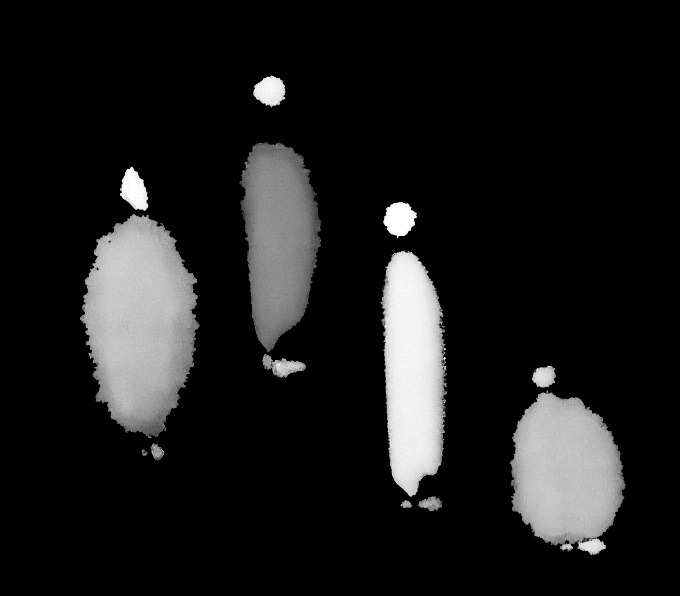
須菩提向佛提問，修行者發了大菩提心之後，如何維持初心，降服自己的妄想和煩惱。
佛告訴須菩提：“諸菩薩摩訶薩應該這樣降服妄想煩惱：所有一切眾生，有卵生、胎生、溼生、化生、有色、無色、有想、無想、非有想非無想，我都會讓他們涅槃成佛。雖然我度了無數眾生，然而實際上沒有眾生成佛。為什麼呢？須菩提，如果菩薩有我相、人相、眾生相、壽者相，那就不是菩薩。”
1．摩訶薩：譯為大。從我們的角度來說，四大職業的人可以稱之為“菩薩摩訶薩”。一般的菩薩雖然要普度眾生，但是只要度完和自己有緣的眾生就可以成佛。在這裡加“摩訶薩”，也就是大菩薩，就要有平等普化心，願意度和自己無緣的眾生，這樣才可以稱之為“菩薩摩訶薩”。
一些書中還有解釋，“摩訶薩埵”要具備七個條件：一具大根，二有大智，三信大法，四解大理，五修大行，六經大時，七證大果，以上都是教課文似的解釋。佛經傳播的時間很長，在傳播過程中，後人不斷加新的解釋，或者延展開來更多的意義。有些內容過於繁瑣，對實際修行沒有太大用處，反而有些過度解釋的嫌疑。
2．卵生、胎生、溼生、化生、有色、無色、有想、無想、非有想非無想：先看“四生”——卵生、胎生、溼生、化生。
“化生”最簡單，也是最高階的出生方法，“化生”不需要父母，全靠自己的意願忽然出現。
從欲界天開始，到下面的各個世界，有淫慾的眾生都會胎生或者卵生、溼生。在欲界天，也有一部分境界很高的天人會化生，是自願生到欲界天的高階天人。除此之外，大部分有淫慾的眾生都是用胎生的方式生到欲界天。
欲界天眾生的父母緣比較淡薄，因為那裡沒有明確的教育體系，眾生學習的過程不像我們人間這般強行灌輸。他們有一定的神通，可以全靠自己的意願，輕易地學習很多知識。
胎生：除了自己有出生的慾望之外，還要有父母之緣。
卵生：除了父母的緣分之外，還需要暖緣，因為這類眾生喜歡溫暖的地方。
溼生：除了父母之緣之外，還需要水緣，因為這類眾生喜歡潮溼或者有水的地方。
有色、無色：“色”指色界天的眾生，“無色”指無色界天的眾生。佛經裡說，人間以上的天界共有二十八層——欲界六天，色界十八天，無色界四天。
有想、無想：有想眾生和無想眾生中的“想”指的是情緒，有情緒就有慾望，有慾望就想著去滿足這個慾望，所以叫“有想”。相反，沒有情緒就沒有慾望，也就不需要“想”。從四禪天開始，到無色界天的下三天都沒有情緒，所以叫“無想”，那裡的眾生沒有“思考”這個概念。
非有想非無想：指最高一層“非想非非想處天”的眾生。
從“非有想非無想”開始，到最後的“溼生”，囊括了輪迴內的所有眾生。
以上是我個人的理解，與實際修行沒有直接關聯的內容，就算有多種解釋也沒有什麼影響，望讀者自行取捨。
3．入無餘涅槃而滅度：是成佛的意思。
4．我相、人相、眾生相、壽者相：在《坐禪2》的“分別心”部分有詳細解釋。有了分別心就會出現我相和人相，就會成為阿羅漢；菩薩沒有分別心，也就沒有四相。如果菩薩出現了四相，就會跌落為阿羅漢，不再是菩薩。
《金剛經》最重要的一點是，佛講“眾生眾生者，如來說非眾生，是名眾生。”這類說法多次出現，讓初學很迷惑，到底有沒有眾生？在這裡，佛把外部的客觀世界和內部的意識分開來講——外部有真實的眾生，但是在佛菩薩的意識當中沒有眾生分別心，也就是沒有四相。所以“如是滅度無量無數無邊眾生，實無眾生得滅度者”這句話可以成立。
只要知道《金剛經》裡講的都是意識裡面的認知，並不是外部的客觀世界。理解了這一點，就很容易理解《金剛經》的大義。
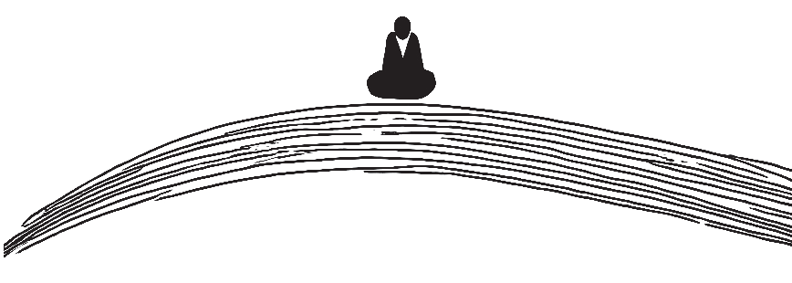
佛回答：修行者要維持大菩提心，應當滅盡分別心，安住於無分別（無四相）的境界中。
“再者，須菩提，菩薩在做法佈施時，不應執著。不執著色、聲、香、味、觸、法地法佈施。須菩提，菩薩應該這樣佈施，不應執著於相。為什麼呢？如果菩薩佈施時不執著於相，那麼他得到的福德大得不可思量。須菩提，你怎麼認為？東方虛空可以思量嗎？”
“不能，世尊。”
“須菩提，南、西、北方、四維、上下虛空可以思量嗎？”
“不能，世尊。”
“須菩提，菩薩佈施時不執著於相，這個福德同樣不可思量。菩薩應該如此佈施。”
1．無所住：在這裡“住”是執著，“無所住”就是不執著。
2．佈施：佈施有“財佈施”“無畏施”和“法佈施”三種。“財佈施”是錢財、物質上的佈施；“無畏施”是情緒上的佈施，“令眾生離諸怖畏”，就是在情緒上能讓別人生起歡喜心或者幸福感。《地藏經》裡說婆羅門或者國王等身份高貴的人，給身份低賤的人佈施時，如果“親手遍佈施”並“軟言慰喻”，其福德非常之大。這裡的重點是“軟言慰喻”，要用柔軟語安撫其心，這就是“無畏施”。佛說這種情緒上佈施帶來的福德，遠大於財佈施。
第三種佈施叫“法佈施”。傳法度人的行為稱之為“法佈施”，給他人贈送經書結佛緣也可以叫“法佈施”。但是在嚴格意義上說，只有已經解脫的再來人，才可以做法佈施；其他凡夫傳法者的傳法行為最多只能算是幫眾生結佛緣。儘管如此，這種傳法活動的功德還是很大。所以還是鼓勵凡夫修行者，不管是出家人還是在家人，多做法佈施，儘自己所能去引導周邊的有緣人。但是在具體操作上，我們不鼓勵主動去做點對點的傳法，這種行為往往沒什麼好結果，還可能會被人誤解和詆譭。只有當有人需要或者向你求法時，你再認真指導就可以了。真正發願普度眾生的修行者，機緣成熟時，佛菩薩會引來一些有緣人來求法。
還有，功德和福德不一樣。在佛法上做的善行叫“功德”，比如去寺院捐款、供養三寶、印經結緣等。福德指的是與傳法無關的，單純的財佈施或者無畏施。這一章裡用“福德”來統稱，並沒有細分。
3．色、聲、香、味、觸、法：這是六塵，與眼、耳、鼻、舌、身、意六根相對應。六塵、六根、六識合稱“十八界”，都是注意力上產生的執著。“色”是用眼根能看到的物質世界。廣義上，“色”是物質世界的統稱，我們看到的一切物，包括我們的肉身和虛空，都稱之為“色”。“聲”是用耳根聽到的音；“香”是用鼻根嗅到的氣味；“味”是用舌根嚐到的味道；“觸”是用身根觸覺觸碰到的體感，還有用身根冷暖覺感受到的溫度；“法”是意識裡的思維。
4．思量：思考和度量。
1．在這一章裡，“菩薩”這個詞是通名，並不是果位上的菩薩，是對人的尊稱。一般在寺院裡女信眾叫“菩薩”，男信眾叫“居士”。中國內地和韓國都這麼叫。藏傳佛教還叫僧人為“活佛”。“佛”在大乘裡是帶有神性的稱呼，不能給活人用，但是在藏傳佛教卻可以用。
為什麼說“菩薩”在這裡是通名？因為後面佛說道：“應無所住，行於佈施”。果位上的菩薩做的佈施叫“無相佈施”，是沒有分別心的境界裡做的佈施。“無所住”中的“住”指的是凡夫的執著心，“無所住”就是不執著，也就是阿羅漢的分別心境界。分別心也叫“平等心”，是把多種不同的事物或眾生分別認知的境界。“平等心”這個詞強調的是與“執著心”的相對性。沒有執著的時候稱之為“平等心”，也叫“無所住”。“分別心”這個詞強調的是與“妄想”的相對性。菩薩沒有分別心，只有妄想，菩薩用妄想認知世界的時候，所有眾生之妄想混為一體，不分彼此，這種狀態稱之為“無相”；“有分別”就是“有相”，也就是阿羅漢的境界。
在這裡“無所住，行於佈施”指的是沒有執著心的佈施，也就是在阿羅漢的分別心境界裡進行的平等佈施。在這之上就是菩薩的妄想境界裡進行的無相佈施。
2．下半段中佛說，菩薩（修行者）傳法時，如果不執著於相，那麼他得到的福德非常巨大。佛先問須菩提，東、西、南、北、四維、上下的虛空大不大；得到肯定的答覆後，佛說菩薩如果能做到不住相的法佈施，那麼他得到的福德像虛空般巨大。這是同時用了對比和比喻的敘述方式。（在《坐禪2》中詳細解釋了加持力傳遞的原理，還有功德、福德產生的原理和計算方法。）
菩薩傳法（法佈施）時，不應執著於外境（色、聲、香、味、觸、法），那麼他得到的福德猶如虛空般巨大。
佛問須菩提：“須菩提，你怎麼認為？可以用佛的身相求得佛法的真諦嗎？”
須菩提回答：“不能，世尊。不可以用佛的身相求得佛法的真諦。為什麼呢？如來說的身相不是身相。”
佛告訴須菩提：“所有的相都是虛妄。如果悟到諸相都不是相，那就悟到了佛法的真諦。”
1．如來的身相有“三十二相”“八十種好”之說。但這都是如來顯現出來的化身或報身。化身是佛菩薩在法身地用神通給凡夫顯現的幻覺；報身是菩薩帶著業進入輪迴世界，由自己的妄想、分別、執著和業和合而成。
2．“身相見如來”中的“如來”：並不是指某位佛，而是指佛法的真諦，也就是宇宙真相。
3．身相即非身相：在這裡“身相”是分別心中產生的幻，在沒有分別心的境界裡本不存在。因此可以說，“身相不是身相”，也可以說，“身相等於非身相”，我們只是給它取名叫“身相”。
4．凡所有相皆是虛妄：一切相都是分別心中產生的幻。
5．若見諸相非相，即見如來：在這裡，不能把“非相”當作與“諸相”相對的、由分別心產生的另一種“相”。如果這樣認為，那麼意識裡還有“諸相”和“非相”，也就是阿羅漢的境界，那就見不到如來。所以在這裡，佛的真意是：當諸相不再是相——分別心滅盡，一切相消失時，就可以見到如來。這裡的“見”也不能理解為凡夫的肉眼所見，應該理解為“證悟”。
不可以用我們看得見的身相求得佛法的真諦，因為一切相都是虛妄，是不真實的。只有當分別心滅盡，一切相消失時，才可以悟到佛法的真諦。
須菩提問佛：“世尊，未來眾生聽到這樣的內容，能升起真實的信心嗎？”
佛告訴須菩提：“不要這樣說，如來入滅後五百年，有持戒修福的修行者會對以上內容升起信心，會把這些內容當做真法。要知道這些人不止在一佛、二佛、三、四、五佛處種下善根，而是在無量千萬佛所種下善根，因此聽到這些內容會在一念間升起信心。須菩提，如來都知道，這些眾生會得到無量福德。為什麼呢？須菩提，這些眾生不再有我相、人相、眾生相、壽者相，也沒有法相和非法相。為什麼呢？如果這些眾生心中執著於相，那麼已經執著於我相、人相、眾生相、壽者相；如果執著於法相，也已經執著於我相、人相、眾生相、壽者相。為什麼呢？如果執著於非法相，也已經執著於我相、人相、眾生相、壽者相。因此不應執著於法，也不應執著於非法。正因為如此，如來常說，你們這些比丘要知道，我所說的法就像木筏的比喻一樣。法應該要舍，更何況是非法。”
1．善根：也叫“善本”或“德本”，無貪、無嗔、無痴三者為善根之體，合稱為“三善根”。貪、嗔、痴和善根相對應，叫“三毒”。又“善法為得善果之根本”，所以稱為“善根”。
2．取相：“取”是執著。執著有“見”“取”“執”三種境界。
3．著相：“著”也是執著。我們習慣用“執著”，但也有書用“執著”。
4．筏喻：出自《中阿含·大品阿梨吒經》，佛為阿梨吒比丘說筏喻。“筏”是木筏，是去往彼岸的交通工具，到了彼岸應當捨棄，沒人會帶著筏一直前進。以此比喻佛說的法就像木筏一樣，到了涅槃境界，應當捨棄法。
1．在這裡“實信”是關鍵詞，眾生聽到佛說的義理，能相信和接受嗎？所有的佛經都是教職業的人專門編寫出來，就是為了引起人們的“信”。先有了信，才會有後續的發願、戒行、善行、修行。什麼是“實信”（真實的信）？從禪定境界來看，只有到了四禪才開始出現真實的信。
四禪以下的三禪還有情緒，情緒當中就包含疑心。有情緒的眾生說信，從高維的菩薩、羅漢視角看，無法完全信任。有情緒的眾生本身就有疑心，所說的信隨時會變。只有到了四禪，情緒滅盡後，才開始生起真實的信。
發願也一樣，從四禪開始才是真正的發願，之前都是靠凡夫的執著心，用情緒帶出來的慾望發願。所以當遇到一些困境帶來的巨大痛苦時，慾望可能發生改變。比如，我本來想度一個人，相處一段時間之後發現這個人相當惡劣，還反過來攻擊我；我就會升起不好的情緒，度人的慾望可能會動搖，會產生放棄的想法。
所以嚴格的意義上講，四禪以上才會“生實信”。本章中的“實信”我們可以簡單理解為四禪以下的普通眾生生起的“堅定的信心”。
2．如來滅後，後五百歲
有兩種解釋：
第一種是字面意思。佛的入滅時間有爭議，通常說是公元前543 年左右，從這裡開始算五百年，叫“如來滅後五百歲”，第二個五百年叫“如來滅後，後五百歲”，即公元1 年到500年之間。
第二種解釋是佛入滅後的第五個五百年，即公元1500 年到2000 年之間。通常說，佛入滅後的第一個一千年是正法時代，即公元前500 年到公元500 年；第二個一千年是像法時代，即公元500 年到公元1500 年；之後是末法時代。那麼“後五百歲”就是末法時代開始之後的時間段。
我個人傾向於第一種解釋。因為後文中說道，生實信的眾生沒有四相，也沒有法相和非法相，那就是菩薩再來的人。正法時代有不少菩薩投胎入世；到了末法時代，境界高的人投胎越來越少。
那麼我們這些凡夫聽完、相信佛說的內容，算不算沒有四相、法相、非法相。我認為不能這麼看，因為大部分人連四相是什麼、如何產生都不知道。我們說的信，不是真正理解佛理後的信，而是我們信佛，所以佛說什麼都認為是真的，是這種盲信。
在《坐禪2》中講到，本次文明的傳法活動以五百年為一個階段，共分成六個階段。前三個階段共一千五百年，以印度作為文明主角進行傳法。第一個五百年，先派一些人下去，建立尊重修行人的文化氛圍和社會環境；第二個五百年，釋迦牟尼佛出世傳法，是印度的正法時代；第三個五百年——公元1年到公元500 年，是印度的像法時代。“如來滅後，後五百歲”就是這第三個五百年時期。到了公元600 年、700 年之間，印度的佛法基本消失。
在這裡為什麼強調“後五百歲”？因為每隔一段時間，眾生的根器會跌落一段。越往後，菩薩、羅漢轉世的修行者會越來越少，大部分都是凡夫修行者。
3．聞是章句乃至一念生淨信者。須菩提，如來悉知悉見，是諸眾生得如是無量福德。
在如來看來，光是信《金剛經》就有無量福德。有些人會有懷疑：“光信一部佛經，什麼都沒做，也能有福德嗎？”
我們已經知道“諸佛同體”的真相，眾生的意識在自性層面上全部重疊在一起。那麼光是相信真理或者佛經裡的某句話，同樣也會對和我們重疊在一起的有緣眾生產生一定的影響。只要產生了正面的影響，就會產生功德。
用我們看得見的現實來說，如果家裡有一個人信佛，他每天嚴持禁戒，奉行十善，精進修行，就算他不去勸周圍的親人信佛，也會影響到他們的情緒和行為。因此，佛說光是信《金剛經》，也能得到無量福德。
4．法相、非法相：法與非法在《楞伽經》中有解釋。我們的肉身、意識、外部的器世界，統稱為“法”，也就是世間一切。“非法”有兩種，一種是與世間一切相對應的“空”；還有一種是我們憑空想象出來的、不存在的東西或者觀念。“法相”就是世間一切的相，“非法相”就是“空相”和我們的妄念。
還有一種方便的解釋，一般給初學講：“法”指佛法，世間一切都是佛法。與之對應的“非法”就是外道之法，也就是“非佛法”。這樣理解也可以。
我們不應執著於“法”，也不應執著於“非法”，因為“法”與“非法”是從分別心中產生的幻。
這一段裡，佛說相信《金剛經》的人，沒有“四相”，也沒有“法相”和“非法相”。這些人已經滅了分別心，我們可以理解為這些人是菩薩再來的人；也可以理解為相信《金剛經》的人，已經知道了分別心的真相，具備了滅盡分別心、成為菩薩的理論基礎。如果這麼理解，凡夫修行者也包括在內。
可以肯定的一點是，靠修行滅分別心需要時間，不是信某部佛經就可以馬上滅盡分別心成為菩薩。
5．是諸眾生，若心取相，則為著我、人、眾生、壽者。
如果眾生執著於相，那麼他就是執著於四相，因為“我相”和“人相”是分別心中最早出現的相。只要我們執著於某個相，那麼我們肯定執著於“我、人、眾生、壽者”。原文中的以下內容同理。
公元1 年到公元500 年，在印度的像法時代，有修行人還信《金剛經》裡的義理，那麼這些人已經在無量佛所種了很多善根。如來知道，也看到，這些人會得無量福德。為什麼呢？因為這些人在理論上已經知道了分別心的真相，會往滅除分別心、成為菩薩的方向努力。（也有可能是菩薩再來的人。）
如果有人執著於任何相，那麼他已經有了分別心，也就是四相和法相、非法相。因此我們不應執著於任何相。佛常告訴比丘們，佛所說法就像“木筏”一樣，過了河就要捨棄；連“法”都要捨棄，“非法”更應捨棄。
“須菩提，你怎麼認為？如來得無上正等正覺嗎？如來曾經說過法嗎？”
須菩提回答：“根據我瞭解的佛所說之義理，沒有什麼固定的法稱之為‘阿耨多羅三藐三菩提’，如來也沒有什麼固定的法可講。為什麼呢？因為不能執著於如來所說的法，如來所說法本來就是不可說的，既不是法，也不是非法。一切聖賢都是在無為法上有差別。”
1．阿耨多羅三藐三菩提：是無上正等正覺，簡單來說就是成佛。
2．“如來所說法皆不可取”中的“取”：是執著，是貪取。在這裡可以理解為從外學習。
3．賢聖：可以理解為菩薩、羅漢等修為高的人。
1．“法”與“非法”都是從分別心中產生的幻，在這裡的含義是：如來所說的法是超越分別心的真理。
2．賢聖：在我們的語言習慣中，聖賢指道德高尚之人，在思想或學術方面具有很高的造詣，為國家和人民，甚至全人類做出貢獻的人。
在佛菩薩的世界裡，阿羅漢叫“尊者”，菩薩叫“聖人”，等覺菩薩叫“聖王”，也叫“轉輪聖王”。除了佛以外，最高階別的菩薩叫“法王”，是四大職業的首座和他的搭檔，一共八人，再加上一對掌戒菩薩，這樣一個世界最多有十名法王。
例如，文殊菩薩也叫文殊師利法王子，目前在娑婆世界，文殊菩薩兼著禪職業和人王職業的首座。
3．無為法：從我們世俗觀念來講，無所求、無所欲、無造作稱之為“無為法”，就是靜靜地待著，不主動找事做，被動而活。但也不是什麼都不做，當命運中有事來了就盡力而為，要“盡人事，聽天命”。
我們修行人要的就是這種被動的生活態度。平時不主動參加無效的社交活動、不主動謀取財富和名譽，滿足於現狀。因為命中該有的自然會來，命中沒有的，再努力也得不到。如果是命運和生活逼迫你去做一些事，也可以看作無為法。比如，有些人從小家庭困難，被迫早早懂事，還要出去工作，賺錢補貼家用，這種被命運所迫做的事也算無為法。
在修行方面，無為法是儘可能地滅妄想、分別、執著的意思。
“一切賢聖皆以無為法而有差別”這句話的意思是，修行人是在滅妄想、分別、執著的程度上，分出境界的高低。
佛法的修行是以靜為主，什麼都不做，保持身心的清淨為最上。眼不見，耳不聞，身不動，練習長時間不用六根，就是禪定，最終可以滅除對六根的執著。要在意識層面上，滅除文字妄想和淫慾，熄滅注意力和情緒，心無牽掛，無所希求，如此便可斷生死、出輪迴。
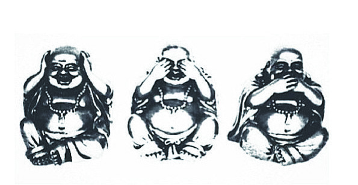
沒有什麼固定的法稱之為“阿耨多羅三藐三菩提”，如來也沒有什麼固定的法可講。修行人不能執著於如來所說的一切法。如來所說法本來就是不可說的，不是法、也不是非法。修行人在滅妄想、分別、執著的程度上，分出境界的高低。
佛問須菩提：“用滿三大千世界的寶貝來佈施，這個人得到的福德多嗎？”
須菩提回答：“非常多，世尊。這裡說的福德不是本體，所以如來說福德多。”
佛說：“如果有人受持《金剛經》，乃至四句偈等，還為他人解說，所獲得的功德比前者大。為什麼呢？須菩提，所有的佛和成佛的法門都從《金剛經》中出。須菩提，所謂的佛法即不是佛法。”
1．三千大千世界：在《坐禪2》中的“創世”章節裡有詳細描述。
2．七寶：七種寶貝。《般若經》中說的七寶是金、銀、琉璃、珊瑚、琥珀、硨磲、瑪瑙。《法華經》《阿彌陀經》《大智度論》中說的七寶都不一樣，我們無需在意。
3．受持：“受”是相信並接受之意。“持”是修持之意。念一遍佛經不叫修持，要把佛經當作修行法門，每天做功課時反覆地念才叫“修持”。
1．本章中，用財佈施的福德和法佈施的功德相比較。在這裡福德和功德有區別，與佛法不相關的善行積下的叫“福德”，在佛法上所做的善行積下的叫“功德”。福德在本質上無法和功德相比，因為佛法是引導人解脫生死的真理，在這裡做的善行會讓人永恆地斷除煩惱。與佛法不相關的善行雖有福德，但不能引導人解脫生死，只能緩解當下的痛苦，有時候還會讓人對這個三界火宅產生更大的執著。因此福德不能與功德相比。
2．“福德”與“福德性”：“性”是本體，我們所說的福德沒有福德之本體；從本體上論，應該叫空，因此不能用多寡來形容。但是，這裡說的福德是凡夫的執著層面上的福德，沒有說本體，所以可以用多寡來形容，因此如來說福德多。
3．所謂佛法者即非佛法：“佛法”是分別心中產生的相，是沒有本體的幻，所以佛法也可以稱之為“非佛法”。在沒有分別心的境界裡，既沒有佛法，也沒有非佛法。

一切佛與成佛之法門都從本經中出。佛法與非佛法都從分別心中產生，本經的核心內容就是分別心。因此受持《金剛經》的福德巨大，遠遠超過財佈施。
佛問：“須菩提，你怎麼認為？證得須陀洹果位的人會升起‘我得須陀洹果’這樣的念頭嗎？
須菩提回答：“不，世尊，因為須陀洹也叫‘入流’，但實際上沒有什麼可入之處，不執著於色、聲、香、味、觸、法六根境界，這種境界取名叫‘須陀洹’。”
佛又問：“須菩提，你怎麼認為？證得斯陀含果位的人會升起‘我得斯陀含果’這樣的念頭嗎？”
須菩提回答：“不會，世尊。因為斯陀含果也叫‘一往來’，但實際上沒有所謂的往來，只是取名叫‘斯陀含’。”
佛繼續問：“證得阿那含果位的人會升起‘我得阿那含果’這樣的念頭嗎？”
須菩提回答：“不會，世尊。阿那含也叫‘不來’，但是實際上沒有什麼‘不來’，只是取名叫‘阿那含’。”
佛又問：“證得阿羅漢果位的人會升起‘我得阿羅漢果’這樣的想法嗎？”
須菩提回答：“不，世尊。實際上沒有什麼法可以稱之為‘阿羅漢’。如果阿羅漢升起‘我得阿羅漢果’這樣的念頭，那麼他已經執著於四相。世尊，佛說我得無諍三昧，人中最為第一，是第一離欲阿羅漢。但是我不升起那樣的念頭。如果我心中升起‘我得阿羅漢道’這樣的念頭。世尊就不會說我是樂阿蘭那行者。實際上我無所行，只是取名叫‘須菩提’，說我‘樂阿蘭那行’。”
1．須陀洹、斯陀含、阿那含：須陀洹相當於四空定中的識無邊處定的果位；斯陀含相當於四空定中的無所有處定的果位；阿那含相當於四空定中的非想非非想處定的果位。三個果位都是阿羅漢以下的果位，也就是還在輪迴內。
2．入流：初入聖人之流之意。斷三界之見惑，逆生死之流。得此果位者再經七番生死，必入涅槃。這裡的“涅槃”不是成佛的意思，是成為阿羅漢，斷生死、出輪迴的意思。
“不入色、聲、香、味、觸、法”意思是已滅六根境界，不再執著於五欲六塵。在這裡“法”是意識中的妄想，包括文字妄想、注意力、情緒等。因此不執著於法的人就不會升起“我得須陀洹果”這樣的念頭。
3．一往來：只需再投胎人間一次就可以修成阿羅漢出輪迴。
4．不來：這一生死了就不再受生，成為阿羅漢。
5．無諍三昧：“無諍”就是不和他人爭論、爭辯、鬥爭的意思；進一步說，心中已經沒有鬥爭之觀念。“三昧”就是禪定。
6．第一離欲阿羅漢：“離欲”就是滅盡一切慾望的意思。一切慾望都是執著，所以“第一離欲阿羅漢”就是已經沒有一切執著的阿羅漢。
7．樂阿蘭那行者：“阿蘭那”原意為樹林，代指清靜之地。“樂阿蘭那行者”就是喜歡在清淨之地獨自修行的人。
1．若阿羅漢作是念，我得阿羅漢道，即為著我、人、眾生、壽者。
佛也可以稱之為眾生，所有的意識都可以稱為眾生。這裡的阿羅漢是已經沒有執著、解脫生死的眾生，但還有菩薩的妄想和阿羅漢的分別心。有了分別心就有我相、人相、眾生相、壽者相，所以阿羅漢本來就有四相。但是阿羅漢沒有執著，所以說，阿羅漢不著我相、人相、眾生相、壽者相。大家要明確知道“有四相”和“著四相”之間的區別。
在“我得阿羅漢道”這句話裡，“我”是我相，也就是分別心。“得阿羅漢道”是執著，是“見、取、執”中的“見”和“取”。再細分開來，“這是阿羅漢道”叫“見”，“我認為這是什麼”這樣的想法就是“見”；“得阿羅漢道”中的“得”是取——貪慾。
所以，阿羅漢要是升起“我得阿羅漢道”這樣的念頭就不是阿羅漢，因為這個想法裡已經有了分別心和執著。
2．須菩提實無所行：須菩提沒有什麼修行的行為。“修行行為”和“非修行行為”也是在分別心中產生的兩種對立的相。所以，如果須菩提有“認為自己修行”或者“認為自己不修行”的想法，他就不是阿羅漢。


如果修行者認為自己在修行，或者升起“我是誰”“我得什麼果位”等念頭，那麼他就有我見，也就不是阿羅漢。
佛問須菩提：“你怎麼認為？如來過去在然燈佛處，學到什麼法了嗎？”
須菩提回答：“不，世尊，如來過去在然燈佛處，並沒有學到什麼法。”
佛問須菩提：“你怎麼認為？菩薩莊嚴佛土不？”
須菩提回答：“不，世尊，‘莊嚴佛土’等於‘非莊嚴佛土’，只是取名‘莊嚴’”。
佛說：“所以，須菩提，諸大菩薩應該這樣生清淨心，不應執著於色、聲、香、味、觸、法生心，應該沒有任何執著地生心。須菩提，譬如有人身體像須彌山王那麼大，你怎麼認為？他的身體很大嗎？”
須菩提回答：“很大，世尊。為什麼呢？佛說的大身並不是真實存在的身，只是取名叫‘大身’。”
1．在這裡出現另一位佛，叫“然燈佛”。釋迦牟尼佛自己說過，在見到然燈佛之前，已經在很多世界見到很多佛，並且在他們的佛法上種下善因、做了很多功德。
在遇到然燈佛的時候，釋迦牟尼佛（前世）也是修行人，是有福報的人，但不是出家人。他看到然燈佛要進城，就去迎接。這個時候已經有很多人去迎接佛，還把城市打掃得非常乾淨，但是在然燈佛必經的路上還有一灘水。釋迦牟尼佛（前世）就趴在地上，把自己長髮散開，鋪到這灘水上，讓然燈佛踩著自己的頭發過去。
然燈佛應該沒有情緒，也不會感動，但是看到這樣的情形，就給釋迦牟尼佛（前世）授記說：過後九十億劫，等你修滿三阿僧祇劫時，你應當做佛，號釋迦牟尼。
在這裡我們要明確地知道，佛授記某人未來會成佛，是先確定這個人有大菩提心的前提下才會做。當我們發大菩提心，發願度一切有緣眾生的時候，我們的業才會開始減少，走上真正的解脫之路。還有，我們的修為要達到四禪以上。因為四禪以下有情緒的時候，我們發願是用情緒帶出來的慾望，並不堅固。我們的情緒和慾望是無常善變的，有可能今天發願，明天又退轉；也有可能遇到困境就退縮。所以只有修到四禪，滅盡情緒和慾望之後，所發的願才是真正的願，佛也只給這樣的人授記。
在這裡然燈佛給釋迦牟尼佛（前世）授記，說明釋迦牟尼佛（前世）已經修到了四禪以上，並有大菩提心。
2．莊嚴佛土：普度眾生的行為稱之為“莊嚴佛土”。
佛菩薩度人有三種方式：第一種方式叫禪那，是提供全面加持力的方式；第二種是提供點對點的幫助和引導的方式；第三種是帶著業進入輪迴，一邊消業一邊度人的方式。真正的傳法需要一個團隊，三種方式同時進行才能順利度人。（詳見《坐禪2》。）
莊嚴佛土者則非莊嚴，是名莊嚴。
如果仔細分析，“則”和“即”有不同的含義。第八章最後一句“所謂佛法者即非佛法”，意思是佛法不是佛法。“莊嚴佛土者則非莊嚴”，意思是“莊嚴佛土”等於“非莊嚴”。“莊嚴”與“非莊嚴”都是分別心中產生的相，在沒有分別心的境界裡本不存在。因此可以說，“莊嚴不是莊嚴”，也可以說，“莊嚴等於非莊嚴”，我們只是給它取名叫“莊嚴”與“非莊嚴”。如果菩薩認為自己在莊嚴佛土，認為自己在度人，有這樣的想法就不是菩薩。
3．是故，須菩提，諸菩薩摩訶薩應如是生清淨心，不應住色生心，不應住聲、香、味、觸、法生心，應無所住而生其心。
“菩薩摩訶薩”是大菩薩，有大菩提心的人，甚至有更高的平等普化心和同體大悲心的人。
“清淨心”，在第二章和第三章中佛講到，發阿耨多羅三藐三菩提心之後如何維持，如何降服其他妄想。所以我們可以把“清淨心”理解為大菩提心。
菩薩度人的大願是在沒有一切相的境界裡所發。菩薩的意識裡有“這裡有眾生，我要度他”這樣的念頭，那麼他已經執著於人、我、眾生、壽者，已經不是菩薩。真正的菩薩是在無相的境界裡，純粹以願力去度眾生，而且也不會有“自己在度人”這樣的想法。
“不應住色生心”，“住”是執著，“色”是物質世界的統稱，我們的肉身、外部的器世界、虛空，統稱為“色”。
此段大義如下：大菩薩們應該這樣發大菩提心——不應執著於色而生心，不應執著於六根境界而生心，應該不執著於一切而生其心。
4．“須菩提，譬如有人身如須彌山王，於意云何？是身為大不？”
須菩提言：“甚大，世尊。何以故？佛說非身是名大身。”
“須彌山”從忉利天的中心開始，一直往下，到四天王天、我們所在的宇宙，再到下邊地獄世界為止，就像一根釘子一樣，串連著四個世界。這四個世界的眾生都依地而居。
在忉利天的須彌山山頂上，有忉利天宮，住著帝釋天。下邊的四天王天又分成四個部分，由四位天王分別管理。每個天王又有幾個兒子，天王們把自己統治的地區分給自己的幾個兒子來管。再往下到我們這個世界，同樣分成四個部分，歸屬上邊的四個天王來管。
“身如須彌山王”，比喻身體非常巨大。
“佛說非身是名大身”，在這裡省略了“大身”一詞，應該是“大身，佛說非身，是名大身。”“身”與“非身”都是分別心中產生的相，在沒有分別心的境界裡本不存在。因此可以說，“大身不是身”，也可以說，“大身等於非身”，我們只是給它取名叫“大身”與“非身”。

“法”與“非法”，“有所得”與“無所得”，“莊嚴”與“非莊嚴”，“身”與“非身”都是從分別心中產生的相，在沒有分別心的境界裡本不存在。大菩薩們應在無相的境界裡發大菩提心，不能執著於六根境界。
佛問須菩提：“如果恆河中的每一粒沙變成一條恆河，這麼多恆河中的沙，也就是恆河沙數的平方，它的數量多不多？”
須菩提回答：“光是恆河的數量就已經無數了，其中的所有沙數，應該非常多吧。”
佛說：“須菩提，那我今天如實地告訴你，如果有善男子、善女人，用七寶裝滿恆河沙數的平方般多的三千大千世界，再用以佈施，那麼他得到的福德多不？”
須菩提說：“非常多，世尊。”
佛告訴須菩提：“如果有善男子、善女人，自己受持《金剛經》，乃至四句偈，或者為他人解說《金剛經》，所獲得的福德比用裝滿恆河沙數平方的三千大千世界的七寶用來佈施的福德還要多。”
1．恆河：印度的大河，意為“從天堂來”。起源於喜馬拉雅山南坡，一直流經印度北部，到現在的孟加拉國進入孟加拉灣入海，全長2700 公里，流域面積106 萬平方公里，兩岸約1500 公里長的土地，在恆河的灌溉下物產豐富，被印度教視做聖河。在佛經裡，佛陀經常用恆河沙來比喻某些事物的數量非常多，以至於無法衡量。但它是可數的，只是數量太多，難以計算而已。
福德與功德不一樣。在佛法上種的善因、做的善行獲得的叫“功德”；與佛法不相關的善行獲得的叫“福德”。這裡用財佈施所得的福德和佛法上的功德相比較。
佛說的意思是，自己修行和傳法的功德，遠大於財佈施的福德。為什麼呢？因為傳法是教人解脫的智慧，引導人離開痛苦的輪迴、最終成佛，是究竟之法。相比而言，與佛法不相關的善行，雖然可以幫助到人，也讓人升起歡喜心，但無法讓人解脫生死，有時候我們的善行還會讓他人更沉溺於輪迴中。因此，這類善行並不是究竟之法。
歷史上有名的龐蘊居士，把大量的錢財沉入海底也不願佈施於人。因為他自己是商職業菩薩轉世的再來人，從菩薩的立場看，用這麼多錢財佈施他人，會讓人陷入更大的執著當中，從而沉迷世間，會離解脫越來越遠。
對於我們凡夫而言，佈施和行善很有必要，而且是必須的。因為我們凡夫在累世的輪迴當中，已經造了太多的惡業，那些結惡緣的眾生一直想找機會復仇，所以需要用大量的福德來稀釋惡緣眾生對我們的惡念。善行有善報，惡行有惡報，善報和惡報不能直接抵消，但是在惡報來臨的時候，用我們的善報可以稍微對沖一下，能給我們爭取一些時間，還能緩解惡報的程度。
因此對凡夫而言，行善佈施非常重要。只不過在義理上說，財佈施的福德遠遠不如法佈施的功德大，所以佛說法佈施為第一。

受持《金剛經》乃至四句偈，和給他人解說《金剛經》所獲得的功德，也就是自己修行和法佈施的功德，比財佈施的福德要大得多。
佛告訴須菩提：“如果有人講經，哪怕是講四句偈等，你要知道他講經的地方是一切世間天、人、阿修羅應當供養的地方，就像供養佛塔廟一樣。而這個受持讀誦《金剛經》，還為他人解說的人，未來必定成為菩薩。《金剛經》所在的地方，就相當於有佛，或者佛的親傳弟子常住一樣。”
1．阿修羅：我們可以理解為天界的畜生，好勝心強，喜歡鬥爭，雖然有天人的福德，卻沒有天人的智慧。
在這裡佛只講天、人、阿修羅上三道眾生。因為只有上三道的眾生有理解佛法的智慧，也有親聞佛法的機會；下三道的眾生沒有這個智慧，也就沒有親聞佛法的機會。
畜生道和人間處在一個空間，佛在世的時候畜生也可以來聽法，但是佛經裡從來沒有出現過畜生道的弟子。有智慧的畜生可以聽聞佛法，甚至可以修行，但是佛從來沒有收過畜生道的弟子。只有先成為上三道的眾生，才有可能成為佛陀的弟子。
大部分鬼道眾生因為智慧不足，無法自己學習佛法，只有少部分鬼王級別的鬼才能學習佛法。鬼道也有學習佛法的學校，但必須要有人間的親人做功德迴向，才能讓鬼道中的人去那裡學習；只不過無法學到高階的佛理，只能學到一定程度的基礎知識後投胎人間。
地獄道的眾生完全沒有智慧學習佛法。地藏菩薩雖然在地獄度人，但只是給地獄眾生結佛緣的機會，而不能直接傳授地獄眾生高階佛法。
2．供養：佛在世的時候，初期教團裡有“四事供養”的說法，是衣服、飲食、臥具、湯藥這四種物品。
先說衣服，比丘的衣服叫“袈裟”。佛說出家比丘只留一缽三衣，而接受的供養往往是布片。因為衣不遮體的窮人也很多，供養完整袈裟的人少，所以袈裟都是用很多布片縫合而成，因此也叫“百納衣”。現在，和尚穿的袈裟上有磚牆一樣的條紋，就是象徵當時的傳統。
再說食物。佛陀在世的時候，僧團沒有廚房和廚師，比丘們就靠化緣來獲得食物，因此在飲食方面要求並不高，施主供養什麼就吃什麼。佛陀傳法前期也提出了三淨肉的概念，允許比丘們吃三淨肉；到了後期傳大乘理論的時候才開始禁止吃肉。
還有臥具，頂多算是現在的草蓆之類，因為佛定下戒律——不能睡高廣大床。
最後是湯藥，用來治病的。這四種叫“四事供養”。
那個時代，僧團裡的比丘們都持金錢戒——不接受金錢供養，更不蓄財，只接受如上四種佈施物品。等佛法傳到後世，又出現了“五種供養”“六種供養”“十種供養”等說法。
3．塔：叫“浮屠”，起源於佛教。原來是指專門安放佛舍利的建築物，後來又出現了不安放佛舍利、只有紀念意義的佛塔，比如佛陀降世、成道、曾經講過法的地方，或者涅槃的地方等，在這些地方修建塔，用以紀念。所以有佛舍利的建築稱為“塔”，無佛舍利的建築稱為“支提”，用以區別。
佛塔傳到中國之後，就算沒有佛舍利安放，也可以建塔進行供養，特別是藏經閣。早期的寺院裡，很多藏經閣採用佛塔的建築風格。
後世有大德、大修行者去世之後，也可以把他的舍利或者遺物安放於一座佛塔進行供養。所以有些大寺院後面還有專門的塔林，供養著往昔有名的大修行者。
4．第一希有之法：在這裡指成為菩薩。
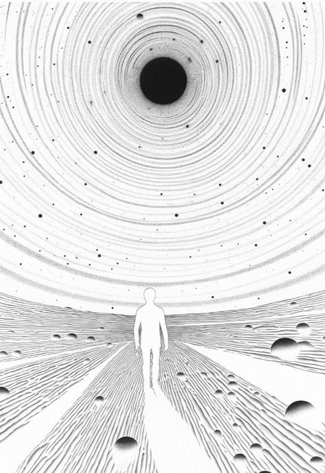
受持《金剛經》，或為他人解說《金剛經》的功德巨大，未來必定成為菩薩。經典所在之處，就像佛或佛的親傳弟子常住一樣，當受人、天、阿修羅之供養。
須菩提問佛：“這部經應該叫什麼名字？我們應該怎樣奉持？”
佛回答須菩提：“就叫《金剛般若波羅密》，以此名奉持。為什麼呢？須菩提，佛說的般若波羅密，不是般若波羅密，只是取名叫‘般若波羅密’。須菩提，你怎麼認為？如來說過什麼法嗎？”
須菩提回答：“如來沒有說什麼法。”
佛問：“須菩提，你怎麼認為？三千大千世界裡的所有微塵，它的數量多不多？”
須菩提回答：“非常多，世尊”。
佛說：“須菩提，所有的微塵，如來說它不是微塵，只是取名叫‘微塵’。如來說世界不是世界，只是取名叫‘世界’。須菩提，你怎麼認為？可以三十二相求見如來嗎？”
須菩提回答：“不能，世尊。不能以三十二相得見如來，為什麼呢？如來說三十二相不是三十二相，只是取名‘三十二相’。”
佛說：“須菩提，如果有善男子、善女人，佈施恆河沙數那麼多的身體和生命。又有人信受奉持這部經，乃至四句偈等，為他人解說，所獲得福報、功德比前者更多。”
1．須菩提，佛說般若波羅密，即非般若波羅密，是名般若波羅密。
須菩提，佛說的般若波羅密，不是般若波羅密，只是取名叫般若波羅密——這樣的語句在《金剛經》裡反覆出現。初學看到這種語句很容易迷惑，般若波羅密到底是不是般若波羅密。我們要知道，佛這裡講的並不是客觀存在的事物，而是在意識層面上的認知。菩薩的意識裡沒有分別心，也就沒有“般若波羅密相”和“非般若波羅密相”。“般若波羅密”本不存在，我們只是給它取名叫“般若波羅密”。因為佛要傳法，就要用語言，有語言就有名相，佛只是給他取個名而已。
後面的內容當中，“佛說什麼，即非什麼，是名什麼”這樣的語句多次出現，都是指在意識層面上的認知。
2．須菩提，於意云何？如來有所說法不？
須菩提白佛言：“世尊，如來無所說。”
佛問須菩提：“你怎麼認為？如來說過什麼法嗎？”
須菩提回答：“如來沒有說什麼法。”
須菩提雖然是阿羅漢，但是已經領悟到了沒有分別心的無相境界。所以他回答說，如來並沒有說什麼法。
3．微塵：在《華嚴經》和《俱舍論》中對“微塵”有講解。
佛講最小的粒子叫“極微之微”，也叫“鄰虛塵”，與虛空做鄰居之意。七個極微之微合成“色聚之微”，“色”就是物質，是物質形成的開始。七個色聚之微合成“微塵”。七個微塵合成“金塵”，金塵可以在金屬裡自由移動，可以理解為電子。七個金塵合成“水塵”，水塵可以在水中自由移動。七個水塵合成“兔毛塵”。往下還有“羊毛塵”，“牛毛塵”，“隙塵”。
佛還講到，阿羅漢的天眼能看到“微塵”，菩薩的天眼能看到“色聚之微”，佛的天眼能看到“極微之微”。
以上理論想用現代物理學來解釋，會有些牽強的地方，但有一點我們不能否定：在兩千五百年前，沒有顯微鏡的情況下，佛提出了這個世界由微塵和合而成的理論，還說到微塵再分解下去就是虛無，也就是說世界是無中生有的。
4．諸微塵，如來說非微塵，是名微塵。
“微塵”和“非微塵”都是從分別心裡產生的相，在沒有分別心的境界裡，微塵相和非微塵相本不存在。因此可以說，“微塵不是微塵”，也可以說，“微塵等於非微塵”，我們只是給它取名為“微塵”。
5．世界非世界，是名世界。
與上同理。“世界”和“非世界”都是從分別心裡產生的相，在沒有分別心的境界裡，世界相和非世界相本不存在。因此可以說，“世界不是世界”，也可以說，“世界等於非世界”，我們只是給它取名為“世界”。
6．不可以三十二相得見如來
三十二相：在《大智度論》裡講到，佛有三十二種殊勝的相貌，第一個叫“足下安平立相”，到最後一個“眉間白毫相”，在這裡不贅述。佛經裡講到，三十二相是佛和轉輪聖王所擁有的特殊外貌。轉輪聖王是等覺菩薩，從凡夫的視角看，等覺菩薩與佛並無差別，等覺菩薩也可以創造世界來度人。只要佛現出眾生看得見的相，他就已經動了妄想，所以佛是以等覺菩薩的狀態進行傳法活動的。
在這裡，“如來”指真正的佛法。佛說的意思是，執著於看得見的外相，就不能證悟佛法。
7．三十二相即是非相，是名三十二相。
與上同理。“相”與“非相”都是從分別心中產生的相，在沒有分別心的境界裡，“相”與“非相”本不存在。因此可以說，“三十二相不是三十二相”，也可以說，“三十二相等於非三十二相”，我們只是給它取名為“相”與“非相”。
8．須菩提，若有善男子、善女人，以恆河沙等身命佈施，若復有人，於此經中乃至受持四句偈等，為他人說，其福甚多。
佛告訴須菩提：受持四句偈或者為他人說《金剛經》的功德，遠大於用恆河沙等生命佈施的福德。
這又是一個比較，前面是用七寶進行財佈施，這裡是用身命佈施，比七寶貴重得多，福德也大很多。但是法佈施的功德更巨大。
佛法裡有身佈施的說法，後世講法者，包括我個人對這種身佈施的說法不置可否——既不提倡，也不反對。要不要身佈施，這都是個人的選擇問題。
在佛經裡，有佛陀割肉喂鷹、捨身飼虎的故事，這都叫肉身佈施，屬於福德的佈施。這種故事聽一聽便可，不提倡模仿。但是也有屬於功德的佈施，比如，為了求法進行的肉身佈施。
佛經裡講，佛陀在某個前世修行的時候遇到一個人，這個人其實是魔，他向佛陀講了半段偈語，佛陀想知道後半段，結果這個人說：“後半段可以告訴你，但是說完我就得吃了你。”佛陀毫不猶豫地答應，這個人也的確講了後半段偈語，說完就把佛陀吃掉了。這就是為了求法做的身命佈施。在這個故事裡，不只講的是佈施，還有求法的誠意、為了求法可以捨棄一切的態度。
還有非常重要的一點，很多人看不到這一點，佛陀並沒有問對方是什麼人！他沒有問：你是誰？你是出家人，還是在家人？是菩薩，還是羅漢？佛陀只是一聽到上半段偈語很有深意，就敢舍自己的生命求下半段，但是沒有問對方是誰。真正的求法者都是如此！
佛說修行如救燃頭急，如果我們頭上真的著火了，眼前有一桶水可以救火，我們還會關心這個水乾不乾淨、來自哪裡嗎？真正的修行人，對佛法有迫切需求的人，不會關心講法者的身份和來歷，他只關心法的真實性。
在這個故事裡，佛陀把自己的生命捨棄了，算不算佛陀吃虧呢？當下看的確是吃虧的。但是我們已經知道“諸佛同體”的原理，就知道佛菩薩的意識遍虛空的真相；我們的一切行為、一切言語、心裡的每一個想法，佛菩薩都知道。所以當有人為了求法捨棄生命時，佛菩薩自然會為其安排來世的修行，也會派真正的菩薩、羅漢來指導。
從這個角度來講，求法最重要的是發心——求道心、大慈悲心、大菩提心、平等普化心、同體大悲心；只要有這樣的發心，佛菩薩肯定會有安排。
佛給本經取名叫《金剛般若波羅蜜》。
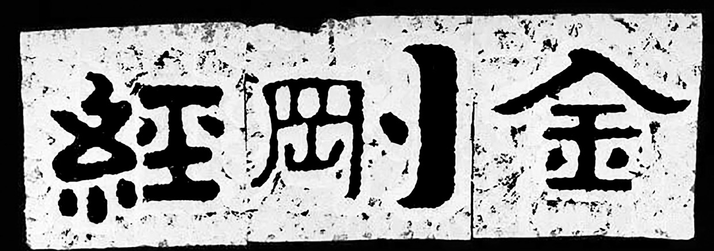

在沒有分別心的境界裡，沒有一切相，“般若波羅密”與“非般若波羅密”都是分別心中產生的相，它們本不存在，只是為了方便傳法，取名叫“般若波羅密”。於此同理，如來並沒有說什麼法，也不能用看得見的“三十二相”求見如來。受持《金剛經》，為他人解說《金剛經》的功德比佈施身命的福德還要大。
這時，須菩提聽聞佛所講的經，深刻領會了其中的義理，感激涕零，對佛說：“稀有難得啊，世尊。佛說這樣深奧的經典，從我修得慧眼以來，從來沒有聽過這樣的經。世尊，如果有人聽到這部經，能生起清淨的信心，就能悟到實相（宇宙真相），我們就能知道這個人，會成就第一稀有之功德。世尊，實相即是非相，如來說只是取名‘實相’。世尊，我今天聽到這部經，信解受持不難，但到了未來佛滅度後五百年，還有眾生聽到這部經，能信解受持，那麼這個人是第一稀有的。為什麼呢？因為這個人無我相、人相、眾生相、壽者相。為什麼呢？我相即是非相，人相、眾生相、壽者相即是非相。為什麼呢？沒有一切相，就叫諸佛。”
佛告訴須菩提：“就是這樣，就是這樣。如果有人聽到這部經，不吃驚、不恐怖、不畏懼，就知道這個人非常稀有。為什麼呢？如來說的第一波羅蜜不是第一波羅蜜，只是取名叫‘第一波羅蜜’。須菩提，忍辱波羅蜜，如來說不是忍辱波羅蜜，只是取名叫‘忍辱波羅蜜’。為什麼呢？須菩提，比如過去世，我被歌利王割截身體，我當時沒有我相、人相、眾生相、壽者相。為什麼呢？我被肢解時，如果有我相、人相、眾生相、壽者相，就應該生起嗔恨心。須菩提，又比如我過去五百世做忍辱仙人，那時我就沒有我相、人相、眾生相、壽者相。因此，須菩提，菩薩應該在沒有一切相的情況下，發阿耨多羅三藐三菩提心，不應執著於色而生心，不應執著聲、香、味、觸、法而生心，應生沒有執著的心。如果心中有執著，便是非執著。所以佛說：‘菩薩心中不應執著於色而佈施。’須菩提，菩薩為利益一切眾生，應該如此佈施。如來說一切諸相都不是相，一切眾生都不是眾生。須菩提，如來是真語者、實語者、如語者、不誑語者、不異語者。須菩提，如來所證得的法無實無虛。須菩提，如果菩薩心中執著於法而行佈施，就像人進入暗室，什麼都看不見。如果菩薩心中不執著於法而行佈施，就像人有眼睛，又有日光明照，可以看到種種色。須菩提，未來之世，如果有善男子、善女人，能受持讀誦這部經，那麼如來用佛智慧，能知道這個人，也能見到這個人，未來必定成就無量無邊的功德。”
1．爾時，須菩提聞說是經
“經”是佛講完法後，後人集結成文字型時才提出來的字。“經”字已經包含了後人的高度評價和認同。佛上座佈道的行為叫“講法”或者“說法”，有時候會圍繞一個主題講，有時候會回答弟子們提出的問題，佛自己不會上座就說我今天要講什麼經。
大家讀佛經，首先要明白一點，佛經並不是佛說的第一手記錄，現在流通的佛經都是經過後世編撰過的版本。本段的“聞說是經”也是後世編撰時寫進去的詞句。
我們可以這樣看，佛講法時在場聞法的弟子們把自己聽到的內容集結成的“經”，算是記述體第一版本。佛也沒有把真相全部講出來，有些部分他故意不講，留給後人講，或者等佛去世之後，以伏藏的形式傳出一部分。“佛是真語者、實語者”這一點沒有錯，他只是保留一部分內容不講而已。
記述體第一版本的佛經在印度傳承一千年，在這過程中必然會有增加和變動的部分，這些就忽略不計。一千年後玄奘取經回到中國進行翻譯，還有鳩摩羅什等其他人也有翻譯。經過翻譯用漢語寫出來的佛經可以看作記述體第二版本，因為翻譯成不同文化圈的不同語言，在翻譯過程中也會有所失真。
到如今，我們還在用一千五百年前的佛經學習。因為我們的語言習慣已經有了很大的變化，要直接讀懂佛經，還是有些難度，所以還得靠現在的修行人和講經說法的人，用現代語言再講一遍，這樣就變成了記述體第三版本。
從真相到記述體第一版本、第二版本、第三版本，經過兩千五百年的傳播和翻譯，就算不去故意改動，必然存在失真的部分，或者理解上有偏差的部分。
假如現在有一個真正悟道的人，或者是再來人，把他悟到的世界真相直接講出來，或者寫出來。這個內容應該和真相最接近，甚至超過記述體第一版本，因為第一版本的佛經也是弟子們所編撰，並不是佛自己所寫。從這個人的角度再去看佛經，重新解釋一下，應該可以最大限度地還原佛的真意。
有智慧的人應該知道，從邏輯上講，世界的真相一直客觀存在，佛是發現真相和傳播真相的人，並不是創造真相的人。佛說他和他的傳法行為都是“指月之手”，我們要透過這個“手”看到真相。“眾生平等”是佛法的核心理論，所有眾生本來都是佛。目前成佛的眾生也很多，既然有無數的佛菩薩存在，那麼知道真相的人也絕不止一個。佛法能流傳至今，都是靠菩薩、羅漢們投胎入世，辛苦傳承的結果。單靠這個世界的凡夫，佛法傳不了兩百年就會消失。
現在有些愚痴的人說，不用看現代人講經說法的內容，看古人的就行。看什麼書是個人自由，我們不干預，也不做評論。還有些愚痴的人，一直用佛親說與否作為判斷佛經真偽的唯一依據。不管是何人所講，只要講的是真相，又有何妨。
一切都有可能性，認為現代人沒有修為，認為只有佛親說的才是真理，認為自稱再來人的都是魔，這些都是愚痴凡夫的我見而已。《金剛經》裡說，我見、人見、眾生見、壽者見都是不可取的，深著我見才是無法解脫的真正原因。
有智慧的人應帶著開放性的思維看待問題，看到一些不一樣的理論，不急著否定，從中吸取對自己有利的部分才是正解。
2．深解義趣，涕淚悲泣而白佛言
義趣：義理之所歸趣，就是中心思想、核心內容。
深解：深刻理解。
涕淚悲泣：感動地哭泣。
須菩提是阿羅漢，沒有情緒，所以“涕淚悲泣”是一種誇張的說法，或者須菩提是演給大家看的。大部分佛經都是如此。那些提問的菩薩或者阿羅漢都知道答案，但還是要問佛，讓佛講出來，以便於其他人學習，還要記錄下來傳給後世，就是唱雙簧。
3．希有，世尊。佛說如是甚深經典，我從昔來所得慧眼，未曾得聞如是之經。
希有：就是稀有、難得之意。
慧眼：能讀懂他人心思的神通叫“慧眼”，也叫“他心通”。阿羅漢的智慧叫“平等性智”，可以看到有緣眾生的分別與執著。
因為阿羅漢還有分別心，所以從阿羅漢的視角看一個眾生，是執著和分別的匯聚體；但是很難反映出全部有緣眾生對他的分別、執著，只能反映與當下時間接近的一部分，所以阿羅漢只能看到前五百世和後五百世。
如果以菩薩的視角看眾生，在菩薩的無相境界裡，可以看到一切有緣眾生的妄想混合在一起。菩薩如果選擇一個眾生來看，那麼在他的意識裡會同時反映出所有其他眾生對他的執著和分別心，這就叫“業”。所以菩薩能看到一個眾生的業的總量。
4．世尊，若復有人得聞是經，信心清淨，即生實相，當知是人成就第一希有功德。
“信心清淨”中的“信”：是走上解脫覺悟的第一步，也是最難的一步。從傳法者的立場看，只要贏得求法者的信任，度人的事就算成功了一半。最初四聖佛開始度人的時候，以為只要告訴人們宇宙的真相，再傳授用以解脫的禪定方法，就可以把人度了。可實際操作之後發現收效甚微，因為人們根本就不相信。為了讓人產生“信”，就有一撥人專門去研究這個“信”，所以就有了禪職業之後的第二個職業——教職業。（關於教職業的內容請看《坐禪2》中的“職業”部分。）
清淨：與妄想煩惱相對應，沒有妄想煩惱的狀態叫“清淨”，那麼“信心清淨”就是沒有妄想煩惱的、毫無懷疑的、純粹的信。想要讓人相信佛法，不光需要前期的鋪墊，還需要當事人的福德、智慧；兩個條件都具備之外，還要講法人的能力。
所以度人只能因緣而度，不能強迫，也不能強行灌輸。一些家長們問，給小孩子講法合不合適；我個人反對給小孩講高深佛理，有可能會產生反作用。最好是循循善誘，讓人自發地學習，這才是穩妥的度人方法。
實相：四禪之後的智慧叫“妙觀察智”，能看到實相的智慧，可以觀察到真實的世界。這裡的“實相”是阿羅漢的“平等性智”下觀察到的世界，可以看到有緣眾生的執著心，也是宇宙真相。
第一希有：在這裡也是一種比喻，是誇張的說法，功德很難說是“第一希有”或是“第二希有”。如果以菩薩的境界聞是經，應該有更大的功德。
如果有人聽到這部經，產生純淨的信心，就會看到宇宙的真相，我們就能知道這個人還成就了很大的功德。
5．世尊，是實相者，即是非相，是故如來說名實相。
與前同理。“實相”與“非相”都是分別心中產生的相，在沒有分別心的境界裡本不存在。因此可以說，“實相不是相”，也可以說，“實相等於非相”，我們只是給它取名叫“實相”“非相”。
6．世尊，我今得聞如是經典，信解受持不足為難。若當來世後五百歲，其有眾生得聞是經，信解受持，是人即為第一希有。
信解：相信並且理解。相信和理解是兩回事。我們周圍有很多信佛的人，他們真信，但是讓他們講解高深的佛理，很多人說不出來；就是因為這些人只有信，卻沒有理解。在沒有理解的情況下信，很容易產生迷信，“迷”就是“不解”，這種人最容易被人誤導和帶偏。
受持：就是把一部經或者咒作為一種修行方法，經常拿出來讀誦。
對於須菩提來說，相信和理解《金剛經》，並受持《金剛經》並不難。但是等過了五百年，眾生的根器跌落一個境界後，能聞到《金剛經》，並且信解受持的人非常稀有。
7．何以故？此人無我相、無人相、無眾生相、無壽者相。
如果這個人沒有“四相”，那麼他應該是菩薩境界。所以這裡講的是解悟，雖然現在是凡夫或者阿羅漢，但是聽到《金剛經》之後信解受持，接受“無四相”的理論，那麼未來必定成為菩薩。
8．所以者何？我相即是非相，人相、眾生相、壽者相即是非相。何以故？離一切諸相即名諸佛。
與上同理。“四相”與“非四相”都是分別心中產生的相，在沒有分別心的境界裡本不存在。因此可以說，“四相不是四相”，也可以說，“四相等於非四相”，我們只是給它取名叫“四相”“非四相”。
離一切諸相即名諸佛：佛與菩薩都無相，在這裡只提“諸佛”，是一種方便說法。
9．佛告須菩提：“如是，如是。若復有人得聞是經，不驚不怖不畏，當知是人甚為希有。”
不驚不怖不畏：一般業障深重、智慧尚淺的人聽到高深的佛理，會產生各種不好的情緒。
佛告訴須菩提：如果有人聽到《金剛經》，沒有產生各種不好的情緒，說明這個人是很稀有的人；因為只有業障少、慧根深的人，才能信受《金剛經》裡的理論。
10．何以故？須菩提，如來說第一波羅密，即非第一波羅密，是名第一波羅密。
第一波羅密：是六波羅密中的“般若波羅密”。“般若”是智慧，“波羅密”是到彼岸的意思，合起來就是“到彼岸的智慧”。
與上同理。“第一波羅蜜”與“非第一波羅蜜”都是分別心中產生的相，在沒有分別心的境界裡本不存在。因此可以說，“第一波羅蜜不是第一波羅蜜”，也可以說，“第一波羅蜜等於非第一波羅蜜”，我們只是給它取名叫“第一波羅密”與“非第一波羅蜜”。
11．須菩提，忍辱波羅密，如來說非忍辱波羅密，是名忍辱波羅密。
“忍辱”是菩薩的六度法——佈施、持戒、忍辱、精進、禪定、智慧當中的第三個。與業的部分相關，當惡報來臨之時，坦然接受，不再報復，讓惡業的輪轉結束。
忍辱分三個境界，第一個境界叫“生忍”，第二個境界叫“法忍”，第三個境界叫“無生法忍”。
生忍：凡夫的忍，有執著和分別心的忍。三禪以下有情緒的凡夫受到傷害時，肯定會先升起不好的情緒，這個時候用理性來剋制自己，也就是說，會升起要忍的慾望。這也是一種執著，是有為法。用我們的理性思維來選擇忍，再用忍的慾望去強忍外界給我們的傷害，這叫“生忍”。
法忍：在佛的境界裡，妄想、分別、執著統稱為“法”。在只有妄想、分別，沒有執著的阿羅漢的境界裡，法指分別與執著。從阿羅漢的視角看，別人對自己的善行和惡行，都是有緣眾生對自己的執著而已；雖然阿羅漢的意識裡還留有對善與惡的認知，但是不再產生任何執著，也不試圖去分別認知，這種忍叫“法忍”。
無生法忍：菩薩的忍。菩薩沒有執著心，也沒有分別心，從菩薩的視角看善行與惡行，都只是妄想而已。菩薩沒有我相、人相、眾生相，壽者相，所以也就沒有“受傷害的我”和“傷害我的他人”，以及“傷害”這種行為。
所以在菩薩的境界裡沒有生忍，也沒有法忍。“無生忍”和“無法忍”加在一起叫“無生法忍”。《華嚴經》中說道，“無生法忍”是八地菩薩的境界。
12．如來說非忍辱波羅密，是名忍辱波羅密。
與上同理。“忍辱波羅蜜”與“非忍辱波羅蜜”都是分別心中產生的相，在沒有分別心的境界裡本不存在。因此可以說，“忍辱波羅蜜不是忍辱波羅蜜”，也可以說，“忍辱菠蘿蜜等於非忍辱波羅蜜”，我們只是給它取名叫“忍辱波羅密”。
13．何以故？須菩提，如我昔為歌利王割截身體
這是一個典故：佛陀於過去世在山上修行的時候，有一個國王帶著幾個妃子到山上游玩。國王打獵的時候，妃子們自由行動，見到了正在修行的釋迦牟尼佛（前世），就和他聊了起來。歌利王回來之後找妃子們，看到她們圍著一個陌生男人聊天，就很生氣，便來問釋迦牟尼佛（前世）：“你是誰？”釋迦牟尼佛說自己是一個修忍辱行的修行者。歌利王說：“你既然修忍辱，我得試試你。”就拿刀開始傷害釋迦牟尼佛（前世），先割耳朵，再割鼻子，又剁手、剁腳，一邊割一邊問釋迦牟尼佛（前世）生不生氣。佛一直回答不生氣。最後歌利王割得差不多了，看佛沒有反應，就說世上沒有這樣都不生氣的人，怎麼證明你不生氣？這個時候釋迦牟尼佛說：“如果我生氣，我受傷害的這些部位不會再生；如果我不生氣，受到傷害的部位都會再生。”話音剛落，全身受傷害的部位全部恢復。歌利王大驚，以為見到妖怪，還想繼續傷害。此時護法善神大怒，下冰雹、大雨打歌利王。佛又說：“請護法善神不要惱怒，我原諒他，我將來成佛，最先度他。”
佛在人間傳法的這一世，在鹿野苑對五比丘初轉四諦法輪，五比丘中的憍陳如比丘就是曾經的歌利王。
14．我於爾時無我相、無人相、無眾生相、無壽者相。何以故？
佛說：當時我被肢解身體的時候，是沒有我相、人相、眾生相、壽者相的。就是說，當時釋迦牟尼佛的前世已經是菩薩境界了。
15．若有我相、人相、眾生相、壽者相，應生嗔恨。
這句話也是方便說法，從有四相的阿羅漢到有情緒的三禪，中間還有四個無色界定和四禪，這每一層都有一個境界。所以哪怕是修到四禪或者無色界定的凡夫，對肉身的傷害並不在意。
修行到二禪或者三禪，要捨棄六根境界，也就是對肉身的執著，會回到陽神狀態。在這過程中，會有一段時間經常夢到自己死亡的場景，夢中會體驗難以想象的各種殘忍死法。這和戒肉、戒淫時的夢中考核一樣，也是必須要經歷的過程。一開始肯定會有情緒，甚至對睡覺都產生恐懼；等修到一定程度之後，在定中或者夢中怎麼死都不會產生情緒，包括恐懼，這個時候這種死亡的夢境就會消失。修行就會更進一步。
16．須菩提，又念過去於五百世作忍辱仙人，於爾所世無我相、無人相、無眾生相、無壽者相。是故，須菩提，菩薩應離一切相，發阿耨多羅三藐三菩提心。
阿耨多羅三藐三菩提：是無上正等正覺。
發阿耨多羅三藐三菩提心：是要成佛的決心，也是普度眾生的決心，即大菩提心。菩薩沒有分別心，也就沒有四相。
佛說自己過去五百世做忍辱仙人時就已經沒有了四相。菩薩應當在無分別心的境界裡發阿耨多羅三藐三菩提心。在無相的境界裡發的願是才真正的大願。
17．不應住聲、香、味、觸、法生心，應生無所住心。
住：執著。
色、聲、香、味、觸、法：六塵，二禪以下出現的六根境界。
應生無所住心：菩薩應該滅盡一切執著。
菩薩不應執著於六根境界而發菩提心，應不執著於這些六根境界而發菩提心。
18．若心有住，即為非住。
“住”是執著。“有住”和“非住”都是從分別心中產生的相，在沒有分別心的境界裡本不存在。因此“有住”等於“非住”，我們只是給它取名叫“有住”與“非住”。“非執著”在這裡並不是不執著，而是另一種執著，因為喜歡和討厭都是執著。
19．是故，佛說菩薩心不應住色佈施。
菩薩的佈施主要是以法佈施為主，也有財佈施和無畏施，但是這裡應該專指法佈施。
佛說：菩薩做佈施時不應執著於色。
20．須菩提，菩薩為利益一切眾生故，應如是佈施。
菩薩沒有我相、人相、眾生相，壽者相，也就沒有自私自利的心態；菩薩以純粹的大菩提心來做事，不求功德福報，只是做事而已。
“菩薩為利益一切眾生故，應如是佈施”，菩薩只為普度眾生，做法佈施時不執著於色、聲、香、味、觸、法等六根境界。
21．如來說一切諸相即是非相，又說一切眾生即非眾生。
與上同理。一切相都從分別心中產生，在沒有分別心的境界裡本不存在。因此可以說，“相不是相”，也可以說“相等於非相”，我們只是給它取名叫“相”與“非相”。“眾生即非眾生”也是同理。在這裡我們要滅的是意識裡的分別心，眾生是客觀存在的，不能被消滅，但是可以被度成佛。
22．須菩提，如來是真語者、實語者、如語者、不誑語者、不異語者。
真語者：講真話的人。
實語者：講實話的人。
如語者：“如”解釋為真理，“如語者”就是傳播真理的人。
誑語：謊言，“不誑語者”就是不說謊的人。
異語：所言前後不一致，沒有統一的說法。“不異語者”就是所有演說一而貫之，前後一致的人。
23．須菩提，如來所得法，此法無實無虛。
與上同理。“實”與“虛”都是分別心中產生的相，在沒有分別心的境界裡本不存在。
佛說，如來證到的法無實無虛，是超越分別心的境界。
24．須菩提，若菩薩心住於法而行佈施，如人入暗即無所見。
“住”是執著，“心住於法”就是執著於法。什麼叫執著於法？菩薩講法時認為“自己在講法”，有這樣的認知就是執著；認為這樣的法是對的，那樣的法是錯的，有對錯之分別，這叫“我見”，也是執著。
25．如人入暗即無所見
就像人進入了暗室一樣，什麼都看不見。這是比喻，也是事實，就像我們的眼睛，盯著看一處就看不到別處一樣，自己有執著就不能感知到有緣眾生的妄想。
26．若菩薩心不住法而行佈施，如人有目，日光明照，見種種色。
菩薩雖然講法，但不執著於法。在這樣的認知下進行法佈施，就像我們有眼睛，同時還有太陽一樣的光源，會看到真實的世界，看到各種色相。
27．須菩提，當來之世，若有善男子、善女人，能於此經受持讀誦，即為如來以佛智慧悉知是人，悉見是人，皆得成就無量無邊功德。
如果未來之世，有善男子、善女人，能對此經的內容相信並且理解，又能讀誦，如來用佛的智慧來看這個人，知道或者見到這個人一定能成就無量無邊的功德。
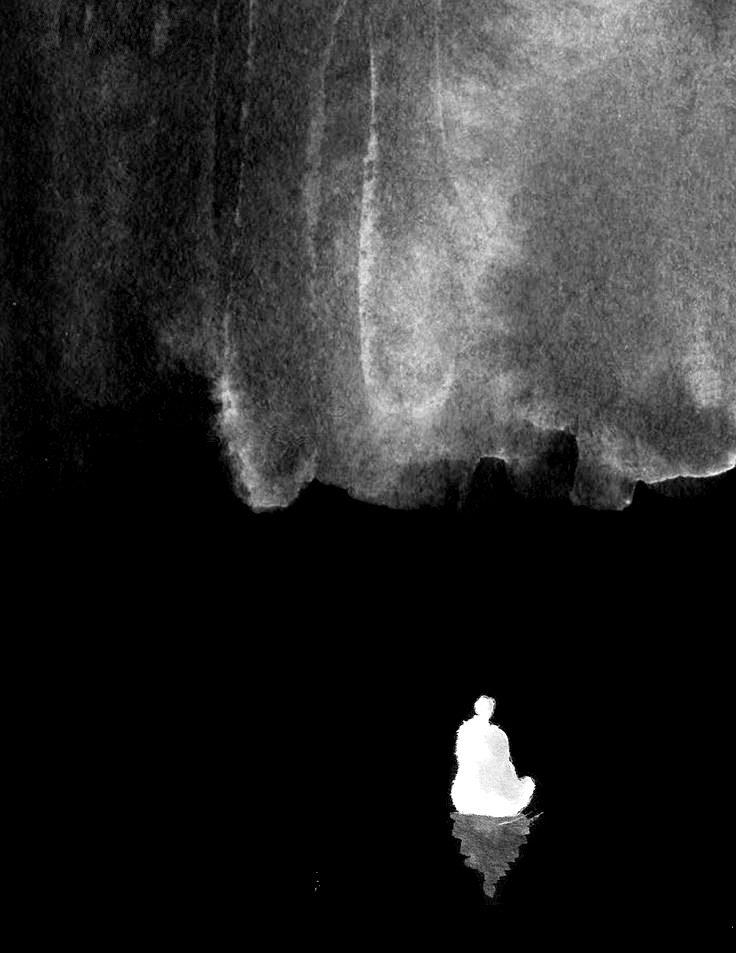
《金剛經》非常稀有，能信解受持的人都會成就大功德。一切相都是分別心中產生的幻，菩薩應離一切相發大菩提心，菩薩做法佈施時不應執著於法。佛還講了與憍陳如比丘之間的前世因緣。
譯文：
“須菩提，如果有善男子、善女人，上午佈施恆河沙數那麼多的身體，中午又佈施恆河沙數那麼多的身體，下午還佈施恆河沙數那麼多的身體，如此佈施身體無量百千萬億劫。如果還有一人，聽到《金剛經》，信心堅定不動搖，這個人獲得的功德、福報比前者還大。更何況書寫、受持、讀誦、為他人解說。
須菩提，就說重點，這部經有不可思議、不可稱量的無邊功德。如來為大乘修行者說，為發最上乘發心者說。如果有人能受持、讀誦這部經，還為他人廣泛演說，如來就會知道這個人，也會見到這個人，必定會成就不可量、不可稱、無有邊、不可思議的功德。這樣的人，能承擔得起如來無上正等正覺的大業。為什麼呢？須菩提，如果是喜歡小乘法的人，執著於我見、人見、眾生見、壽者見，那就不能聽受、讀誦、為他人解說這部經。
須菩提，任何地方，只要有這部經，一切世間、天、人、阿修羅應當供養。應知此處就是佛塔，應該恭敬，作禮圍繞，用各種華香裝飾供養。”
1．須菩提，若有善男子、善女人，初日分以恆河沙等身佈施，中日分復以恆河沙等身佈施，後日分亦以恆河沙等身佈施，如是無量百千萬億劫以身佈施。
初日分、中日分、後日分：簡單理解為上午、中午、晚上。
恆河沙：指數量很多，用這麼多數量的身體來佈施。每天分三次，佈施三個恆河沙數的身體，持續無量百千萬億劫。這裡講的是福德。
劫：關於一劫的時長有不同的說法。在印度，通常以梵天的一日為一劫，即人間的四億三千二百萬年。還有一種說法是，人壽從十歲增長到八萬四千歲，每一百年長一歲，再從八萬四千歲減少到十歲，每一百年減一歲，這樣增加和減少一個輪迴需要的時間叫“一個小劫”，大概是一千六百多萬年。二十個小劫是一個中劫，四個中劫是一個大劫。還有一種說法是，假設有一個巨大的石頭，長、寬、高都是五百華里，每隔五百年，用天人的衣服輕輕掃一下，直到把大石頭磨平，需要的總時長叫“一劫”。
在《坐禪2》中講到，時間是分別心中產生的幻，不同的佛世界時間尺度不一樣；在一個佛世界裡，不同的小世界之間的時間尺度也不一樣。所以我們看佛經裡講時間，只需理解它的意思便可，不需要精確計算。
2．若復有人聞此經典，信心不逆，其福勝彼，何況書寫、受持、讀誦、為人解說！
如果有人聽到《金剛經》，對經中所講的義理深信不疑，光是有這個信念，所獲得的功德比前面恆河沙等身佈施的福德還要大。如果書寫、受持、讀誦，為別人講經說法，其功德大得不可思議。
為什麼光是相信《金剛經》的義理，也有大功德？因為在諸佛同體的前提下，一個人對宇宙真相的正確認知和堅定信心也會影響到和自己有緣的所有眾生。哪怕是在我們看得見的物質世界裡，家庭中有一人信佛，那周圍其他家人就算不信佛，也會受到影響，也算和佛法結了緣。
3．須菩提，以要言之，是經有不可思議、不可稱量無邊功德。如來為發大乘者說，為發最上乘者說。
發大乘者，發最上乘者：發菩提心的修行者。
佛說《金剛經》有“不可思議、不可稱量無邊功德”，是為發菩提心的修行者說的。
4．若有人能受持、讀誦、廣為人說，如來悉知是人，悉見是人，皆得成就不可量、不可稱、無有邊、不可思議功德。
受持、讀誦，併為別人講經說法的功德非常大。如來知道、也看到這些人會成就巨大的功德。
5．如是人等，即為荷擔如來阿耨多羅三藐三菩提。
荷擔：是擔當或者承擔的意思。
這樣的人擔得起，或者受得起如來的無上正等正覺。
6．何以故？須菩提，若樂小法者，著我見、人見、眾生見、壽者見，則於此經不能聽受、讀誦、為人解說。
小法：解釋為小乘佛法，是“人天乘福德法”和“聲聞乘離苦法”，也可以包括“羅漢乘解脫法”。“樂小法者”指只求自己解脫，不求度人的修行者。
見：執著，是“我認為”的意思。執著心分三個境界，分別叫“見、取、執”，“見”是最深層的執著。
佛說，“樂小法者”因為執著於我見、人見、眾生見、壽者見，所以不能聽和接受《金剛經》，也沒有辦法讀誦和為人講經。
7．須菩提，在在處處，若有此經，一切世間天、人、阿修羅所應供養，當知此處即為是塔，皆應恭敬作禮圍繞，以諸華香而散其處。
作禮圍繞：佛經裡經常會說“右繞三匝”，在印度右繞三匝是一種表示恭敬的禮節。那麼左繞呢？有一種說法是，左繞是破壞的意思，所以左繞就是不恭敬的行為；也有一種說法是，右繞是上求佛道的意思，左繞是下化眾生的意思，所以在家人右繞，出家人左繞。
這種當時的儀軌對我們現代人來說已經不那麼重要了。在中國約定俗成的方式是右繞。
佛繼續說：光是有《金剛經》的地方，一切世間天、人、阿修羅應該供養，《金剛經》所在之處就是塔，應該恭敬作禮圍繞，還要用各種香花供養。

受持、讀誦、為人解說《金剛經》的功德巨大，比身命佈施的福德還要大。《金剛經》是給發大菩提心的大乘修行者說的，小乘人難以接受。《金剛經》所在的地方就像佛塔一樣，應該恭敬供養。
還有，須菩提，如果有善男子、善女人，受持讀誦《金剛經》，卻被人輕視作賤，那是這個人前世所造的罪業應有墮入惡道的果報，但今世被人輕視作賤，前世的罪業就會消滅，未來必定成就無上正等正覺。
須菩提，我回憶過去無量阿僧祇劫，在遇到然燈佛前，已經遇到了八百四千萬億那由他諸佛，我都供養侍奉，沒有空過者。如果到了末世，還有人受持讀誦《金剛經》，他所得到的功德會非常巨大，我供養諸佛的功德與之相比，還不足他的百分之一，千萬億分之一，乃至算術、譬喻都不能表達。
須菩提，如果有善男子、善女人，在末世受持讀誦《金剛經》，如果我具體說其所獲得的功德，有些人聽後會內心狂亂，狐疑不信。須菩提，應該知道《金剛經》的義理不可思議，受持讀誦的善報也不可思議。
1．複次，須菩提，善男子、善女人受持讀誦此經，若為人輕賤，是人先世罪業應墮惡道，以今世人輕賤故，先世罪業則為消滅，當得阿耨多羅三藐三菩提。
惡道：指下三途——地獄道、餓鬼道、畜生道。
當得阿耨多羅三藐三菩提：成就無上正等正覺，未來必定成佛的意思。
這裡主要講的是修行帶來的一種利益，也就是重罪輕報、提前受報。不光是修持《金剛經》，所有正常的佛法修行都可以做到重罪輕報、提前受報。本來因前世的罪業應墮惡道的人，這一輩子就以“世人輕賤”的小報結束，不需要再墮入惡道受報。對於業，我們要知道，善有善報，惡有惡報，善報不能抵消惡報，但是可以減輕惡報的強度。
佛講這一節是為後世修行人，也就是我們這些人考慮。到了後世，眾生根器低劣，難有大乘修行者；就算有，也會被周圍人不理解，甚至輕賤和攻擊。佛告訴我們，被世人輕賤是前世惡行帶來的果報，要對業有正確的理解，不要因周圍人的輕賤和攻擊而信心動搖；只要堅持修行，未來必定會成佛。
2．須菩提，我念過去無量阿僧祇劫，於然燈佛前，得值八百四千萬億那由他諸佛，悉皆供養承事無空過者。
阿僧祇：是數字，指無量數或者無窮極之數。
那由他：也是極大之數，相當於今天的百億，也有說是千億，就是非常大的數。
一個人要成佛，就要把所有的業全部消完，還要把和自己有緣的眾生全部度成阿羅漢。因此需要去很多不同的世界度人，也就會見到很多不同世界的佛。現在還有不少修行人相信“即身成佛”，以為只要修好這一世就能成佛，那是不瞭解業的情況下產生的誤解。（關於業，請參考《坐禪2》中有關業的內容。）
佛在這裡暗示，要成佛就要見很多很多的佛，要度很多很多的眾生，卻不明說。
佛說自己在遇到然燈佛之前，就已經遇到了八百四千萬億那由他諸佛，也都供養過。一個世界一個佛，或一個世界會依次出現很多佛，不管怎麼說，佛的確去過很多很多的世界，見過很多很多的佛。
3．若復有人於後末世，能受持讀誦此經所得功德，於我所供養諸佛功德，百分不及一，千萬億分乃至算數、譬喻所不能及。
佛說後世有人受持《金剛經》的功德，比他供養諸佛的功德還要大。自己供養諸佛的功德不及受持《金剛經》的人的功德的百分之一，甚至千萬億分之一，“算數、譬喻所不能及”。總之，受持、讀誦《金剛經》的功德巨大。
4．須菩提，若善男子、善女人於後末世，有受持讀誦此經，所得功德，我若具說者，或有人聞心則狂亂，狐疑不信。須菩提，當知是經義不可思議，果報亦不可思議。
佛告訴須菩提，如果未來世的善男子、善女人受持、讀誦《金剛經》，其功德非常之大。如果佛具體地說，有些人聽到後不會相信，甚至會內心狂亂。佛還告訴須菩提，《金剛經》的義理不可思議，修持的果報也不可思議。

修持《金剛經》可以做到重罪輕報、提前受報，未來必定成佛。釋迦牟尼佛曾見過很多佛，也供養了很多佛，但這些功德都不及修持《金剛經》的功德。如果具體說其功德，有些人很難相信。《金剛經》的義理和修持的果報都不可思議。
這時，須菩提向佛問道：“世尊，善男子、善女人發了阿耨多羅三藐三菩提心之後，如何維持？如何降服妄想煩惱？”
佛告訴須菩提：“善男子、善女人，發了阿耨多羅三藐三菩提心的人，應該生這樣的心，我應當滅度一切眾生。滅度一切眾生之後，沒有一個眾生真實滅度者。為什麼呢？須菩提，如果菩薩有我相、人相、眾生相、壽者相，那就不是菩薩。所以，須菩提，實際上沒有什麼法，能讓人發阿耨多羅三藐三菩提心。須菩提，你怎麼認為？如來在然燈佛處，學到證得阿耨多羅三藐三菩提的方法了嗎？”
須菩提回答：“不，世尊，按照我理解的佛所說之義理，佛在然燈佛處，沒有學到證得阿耨多羅三藐三菩提的方法。”
佛說：“正是，正是，須菩提，實際上沒有什麼法能讓如來得阿耨多羅三藐三菩提。須菩提，如果有什麼法能讓如來證得阿耨多羅三藐三菩提，然燈佛就不會給我授記，說我來世會成佛，名號釋迦牟尼。實際上沒有法能讓人證得阿耨多羅三藐三菩提，所以然燈佛給我授記，說：‘你未來會成佛，名號釋迦牟尼。’為什麼呢？‘如來’的含義就是，一切法都不可得。如果有人說：‘如來證得阿耨多羅三藐三菩提。’須菩提，實際上沒有什麼法，能令佛證得阿耨多羅三藐三菩提。須菩提，如來所證得的阿耨多羅三藐三菩提，在那個境界裡無實無虛。所以如來說一切法都是佛法。須菩提，如來說的一切法不是一切法，只是取名‘一切法’。須菩提，好比說人的身材高大。”
須菩提說：“世尊，如來說人的身材高大不是大身，只是取名叫‘大身’。”
“須菩提，菩薩也是如此。如果菩薩說：‘我應當滅度無量眾生。’那他就不是菩薩。為什麼呢？須菩提，並沒有法稱之為‘菩薩’。所以佛說：‘一切法無我、無人、無眾生、無壽者。’須菩提，如果菩薩說：‘我應當莊嚴佛土。’那他就不是菩薩。為什麼呢？如來說：莊嚴佛土即不是莊嚴，只是取名‘莊嚴’。須菩提，只有菩薩通達了無我之法，如來才說他是真菩薩。”
1．爾時，須菩提白佛言：“世尊，善男子、善女人發阿耨多羅三藐三菩提心，云何應住？云何降伏其心？”
須菩提又一次問同樣的問題：發心求無上正等正覺的人，也就是發大菩提心的人，如何維持這個願，不讓其退轉？如何降服自己的妄想煩惱？
對於第二次提問，佛的回答稍微不一樣。
善男子、善女人發阿耨多羅三藐三菩提心者，當生如是心。
發大菩提心的人應該有這樣的心態或者認知。
我應滅度一切眾生，滅度一切眾生已，而無有一眾生實滅度者。
因為菩薩沒有我相、人相、眾生相、壽者相，心中沒有對眾生的分別認知，所以說滅度一切眾生，卻沒有一個眾生真滅度者。
何以故？須菩提，若菩薩有我相、人相、眾生相、壽者相，即非菩薩。
四相是分別心中產生的相，有四相的時候叫“阿羅漢”，沒有四相才叫“菩薩”。
2．所以者何？須菩提，實無有法，發阿耨多羅三藐三菩提心者。須菩提，於意云何？如來於然燈佛所，有法得阿耨多羅三藐三菩提不？
從“所以者何”開始，和上一次回答不一樣。上一次佛答：“菩薩於法應無所住，行於佈施。”在這裡重點是“無所住”，就是不執著，還沒有涉及到分別心。經過前面的講法之後，佛開始講“無相”，也就是沒有分別心的境界。
實無有法，發阿耨多羅三藐三菩提心者：在這裡“阿耨多羅三藐三菩提心”是大菩提心。“大菩提心相”和“非大菩提心相”都是分別心中產生的相，在沒有分別心的境界裡本不存在，我們只是給它取名叫“大菩提心”。
接著佛問須菩提：“如來在然燈佛那裡，學到了成就無上正等正覺的法門嗎？”也就是成佛的法門。
不也，世尊。如我解佛所說義，佛於然燈佛所，無有法得阿耨多羅三藐三菩提。
須菩提回答說：“根據我對佛所講的義理的理解，佛陀在然燈佛那裡，並沒有學到什麼可以成就無上正等正覺的法門。”
佛言：“如是如是。須菩提，實無有法如來得阿耨多羅三藐三菩提。須菩提，若有法如來得阿耨多羅三藐三菩提者，然燈佛則不與我授記，汝於來世當得作佛，號釋迦牟尼。”
佛回答說：“對對，須菩提，實際上，不存在能成就無上正等正覺的法。須菩提，如果在如來的認知裡，還存在能成就無上正等正覺的法，然燈佛就不會給我授記，說你未來當成佛，號釋迦牟尼。”
也就是說，然燈佛看到釋迦牟尼佛（前世）已經達到了菩薩境界，已經滅了分別心，才給他授記，否則就不會給他授記。
汝於來世當得作佛，號釋迦牟尼：這是預言未來的事情。這裡重點是“授記”，在佛經裡經常出現佛給人“授記”的內容，預言某個人未來會成佛、他成佛的世界叫什麼名字、國土名字、佛的名號、還會度多少眾生。
關於授記的邏輯，請看《坐禪2》中的詳細解釋。在這裡只講授記的先決條件，也就是大菩提心。只有發了大菩提心的人才可以得到佛的授記，而且還是不退轉的大菩提心才行。目前的我們還有情緒和慾望，就算發了大菩提心，也是靠情緒帶出來的慾望所發，隨時都會退轉。所以才強調要反覆地發大菩提心，不斷強化這個願。只有修到四禪以上沒有情緒的境界，發的大菩提心才是堅固不退的大菩提心。
有了大菩提心之後，我們的業才會開始減少。如果我們的業一直增加，佛也沒有辦法預言未來我們什麼時候會成佛。只有業開始減少，佛才能根據我們已經擁有的業的總量來推演，消掉全部的業需要多長時間；再根據我們的妄想、分別、執著的程度，來推演需要修多長時間的禪定；根據我們已有的業的總量來看，和我們有緣的眾生有多少，也就是要度多少眾生。推演出結果後會告訴我們，我們要成佛需要多長時間、要度多少眾生、在這期間會見到多少佛等等資訊。
以實無有法得阿耨多羅三藐三菩提，是故然燈佛與我授記。作是言，汝於來世當得作佛，號釋迦牟尼。
佛說，因為他已經悟到無相的境界，在那裡沒有成就無上正等正覺的法，所以然燈佛才給他授記，說“你未來當成佛，號釋迦牟尼”。
3．何以故？如來者，即諸法如義。若有人言如來得阿耨多羅三藐三菩提，須菩提，實無有法佛得阿耨多羅三藐三菩提。
這句話也是反覆地強調前面所講的義理。
“如來者，即諸法如義”中的“義”：指關於分別心的義理。我們所看到的一切相都是分別心中產生的幻，在沒有分別心的境界裡本不存在，所以說諸法不可得。
“如來者，即諸法如義”的意思是：如來就是悟到真相（一切法都是分別心中產生的幻）的人。人們說如來證到了無上正等正覺，但是實際上，不存在讓佛得到無上正等正覺的法。
4．須菩提，如來所得阿耨多羅三藐三菩提，於是中無實無虛。是故如來說一切法皆是佛法。須菩提，所言一切法者，即非一切法，是故名一切法。
佛告訴須菩提：如來證到的無上正等正覺的境界裡，沒有實相，也沒有虛相。所以如來說一切法都可以稱之為佛法。
如來所說的“一切法”也是“非一切法”。這就是兩個不同的相——“法相”和“非法相”。兩者都是分別心中產生的相，在沒有分別心的境界裡本不存在。因此可以說，“一切法不是一切法”，也可以說，“一切法等於非一切法”。我們只是給它取名叫“一切法”和“非一切法”。（關於“法”與“非法”的詳細解釋，請看《Taiguanglin 講〈楞伽經〉》。）
5．須菩提，譬如人身長大。
須菩提言：“世尊，如來說人身長大則為非大身，是名大身。”
與上同理。“大身”與“非大身”，“長大”與“非長大”都是分別心中產生的相，在沒有分別心的境界裡本不存在，我們只是給它取名叫“大身”和“長大”而已。
6．須菩提，菩薩亦如是。若作是言，我當滅度無量眾生，即不名菩薩。何以故？須菩提，實無有法名為菩薩。
須菩提，菩薩也是如此，菩薩若說“我當滅度無量眾生，即不名菩薩”。為什麼？須菩提，因為實際上沒有法稱之為菩薩。
菩薩沒有分別心，也就沒有四相。“我當滅度無量眾生”，這句話裡已經包括了我相、人相、眾生相，所以有這樣的認知就不是菩薩。還有，在沒有分別心的境界裡，沒有佛、菩薩、羅漢、凡夫等相，所以佛說“實無有法名為菩薩”。
如果菩薩帶著業，以報身的狀態在人間活動，那麼就有分別和執著，而且時間和精力都有限，度人就會有選擇性，什麼人更適合度就度什麼人，而不是平等傳法。如果這個菩薩一直處在深定當中也可以達到菩薩的境界，最低也能達到四禪或者無色界定，後期也能達到阿羅漢的境界。只要報身一死，哪怕是凡夫的無色界定境界死去，也能在短時間內回到菩薩境界。
在菩薩的意識當中，度人只是平常事。來投胎消業和度人的菩薩都有大菩提心，如果是四大職業的人，是以平等普化心或同體大悲心作為願力來投生人間。就算菩薩帶著自己的業進入輪迴，除了消自己的業之外，在傳法度人的時候，並不把度人當做什麼特別偉大的事，也不會想度人有多大的功德，只是正常地做事而已，就像我們普通人吃飯、睡覺、上班一樣。
7．佛說一切法無我、無人、無眾生、無壽者。
“法”是妄想、分別、執著的統稱。菩薩的境界裡沒有四相，也就是沒有分別心，只有妄想。從菩薩的視角看，眾生的妄想、分別、執著都是妄想，沒有分別。
8．須菩提，若菩薩作是言，我當莊嚴佛土，是不名菩薩。
佛土：一般解釋為佛教化的國土。實際上有兩種世界：一種世界是佛創造或管理的世界，也就是有佛住世的世界；還有一種世界是沒有佛住世的世界，也叫“無限地獄世界”。（關於這些內容請看《坐禪2》中的相關章節。）
莊嚴佛土：度人叫莊嚴佛土。不是物質層面上的裝飾之類，而是真實的度人行為才叫莊嚴佛土。
因此，這一段的意思是，如果菩薩說“我當度人”，就不能稱之為菩薩。
何以故？如來說莊嚴佛土者，即非莊嚴，是名莊嚴。
與上同理。“莊嚴佛土相”與“非莊嚴佛土相”都是分別心中產生的相，在沒有分別心的境界裡本不存在。因此可以說，“莊嚴佛土不是莊嚴佛土”，也可以說，“莊嚴佛土等於非莊嚴佛土”，我們只是給它取名叫“莊嚴佛土”與“非莊嚴佛土”。
9．須菩提，若菩薩通達無我法者，如來說名真是菩薩。
無我法：“我相”是分別心中產生的第一個相，“我相”和“人相”會同時產生（有關分別心的詳細內容請看《坐禪2》）。所以“無我”就是指沒有分別心的境界，因此真正通達“無我法”才能稱之為菩薩。

須菩提再一次問，發大菩提心之後如何維持？如何降服妄想煩惱？佛從無分別的境界回答，一切法、一切相都是分別心中產生的幻，菩薩應離一切相而發菩提心。
“須菩提，你怎麼認為？如來有肉眼嗎？”
“是的，世尊，如來有肉眼。”
“須菩提，你怎麼認為？如來有天眼嗎？”
“是的，世尊，如來有天眼。”
“須菩提，你怎麼認為？如來有慧眼嗎？”
“是的，世尊，如來有慧眼。”
“須菩提，你怎麼認為？如來有法眼嗎？”
“是的，世尊，如來有法眼。”
“須菩提，你怎麼認為？如來有佛眼嗎？”
“是的，世尊，如來有佛眼。”
“須菩提，你怎麼認為？恆河中的所有沙，佛說是沙嗎？”
“是的，世尊，如來說是沙。”
“須菩提，你怎麼認為？有一恆河沙數那麼多的恆河，有所有恆河中的沙數般多的佛世界，它多不多？”
“非常多，世尊。”
佛告訴須菩提：“那麼多佛土中的所有眾生，他們的若干種心，如來都知道。為什麼呢？如來說：諸心都不是心，只是取名為心。所以，須菩提，對過去的認知不可得，對現在的認知也不可得，對未來的認知也不可得。”
1．對於五眼有不同的解釋。
第一個叫“肉眼”。在《大智度論》第三十三卷中說的“肉眼”基本上和我們普通人的肉眼一樣，只能看見近處，看不見遠處；無法同時看見前後；有光才能看見，沒有光就看不見；能看到外界，卻看不到身體內部，這就叫“肉眼”。
但是在其他佛經中的解釋，和大乘佛法的理解是：肉眼也算神通。肉眼是在我們所處的維度世界可以無限觀察的能力。可以超遠距離觀察，叫“遙視”；可以觀察微觀世界，叫“微視”；可以觀察物體內部，叫“透視”；沒有光的情況下也能觀察，叫“暗視”。但是不能超越所處的維度觀察其他道的眾生。
第二個叫“天眼”。天眼可以觀察其他道的眾生，至少可以從我們所處的世界往下看，可以看到鬼道和地獄道。如果修為高還能看到天界，修行者的修為達到哪個天就能看到哪個天界。
第三個叫“慧眼”。有些書上說，慧眼是能讀懂佛經的智慧之眼。我個人認為讀懂佛經不算神通，我認為的慧眼是能讀懂他人心思的能力，也就是“他心通”。
那怎麼讀他人的心思？主要是看陽神光。不同的情緒和執著有不同的顏色，還會有細微的變化；只要能夠觀察他人的陽神光，根據顏色和變化就能讀懂他人的心思。修行到一定境界的人，哪怕不在定中觀察，也能感應到周圍人的情緒。尤其是別人對自己有不好的情緒的時候，可以非常清晰地感應到。因為從清淨的人的視角看一個情緒多的人，特別是有惡念的人，是很容易觀察到的；不是觀察表情等外相，而是從意識深處能感受到他不好的情緒。
第四個叫“法眼”，能看眾生之根器的眼。法眼和慧眼有什麼區別？什麼叫根器？主要看兩方面，一個是習氣，就是妄想、分別、執著的多寡，還有一個是業的輕重。法眼能同時看到其他眾生的習氣和業，而慧眼只能看到當下的狀態，看不到整體的習氣和業。所以真正的法眼是修到阿羅漢以上的境界才能擁有。
當然，修到四禪或者無色界定的人，多多少少能看出其他眾生的根器，比如一個人的各種習氣有多重、淫慾有多重、食慾有多重、殺戮之心有多重。但是關於業，最多只能看到和此生有關聯的部分，所以凡夫的法眼很有侷限性。
第五個叫“佛眼”，唯有佛才擁有的感知能力叫“佛眼”。佛的智慧叫“法界體性智”，佛的意識覆蓋整個法界，可以說我們都生活在佛的意識當中，因此佛可以如實地觀察到所有眾生的每一個妄想。佛眼是最高階別的神通，也叫“漏盡通”，就是知道一切的智慧。
實際上，佛在這裡把這些感知力稱之為“眼”，也是方便說法。因為眼在我們凡夫的認知裡就是用來看的肉眼，是五根當中獲取資訊最多的根。所以用“眼”這個字，大部分人都能理解。天眼、慧眼、法眼，乃至於佛眼，都不是我們所用的肉眼。凡夫的天眼、慧眼是從陽神光直接觀察的，就是以“照”的方式來看。什麼叫“照”？用你的陽神直接覆蓋其他眾生叫“照”。在你陽神覆蓋的範圍內，所有眾生的妄想都能感知到，這叫“照見”。到了阿羅漢、菩薩、佛的境界，連陽神都沒有，也就沒有覆蓋和不能覆蓋的區別，所以法眼和佛眼指的是意識遍虛空的狀態。
2．“須菩提，於意云何？如恆河中所有沙，佛說是沙不？”
“如是，世尊，如來說是沙。”
“須菩提，於意云何？如一恆河中所有沙，有如是沙等恆河，是諸恆河所有沙數佛世界，如是寧為多不？”
“甚多，世尊。”
上面也有同樣的說法。就是恆河沙數的平方，這麼多數量的佛世界，它多不多？須菩提回答：“甚多，世尊。”
3．佛告須菩提：“爾所國土中所有眾生，若干種心如來悉知。何以故？如來說諸心皆為非心，是名為心。所以者何？須菩提，過去心不可得，現在心不可得，未來心不可得。”
“若干種心”中的“心”：指眾生所擁有的妄想、分別、執著。
諸心皆為非心，是名為心：與上同理。“心”與“非心”都是分別心中產生的相，在沒有分別心的境界裡本不存在。因此可以說，“諸心都不是心”，也可以說，“諸心等於非心”，我們只是給它取名叫“心”與“非心”。
過去心、現在心、未來心：這裡講的是時間分別。（關於時間的產生，詳細解釋請看《坐禪2》中有關分別心的部分。）時間從妄想的先後分別中產生。這裡的過去心、現在心、未來心是指意識層面上，產生時間觀念的分別心，也就是過去相、現在相、未來相。
佛告訴須菩提，恆河沙數平方的佛世界當中，所有眾生的妄想、分別、執著，佛都知道。因為“諸心皆為非心，是名為心”，因此過去相、現在相、未來相都不應該有。
如來有“肉眼”“天眼”“慧眼”“法眼”“佛眼”。如來的意識覆蓋整個法界，因此所有眾生的妄想、分別、執著，如來都知道。在沒有分別心的境界裡，“眾生之諸心”與“非心”，兩種相都不存在，也不存在所謂的“過去、現在、未來”，也就是時間。
“須菩提，你怎麼認為？如果有人用可以裝滿三千大千世界的七寶佈施，那麼此人以此佈施的因緣獲得的福德多不多？”
“是的，世尊，此人以此佈施的因緣獲得的福德非常多。”
“須菩提，如果福德真實存在，如來就不說福德多。因為福德本無，如來說得到的福德多。”
1．須菩提，於意云何？若有人滿三千大千世界七寶以用佈施，是人以是因緣得福多不？
“因緣”的“因”：是產生某種結果直接的或內在的原因。
“因緣”的“緣”：在以往的佛學當中都理解為某種外在的環境條件。比如我殺生了，這是因；未來必定會有被殺的果報，這是果。如何阻止果報的發生？在比較普及的佛法理論中都會這麼回答：先把自己的殺心滅掉，持戒，不再殺生，這樣就會投生到一個沒有殺戮的世界裡。也就是把可以產生果報的各種外部條件都給滅掉，果報就不會產生。
那麼“緣”是什麼？在我的理論裡，“緣”是和其他眾生的互動。三禪天以下的眾生都有情緒，有情緒就會有慾望，帶著互動的慾望和其他眾生互動，雙方的情緒都有變化，這叫“業”。有了這種“業”才稱之為“有緣”。
所以在這裡，佛說的“因緣”是一個人佈施於另一個人的過程，也就是互動。在這個過程當中兩個人都有了情緒上的變化，佈施的人和接受佈施的人都開心了，這樣的結果就稱之為“有緣”。
我們平時也會說自己和某人有緣，講的都是過去式，意思就是自己曾經和某人見過面、有過互動，也有過情緒上的變化。所以在這裡佛說的“因緣”就是指一個人佈施於另一個人的互動行為。
2．須菩提，若福德有實，如來不說得福德多。以福德無故，如來說得福德多。
佛說：如果福德是真實存在的東西，如來就不會說福德多。正因為福德並不是真實存在的東西，所以如來才會說福德多。
這句話怎麼理解？
如果福德是真實存在的東西，那麼佛就會用某種表現數量的詞直接描述。“多”這個字雖然也表現數量，但它具有相對性，要和某個參照物比較之後，才可以說“多”或“少”。
如果某個事物有明確的數量，佛就會用算術的方式來表現。比如佛經裡經常出現的“恆河沙數”“無量”“阿僧祇”等詞。
但是佛不用這類表現數量的詞，而是用描述相對性的“多”來描述。因為福德並不是真實存在的東西，它的本質是空，所以沒有辦法用這種表現數量的詞彙來描述。
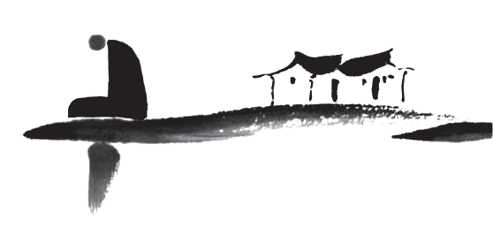

佛說，福德並不是真實存在的東西，在沒有分別心的境界裡，福德也不存在，所以用“多”這個字來表現。
“須菩提，你怎麼認為？可以根據佛的具足色身見到真正的佛嗎？”
“不能，世尊，真正的佛不能以具足色身見到。為什麼呢？如來說的具足色身不是具足色身，只是取名叫‘具足色身’。”
“須菩提，你怎麼認為？可以根據具足諸相見到真正的如來嗎？”
“不能，世尊，真正的如來不能以具足諸相見到。為什麼呢？如來說的諸相具足不是具足，只是取名叫‘具足’。”
1．須菩提，於意云何？佛可以具足色身見不？
不也，世尊，如來不應以具足色身見。
“具足色身”中的“具足”是圓滿之意。“色”是我們看得見的物質世界的統稱。“具足色身”就是我們能看得見的圓滿肉身。
佛有三身、四身的說法。三身是“法身”“報身”和“化身”。佛或菩薩處在他最高境界的狀態時稱之為“法身”；帶著業報投胎到人間叫“報身”；佛或菩薩用神通創造一個形象給眾生看，叫“化身”。如果說佛有四身，那麼還有一個身叫“應身”。應身就是為了回應眾生之訴求，而顯現出來的佛身。本質上和化身一樣，只是先有眾生的訴求而已。
佛經裡說，佛的身體有三十二種殊勝相和八十種好，有這種特徵的身體叫“具足色身”。但是真正的佛沒有身體，所以不能用看得見的色身求見如來。
2．何以故？如來說具足色身，即非具足色身，是名具足色身。
與上同理。“具足色身”和“非具足色身”都是分別心中產生的相，在沒有分別心的境界裡本不存在。因此可以說，“具足色身不是具足色身”，也可以說，“具足色身等於非具足色身”，我們只是給它取名叫“具足色身”。
3．須菩提，於意云何？如來可以具足諸相見不？
不也，世尊。如來不應以具足諸相見。何以故？如來說諸相具足即非具足，是名諸相具足。
這一段也與上同理。
佛問須菩提：以具足諸相求見如來，可以嗎？須菩提回答說：不能。因為如來說的“具足諸相”和“非具足諸相”都是分別心中產生的相，在沒有分別心的境界裡本不存在。因此可以說，“具足諸相不是具足諸相”，也可以說，“具足諸相等於非具足諸相”，我們只是給它取名叫“具足諸相”。
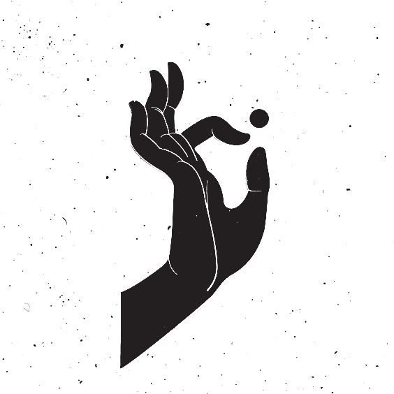
不可以用看得見的形象求見如來，因為所有的相都是分別心中產生的幻，真實的佛沒有看得見的相。
“須菩提，你不要以為佛有這般念頭：‘我應當有所說法。’不要有這樣的想法。為什麼呢？如果有人說如來說過什麼法，那就是謗佛，是因為不理解我所說的法的緣故。須菩提，說法者實際上無法可說，只是取名叫‘說法’。”
此時，慧命須菩提向佛說道：“世尊，到了未來世，有眾生聽到這樣的義理，還會生起信心嗎？”
佛說：“須菩提，他們不是眾生，也是眾生。為什麼呢？須菩提，眾生所說的眾生，如來說不是眾生，只是取名叫‘眾生’。”
1．須菩提，汝勿謂如來作是念，我當有所說法，莫作是念。何以故？若人言如來有所說法即為謗佛，不能解我所說故。須菩提，說法者無法可說，是名說法。
“法”與“非法”，“說法”與“非說法”都是分別心中產生的相，在沒有分別心的境界裡本不存在，我們只是給它取名叫“法”和“說法”。
說法者無法可說：這一句根據斷句與否，有不同的解釋。如果不斷句，“者”是說法的人，因此譯為“說法的人無法可說”；如果斷句，寫作“說法者，無法可說”，那麼“說法者”是說法的行為，因此譯為“所謂說法，實際上無法可說。”這兩種解釋都不影響本段的理解，都是在說無法可說。
2．爾時，慧命須菩提白佛言：“世尊，頗有眾生於未來世聞說是法，生信心不？
“慧命”指法身以智慧為生命。把追求智慧作為生命的第一目標的人，也就是求菩提道的人。
須菩提是追求無上菩提道的人，他本來就是阿羅漢，現在學法正在往菩薩的方向努力，所以叫“慧命須菩提”。
與之相反的叫“苦命凡夫”或者“苦命眾生”。為什麼叫苦命？凡夫追求的是人世間的幸福。佛說人世間唯有苦，凡夫認為的苦叫“苦中之苦”，也叫“苦苦”；凡夫認為的快樂叫“壞苦”，壞就是變質、變壞的意思。凡夫所追求的快樂一旦變質，馬上會變成痛苦，所以叫“壞苦”。追求世間幸福的人最終都會墮落到痛苦當中，所以叫做“苦命凡夫”或者“苦命眾生”。
須菩提問佛：未來有眾生聽到《金剛經》裡講的有關無相的義理，會相信嗎？
3．佛言：“須菩提，彼非眾生非不眾生。”
佛先不回答須菩提關於眾生會不會生信心的問題，因為須菩提問的是未來世的眾生，所以佛先講須菩提意識中關於未來眾生的認知。要從意識層面上先破須菩提的眾生相，所以回答說：“彼非眾生非不眾生。”“非眾生”是否定，“非不眾生”用了兩次否定，就變成了肯定，解釋為：是眾生。
佛說：須菩提，那些未來眾生，既不是眾生，也是眾生。
4．何以故？須菩提，眾生眾生者，如來說非眾生，是名眾生。
與上同理。“眾生”與“非眾生”都是分別心中產生的相，在沒有分別心的境界裡本不存在。因此可以說，“眾生不是眾生”，也可以說，“眾生等於非眾生”，我們只是給它取名叫“眾生”。
佛說，眾生認為的眾生，如來說他們不是眾生，只是取名叫“眾生”。

在佛的境界裡沒有妄想和分別心，所以對於佛來說無法可講。我們認為的“說法”都是分別心中產生的相，佛在講法時也沒有“說法相”。我們所說的“眾生”也是分別心中產生的相，在沒有分別心的境界裡，沒有“眾生”與“非眾生”兩種相。
須菩提問佛：“世尊，佛證到阿耨多羅三藐三菩提（無上正等正覺），實際上沒有什麼可得到的嗎？”
佛回答：“是的，須菩提，我在阿耨多羅三藐三菩提上沒有一點法可得，只是取名為‘阿耨多羅三藐三菩提’。”
這一章的重點是無有可得。佛法的修行是以“舍”為主，並不是“得”。就是從意識層面上把執著一個一個滅掉，智慧就會自然顯現。我們的妄想、分別、執著越少，智慧就越高。智慧一直都在，只是被妄想、分別、執著覆蓋住了而已。
就算是身體層面上的修行，講究的是清靜無為，而不是“得”，本質上還是“舍”，要捨棄各種造作的習氣。有些人就喜歡講“能量、氣”這類東西，好像我們可以從外部得到什麼似的，到了一個地方就喜歡說這裡的“氣場好”“能量強”等等。在這種認知裡，已經把自己和世界對立了起來，也就是有“我相”和“人相”。學習大乘佛法要確立正知正見，我們所看到一切，乃至虛空都是我們意識裡產生的幻境，並不在意識之外。因此，我們所處的環境是我們的習氣和業的反映，都是虛妄。如果我們的修為到了一定境界，自然就不會在乎這些外部環境。
關於飲食的問題，雖然我們的肉身是靠吃東西來維持，的確是從外部得來的。但我們也要知道，吃這種行為本身就是“貪”，是執著，也是要滅的。吃的習氣出現在初禪第一天，在淫慾之上，因此滅起來比淫慾難，可修行就是行難行之事，忍難忍之慾的過程。一開始都很難，隨著修為提高，我們也會發現，對食物的執著越來越少了，吃得也越來越清淡了。
至於具體的食物，首先戒肉是必須的，其他的素食，大部分人吃了都無所謂，沒什麼太大的影響。等修為到了一定境界，身體進一步清淨之後，就能感知到有些素食對身體有影響，這個時候就自然而然地會減少攝取。比如，不吃穀物，還要少吃蛋白質含量高的食物，少吃鹽，等等。
無上正等正覺不是得來的，在佛的境界裡無有所得。
譯文：
“還有，須菩提，法本身平等，沒有高下之分，只是取名叫‘阿耨多羅三藐三菩提’（無上正等正覺）。以無我、無人、無眾生、無壽者的心態修一切善法，就能證到阿耨多羅三藐三菩提。須菩提，我們所說的善法，如來說不是善法，只是取名叫‘善法’。”
1．複次，須菩提，是法平等無有高下，是名阿耨多羅三藐三菩提。
是法平等無有高下：阿羅漢沒有執著心，所以從阿羅漢的境界上看，一切法平等。
阿羅漢的境界有三種說法：平等、有分別、不住相。“住”是執著，“不住相”就是光有“相”，也就是分別心，但沒有執著。這裡“高下”是執著，認為哪個高，哪個低，就是有“我見”。沒有高下的情況下一切法平等，是單純的有分別心的狀態。
在這一段裡，佛把有分別心的阿羅漢境界也叫“阿耨多羅三藐三菩提”。從我們凡夫的視角看，比凡夫高一個階段，也就是沒有執著的境界，也可以稱之為“阿耨多羅三藐三菩提”，都是往成佛的方向努力的過程。
2．以無我、無人、無眾生、無壽者修一切善法，即得阿耨多羅三藐三菩提。
無四相就是菩薩的境界。在菩薩的境界修一切善法即得阿耨多羅三藐三菩提（無上正等正覺）。
從凡夫的視角看，追求成為阿羅漢——達到無執著的境界，叫“阿耨多羅三藐三菩提”；追求成為菩薩——達到無相的境界，也叫“阿耨多羅三藐三菩提”；追求成佛——達到沒有一切妄想的境界，也叫“阿耨多羅三藐三菩提”。
3．須菩提，所言善法者，如來說即非善法，是名善法。
善法：與惡法相對應。通常講的善法有兩種，世間的善法叫“五戒十善”，出世間的善法叫“三學六度”。
先講世間的善法——五戒十善。不殺生、不偷盜、不邪淫、不妄語、不喝酒叫五戒。十善分為身、口、意三種業，身業有三：不殺生、不偷盜、不邪淫，這和五戒一樣；口業有四：不惡口、不兩舌、不妄語、不綺語；意業有三：不貪、不嗔、不痴。貪、嗔、痴也叫“三毒”。以上身三、口四、意三，十種業合稱“十善法”。
殺、盜、淫、妄、酒是佛教的基本五戒，相信大部分人都知道，在這裡就不展開講。
意業中的貪，指對順境的貪愛之心，包括對於物質、權利、名望的貪婪，還包括食慾、淫慾、睡眠慾等各種感官享受，都叫“貪”。
嗔，指對逆境的嗔恨之心。憤怒、厭惡、嫉妒等不好的情緒都叫“嗔”。
痴，在凡夫的境界裡，不信因果就叫“痴”。和別人互動的時候多想想，這樣的事情發生在自己身上，自己會不會開心，這叫“己所不欲勿施於人”。如果一個人足夠成熟，就會知道人各有志，不可強求，自己非常喜歡的事情，別人不一定喜歡，所以和別人互動的時候儘量尊重別人的選擇和喜好，這叫“己所甚欲勿施於人”。
口業有四：
惡口：咒罵、詛咒、惡語罵人的行為叫惡口；
兩舌：背後說人壞話、挑撥離間等行為叫兩舌；
妄語：就是說謊。在這裡重點是發心，為了騙取他人的利益，傷害他人的感情而說謊就是惡業。在現實生活中沒有人不說謊，一般善意的謊言，禮節性的讚美不算惡業。還有一種妄語叫“大妄語”，指未證言證，妄稱自己證果，甚至自稱佛菩薩轉世，或者暗示自己是佛菩薩轉世等。《楞嚴經》裡說大妄語的果報是死後直墮地獄。
綺語：“綺”是華麗的意思，無益浮詞，華妙綺麗，就是過度誇張。有些人說話非常誇張，已經超過了原來的意思，這種說辭叫“綺語”。談說淫慾導人邪念也叫“綺語”。
殺生、偷盜、邪淫；惡口、兩舌、妄語、綺語；貪、嗔、痴，合起來叫“十惡業”。與之相反，不造十惡業就叫“十善業”。
出世間的善法叫“三學六度”。三學是戒、定、慧。由戒生定，由定生慧，這是佛教主張的基本修行原理。
戒律在佛法中非常重要，持戒是修行的第一步，先不做違背戒律的事，其次才是做佛法所倡導的事，包括修行。所以不管修的是人世間的法，還是出世間的法，都是以戒為本。有了戒行才能生出定。
殺、盜、淫、妄、酒基本五戒當中，在這裡只講淫戒，因為和過去相比，現在的社會環境和道德觀念的確有了很大的變化。
在過去，兩個人結婚要有父母之命、媒妁之言。到我們爺爺、奶奶那一代人都是如此，很多時候，一對新人是在洞房時才第一次見面；到了我們父母那一代，多多少少有了自由戀愛，但還是要聽父母話；到我們這一代，已經實現了自由戀愛和自由婚姻，雖然父母的認可也有一定的必要性，但已經不再像舊社會一樣起著決定性作用。
所以我認為現在只要是兩情相悅、雙方同意的性行為就不能算邪淫，就算沒有登記結婚也沒有關係，這都是屬於“業”當中的事情。兩個人前世有業緣，這一世才能相見和相愛，也會發生性關係。這種兩個人的劇本裡都有的業不能算邪淫。
至於婚外戀和性交易，哪怕當事人都願意，那也算邪淫。婚外戀是傷害原配的行為，給其他人造成了不好的情緒，算造惡業，所以是邪淫。性交易是用錢買性，雖然雙方都同意，但不是相愛，也不承擔責任，所以是邪淫。
那麼自慰算不算邪淫？我個人認為不算，因為沒有和其他眾生互動，所以也就沒有造業。自慰只能算是習氣的展露，自慰多了雖然也會損耗福報，但只要滅了淫慾，就沒有其他後果。在這裡我們要先有正知正見，知道淫慾是要滅的，不能一直縱慾；不僅傷害身體，還會消減福報。有了這樣的正見之後修行，當淫慾發作，痛苦不堪的時候適當的自慰也無可厚非。
酒是為了防前面四戒。因為喝酒會亂性，人的意志力會降低很多，甚至失去意識，因此儘量不喝酒。對於在家人，我們只要求不喝醉，不要求嚴格持戒。如果對戒律的要求過高，會降低眾生接受佛法的程度，不利於度人。在目前的社會環境下，出來工作很難做到滴酒不沾，凡事盡力就可以了。
定：指禪定修行。（具體內容請看《坐禪1》和《坐禪2》中的“初禪”部分。）
慧：智慧，佛法追求的智慧。神通也是智慧的表現方式。修到一定程度多多少少都會出現一些神通，但是不需要在意，更不能追求，也不要到處跟人講。佛在世的時候對自己的弟子們也是這麼要求的。在佛法裡，智慧分五等——成所作智、妙觀察智、平等性智、圓明鏡智、法界體性智。（詳細內容請看《坐禪1》。）
到這裡戒、定、慧三學都講完了。下面講六度。
六度：佈施、持戒、忍辱、精進、禪定、智慧，叫菩薩的六度法，也是出世間的法。
佈施、持戒、忍辱：這三項與業相關。佈施是多造善業；持戒就是不再造惡業；忍辱是當惡報來臨的時候選擇忍，讓惡業的輪轉到這裡結束。
精進：是修行人的態度，與之對應的是懈怠。修大乘的人要精進修心、精進消業。
禪定：就是修心的主要修行法門，是滅自己的妄想、分別、執著的主要修法。
智慧：也叫“般若”，菩薩的智慧是專門消業的智慧。
以上的五戒十善和三學六度合稱為“善法”。
回到原文。“善法”與“非善法”都是分別心中產生的相，在沒有分別心的境界裡本不存在。因此可以說，“善法不是善法”，也可以說，“善法等於非善法”，我們只是給它取名叫“善法”與“非善法”。
在沒有執著心的境界裡，一切法平等，沒有高下之別，這叫追求無上正等正覺。菩薩在沒有分別心的境界裡，修一切善法，可以證得無上正等正覺。“善法”與“非善法”都是分別心中產生的相，在沒有分別心的境界裡本不存在，因此“善法”等於“非善法”，我們只是給它取名叫“善法”與“非善法”。
“須菩提，假如三千大千世界中的所有須彌山王那麼多的七寶聚在一起，有人以此佈施。如果另有一人，受持讀誦此般若波羅密經，乃至四句偈，還為他人解說。那麼前者佈施的福德不如後者福德的百分之一，百千萬億分之一，乃至算術、譬喻都不能描述。”
1．須菩提，若三千大千世界中所有諸須彌山王，如是等七寶聚，有人持用佈施。
一個三千大千世界有十億個小世界，也就有十億個須彌山王。如果有人拿這麼多的七寶持用佈施。這麼大的財佈施應該有很大的福德。
2．若人以此般若波羅密經乃至四句偈等，受持讀誦，為他人說，於前福德百分不及一，百千萬億分乃至算數、譬喻所不能及。
如果有人信受和讀誦此般若波羅蜜經（《金剛經》），哪怕是四句偈等，或者給別人講經。此人獲得的功德是前者財佈施獲得的福德的百千萬億倍，甚至算術、譬喻都不能描述，其功德有這麼大。

受持讀誦《金剛經》，為他人講經的功德巨大，遠大於任何財佈施帶來的福德。
“須菩提，你怎麼認為？你們不要認為如來會這麼想：‘我當度眾生。’須菩提，不要這麼想。為什麼呢？實際上沒有眾生需要如來來度，如果有眾生需要如來來度，如來就有我相、人相、眾生相、壽者相。”
“須菩提，如來說‘有我’就是‘沒有我’，然而凡夫們以為有我。須菩提，所謂的凡夫，如來說不是凡夫，只是取名叫‘凡夫’。”
1．須菩提，於意云何？汝等勿謂如來作是念，我當度眾生。
你們不要認為如來會有“我當度眾生”這樣的想法。因為如來沒有我相、人相、眾生相、壽者相，所以在如來的意識裡，沒有正在度人的自己，也沒有要度的眾生，一切都是空。
2．須菩提，莫作是念。何以故？實無有眾生如來度者，若有眾生如來度者，如來則有我、人、眾生、壽者。
一開始讀《金剛經》最容易產生誤解的地方就是，它到底在講客觀事實，還是意識層面？眾生到底有，還是沒有？
法界有無數的自性，每一個自性都會產生妄想，就會出現無數的眾生，這是客觀存在的事實。我們修行人追求的是，在我們的意識層面上把分別心滅掉，也就是對自己和對眾生的認知徹底滅掉，這樣就可以進入無分別的境界，成為菩薩；而不是把真實存在的自性滅掉，自性是沒有辦法被滅掉的，所以叫“自性恆常”。如此理解《金剛經》才是正解。
在這一段經文裡佛講的是意識層面，在如來的意識裡沒有需要度的眾生，如果如來的意識裡有可度的眾生，那麼如來就有我相、人相、眾生相、壽者相，那就不是如來了。
3．須菩提，如來說有我者，即非有我，而凡夫之人以為有我。
如來說有我者，即非有我 ：與上同理。“有我”與“非有我”都是分別心中產生的相，在沒有分別心的境界裡本不存在。因此可以說“有我不是有我”，也可以說，“有我等於非有我”，我們只是給它取名叫“有我”與“非有我”。
凡夫之人以為有我 ：什麼是凡夫？在輪迴中正在受苦的，有妄想、分別、執著的眾生叫“凡夫”。凡夫以為有“我”，那麼“我”是什麼？在佛經裡講凡夫有四大顛倒——“常、樂、我、淨”，這也是有為法中的四大顛倒。
常顛倒：凡夫把變化多端的、不停變化的世界當作一個恆常的世界來看待。古人認為宇宙是一直存在的，這叫“常顛倒”。其實宇宙並不是恆常不變的，宇宙有成、住、壞、空四個變化過程。
樂顛倒：我們凡夫所追求的樂實際上是苦，但是凡夫認為是真實的快樂。
我顛倒：有肉身的凡夫把肉身當作是“我”，把正在起妄想的意識當作是“我”。
淨顛倒：凡夫以為只要靜靜地待著，腦子裡不起妄想就是清淨了。這不是真實的清淨，情緒、注意力、文字妄想只是暫時蟄伏而已，只要習氣還在，遇到適當的緣，還會生起。只是凡夫自認為是清淨。
原文裡的“有我”就是凡夫的“我顛倒”。
除了有為法的四顛倒，還有無為法的四顛倒，也就是聲聞、緣覺的錯誤認知。聲聞、緣覺是四禪天以上的眾生，已經回到了陽神狀態，身體是發光的球體，在這樣的狀態裡也有四顛倒，也分“常、樂、我、淨”。
他們還是認為他們的世界是真實存在的世界，這叫“常顛倒”；處在陽神狀態下是很快樂的，他們認為這種快樂是真實的，這叫“樂顛倒”；他們認為這個發光的球體就是真實的自己，這叫“我顛倒”；他們在那個境界裡也有“淨”，不起妄想的“淨”，他們認為那個“淨”是真實的淨，這叫“淨顛倒”。這四個叫“無為法的四顛倒”。
4．須菩提，凡夫者，如來說即非凡夫，是名凡夫。
與上同理。“凡夫”與“非凡夫”都是分別心中產生的相，在沒有分別心的境界裡本不存在。因此可以說，“凡夫不是凡夫”，也可以說，“凡夫等於非凡夫”，我們只是給它取名叫“凡夫”。
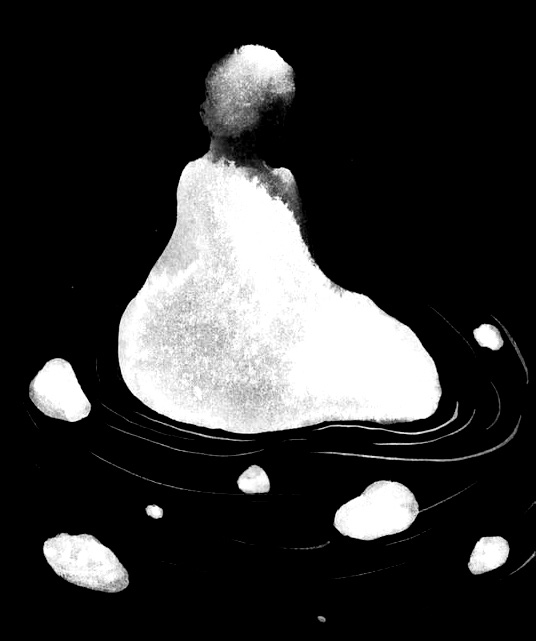
如來沒有四相，所以在如來的意識裡，沒有度人的自己和要度的眾生。“有我”與“非有我”，“凡夫”與“非凡夫”都是分別心中產生的相，在沒有分別心的境界裡本不存在。
佛問須菩提：“你怎麼認為？可以根據如來的三十二相來見到真正的如來嗎？”
須菩提回答說：“可以的，可以根據如來的三十二相來見到真正的如來。”
佛說：“須菩提，如果可以根據如來的三十二相見到真正的如來，那麼轉輪聖王就是如來。”
須菩提對佛說：“世尊，按照我理解的佛說的義理，不能根據如來的三十二相來見到真正的如來。”
此時，世尊說了一段偈語：如果以色相求見如來，以音聲求見如來，那是行邪道，不能見到真正的如來。
1．“須菩提，於意云何？可以三十二相觀如來不？”
須菩提言：“如是如是，以三十二相觀如來。”
佛言：“須菩提，若以三十二相觀如來者，轉輪聖王即是如來。”
須菩提白佛言：“世尊，如我解佛所說義，不應以三十二相觀如來。”
佛問的意思是：能不能把三十二相當做判斷如來的標準，有這樣殊勝的外相就認為是如來，沒有這樣的外相就不是如來。須菩提回答說可以。佛說，如果根據三十二相來判斷是不是如來，那麼轉輪聖王就是如來。因為轉輪聖王是等覺菩薩，也可以現出三十二相。
佛的意思是不能用外相判斷如來。
2．爾時，世尊而說偈言：若以色見我，音聲求我，是人行邪道，不能見如來。
現實裡有很多人說自己夢見了佛菩薩。當我們還執著於相，認為佛菩薩有看得見的形象的時候，才會出現這種夢境。在夢裡，佛菩薩通常會以我們認為的形象出現，或者現出我們信任的某個人的形象。
修行到一定境界之後，佛菩薩不會在夢中以這種看得見的形象出現，而是用語言來跟我們交流，或者直接把重要的資訊告知於我們，但沒有音聲。
如果有音聲，我們應該能用形容詞描述它，比如是男聲或者女聲，聲音尖銳或粗獷，但實際上描述不了，因為它不是音聲。但這個語言有語氣，通常都是以我們熟悉和信任的人的語氣來跟我們說。所以在夢中，或者比較淺的禪定境界當中，意識裡會出現一些有語氣的語句，還告訴我們某些重要資訊，那麼可以認為是佛菩薩在向我們發資訊。
修行再提升一個境界之後，佛菩薩會用情緒向我們發資訊。我們會感知到有其他意識進來了，實際上就是意識重疊，我們還會明確地感知到，這個意識的情緒在變化。他會用情緒的變化來告訴我們什麼事該做或者不該做。還有佛法上的一些重要義理也可以用這種情緒變化的方式來告訴我們。但是要修到這個境界不容易，大部分人都是在夢裡或者較淺的禪定當中，看到有形象的佛菩薩。如果你把這個作為“聖解”（正確的觀念），就有可能會沉迷於此。
我們要知道，佛菩薩的意識遍虛空，一直和我們重疊在一起，也可以說我們都生活在佛菩薩的意識當中，所以佛菩薩知道我們的所有想法。當我們知道了這個真相，並且深信不疑，也不再以形象求見佛菩薩的時候，佛菩薩就不會在夢裡用形象來給我們發資訊了。
怎麼判斷進來的意識是佛菩薩，而不是魔？要知道所有的魔都在欲界六天當中，也就是有淫慾。等我們滅盡淫慾進入初禪之後，就不會再受外魔的干擾。一旦有淫慾的意識接近我們，我們馬上能感知到。因為境界越高，意識越清明；境界越低，意識越渾濁，用清明的意識感知渾濁的意識，那是非常的清晰。所以，當這些有淫慾的天魔接近我們的時候，哪怕它當下沒有起淫慾，我們也能馬上感知到，也就知道這不是佛菩薩。
在《坐禪1》中就教大家，一定要先選一個咒語來修持，要反覆念，唸到夢中都能自動背誦的程度。不管是《大悲咒》，還是《楞嚴咒》，任何咒都可以。在睡夢中，還是禪定中，只要有不好的意識接近我們，我們馬上就可以念出咒語，把他們嚇跑。
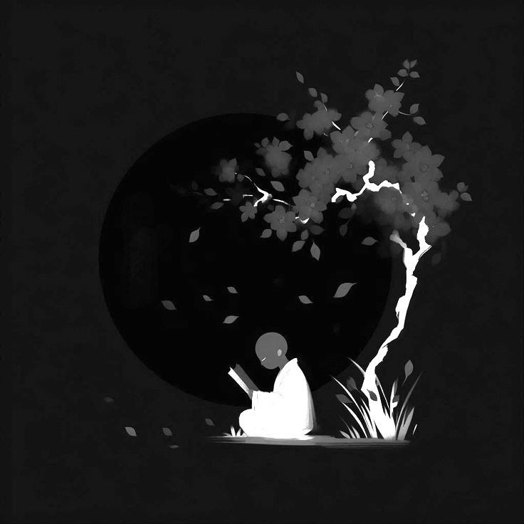
不能以色相或者音聲求見如來。佛菩薩的意識遍虛空，沒有我們看得見的形象，也沒有聽得見的音聲。如果以色相或音聲求見如來，那就是行邪道。
“須菩提，如果你這樣想：‘如來不是因為有了具足相，才能證得阿耨多羅三藐三菩提。’須菩提，不要這樣想：‘如來不是因為有了具足相，才能證得阿耨多羅三藐三菩提。’須菩提，如果你這樣想：‘發阿耨多羅三藐三菩提心者，說諸法斷滅。’不要這樣想。為什麼呢？發阿耨多羅三藐三菩提心者，於法不說斷滅相。”
1．須菩提，汝若作是念……須菩提，莫作是念
須菩提，如果你這樣想……就不要這樣想，想的內容是什麼呢？
如來不以具足相故，得阿耨多羅三藐三菩提。
“如來不是因為有了具足相，才能證得阿耨多羅三藐三菩提（無上正等正覺）。”——這是想的內容，貌似這個想法是正確的。但是佛叫須菩提不要這樣想，那是不是應該想：“如來是因為有了具足相，才能證得阿耨多羅三藐三菩提。”——這麼理解也不對。
有些人認為外相如何，才能證得什麼果位。這是把因與果顛倒過來的錯誤認知。正確的理解是，先修到了哪個果位，才能出現什麼樣的外相。但在這一段裡，這也不是佛要說的內容。
《金剛經》裡反覆強調的義理是，所有的相都是分別心裡產生的幻，“具足相”與“非具足相”，“阿耨多羅三藐三菩提”與“非阿耨多羅三藐三菩提”，都是分別心裡產生的相，在沒有分別心的境界裡本不存在。我們只是給它們如此取名罷了。
所以在這一段裡，佛要說的是，“具足相”和“阿耨多羅三藐三菩提”沒有任何關係。“具足相”是分別心裡產生的相，本不存在，自然和“阿耨多羅三藐三菩提”產生不了因果關係。
2．須菩提，汝若作是念，發阿耨多羅三藐三菩提心者，說諸法斷滅，莫作是念。何以故？發阿耨多羅三藐三菩提心者，於法不說斷滅相。
關於“斷滅相”有兩種解釋：一種是外道斷滅論；還有一種是佛道斷滅論。
外道斷滅論比較好理解，是把死亡當作終結的認知。只要人一死，意識就會徹底消失，從此不會再出現在這個世界裡。
外道斷滅論有七種：
第一種是人道肉身的斷滅論。認為在人道，我們的肉身消失，意識就會消失，人在這個世界中徹底消失。
第二種叫欲界人的斷滅論。外道也可以修到欲界，斷滅論認為欲界天的眾生如果死了，他的意識和身體會徹底消失，從此不再出現在這個世界裡。
第三種是色界人的斷滅論。色界開始已經是陽神狀態，初禪、二禪、三禪、四禪都可以稱之為色界天。斷滅論認為這些天的眾生死了，他們的意識和身體也會徹底消失，不會再出現在這個世界裡。
再往上四種斷滅論分別對應無色界四天——空無邊處天、識無邊處天、無所有處天、非想非非想處天。認為無色界天中的眾生死了，他們的陽神和意識都會徹底消失，不會再出現在這個世界裡。
初禪開始，三禪、四禪都是陽神狀態，但是初禪天的眾生不是圓球形陽神，稍微有人的形象。再往上從二禪開始，陽神身體基本上恢復成為一個由光子組成的發光的球體。斷滅論認為當身體死亡的時候，意識也會消失，從此不再出現在這個世界裡。這樣把死亡看作終結的觀念叫“外道斷滅論”。
還有一種叫佛道斷滅論。最初佛傳法的時候有一些弟子們信奉佛道斷滅論，但是佛在不能把“諸佛同體”的真相和從這裡延伸出來的業徹底講清楚的情況下，沒有辦法駁斥佛道斷滅論。後來在編撰佛經的時候和外道斷滅論混為一談，其名相逐漸消失在歷史中，但佛道斷滅論的認知被一些宗派認可，出現了“即身成佛”的理論。
佛道斷滅論也有七種：
第一種也叫“身滅”，認為死後身體永恆消失。這裡只說身體，不說意識。
第二種叫“欲盡滅”。到了初禪天，淫慾滅後就會永遠消失，不會再出現。
第三種是“苦盡滅”。二禪天開始離苦，已經沒有肉身死亡的痛苦。我們這個肉身主要是下三根——觸覺、嗅覺和味覺合成；從二禪天開始只有上三根——視覺、聽覺、冷暖覺合成，身體是發光的陽神。在下三根當中，身根觸覺是可以帶來很大痛苦的感知能力。到了二禪天把身根觸覺滅掉之後，肉體上的痛苦基本就消失了，所以叫“離苦”。苦盡滅的觀念裡，離苦後痛苦將會永恆消失，不再出現。
第四種叫“極樂滅”。三禪天離喜妙樂後，這個樂受將會永恆消失。什麼叫安住於三禪？就是暫時熄滅情緒，但是沒有完全消失。三禪天開始，下三根和上三根全部消失，情緒方面會進入一種非常清淨的狀態。在《坐禪1》中講過情緒的演化過程，中間就有“幸福感，快樂”這樣的情緒，可以稱之為“喜妙樂”，而左右都是苦情。斷滅論認為，禪定修到一定境界，喜妙樂也會消失，從此不再出現。
第五種叫“極舍滅”。“極舍”就是捨棄一切的意思。到了四禪天情緒徹底消失後“舍念”清淨。“念”是文字妄想、注意力、情緒。當這些全部消失後，連舍念（要捨去什麼的念頭）都會消失，從此不再出現。
一些沒有學到正法的修行人修到四禪境界，文字妄想、注意力和情緒全部消失的狀態下，就會認為自己已經舍掉了可以舍掉的一切，實則不然。四禪天的下段有黑暗，上段沒有黑暗，黑暗與光明是宇宙的根本狀態。沒有學到正法的修行人們，根本不知道黑暗和光明都是自己執著當中形成的幻境，所以他們認為已經全部舍掉了，從此不再出現。
第六種是四空天本身的滅相。到了四空定之後本來具有的滅相已經達到了，進入一種我滅的狀態，會出現意識在消融的感覺，斷滅論認為這就是永恆地消失，“我”從此不再出現。
第七種是四大洲的滅相，也就是宇宙本身之滅相。當修行到對外的感知能力全部消失的時候，會感受到宇宙也一併消失，從此不再出現。
這樣一共有七種佛道斷滅論：身滅、欲盡滅、苦盡滅、極樂滅、極舍滅、四空天本身具有的滅相、四大洲的滅相。在這裡，禪定的分法都是佛教的內容，所以叫“佛道斷滅論”。
為什麼佛會教這樣的內容？就是因為佛不能講有關“諸佛同體”的內容。如果講了“諸佛同體”，那麼後面就會延伸出一系列問題——業的輪轉、佛創造世界、分家成佛、繼承成佛、傳法團隊的運作、文明設計，等等問題。最後還會講到業非常難消，每一世都只能消一部分，所以修行人要反覆地投胎，消很多的業才能真正解脫；而且凡夫還看不到自己業的總量，也看不到每一個具體的業。
根器低劣的人聽到這些內容，會陷入極大的恐懼當中，所以佛前期並不講有關“諸佛同體”和業的內容。其結果就是產生了佛道斷滅論，一些人認為只要自己的執著和習氣滅盡，就是永恆的解脫。佛也沒有辦法從理論上把它說破，告訴人們要反覆投胎消業和修行才能成佛，過程也非常漫長。
“即身成佛”就是從佛道斷滅論裡延伸出來的說法。到現在還有一些宗派相信“即身成佛”的理論，認為這一世努力修行就可以成佛。
在後世傳承的過程中，有些人看出佛道斷滅論在邏輯上有漏洞，但又說不上原因，可放任不管會影響整體佛法的可信度。所以開始把佛道斷滅論和外道斷滅論混為一談，最後統統歸類到外道斷滅論當中，從此“身滅”“欲盡滅”等內容都變成了外道十六宗之一。
當初佛的弟子中也有一部分人信奉這種斷滅論，尤其是提婆達多。那些信佛卻不怕造業的人，他們的理論根基就是佛道斷滅論，認為不管造多大的業，只要這一生解脫了，就不用受報。
回到原文。
須菩提，如果你這麼想——發大菩提心者說諸法斷滅。你不要這樣想，這是錯誤的。為什麼呢？因為發大菩提心者於法不說斷滅相。
在這裡，“斷滅相”與“非斷滅相”都是分別心裡產生的相，在沒有分別心的境界裡本不存在，我們只是給它取名叫“斷滅相”與“非斷滅相”。
為什麼發大菩提心者與法不說斷滅相？第一，因為普度眾生的大願和斷滅論相衝突。如果執著和習氣滅盡就不再出現，那自己解脫就算結束了，不需要投胎去消業和度人。第二，斷滅相是分別心中產生的相，有大菩提心的人應放下分別心，在無分別的境界裡度人。
外相和無上正等正覺沒有因果關係。發大菩提心的人不說斷滅論，也不應帶著分別心度人。
“須菩提，如果有菩薩用可以裝滿恆河沙等世界的七寶來佈施，另有人悟到一切法無我的真相，得成於忍，後者所得到的功德勝過前菩薩財佈施的福德。為什麼呢？須菩提，因為諸菩薩不接受福德。”
須菩提對佛說：“世尊，為什麼菩薩不接受福德？”
“須菩提，菩薩對於所做的福德，不應貪愛和執著，因此說菩薩不接受福德。”
1．若復有人知一切法無我，得成於忍
菩薩的忍叫“無生法忍”，所以叫“得忍菩薩”。佈施財寶、寶貝的菩薩叫“寶施菩薩”。在佛法上做的善事叫“功德”，與佛法不相關的善事叫“福德”，功德和福德要分清楚。得忍菩薩的無漏功德勝過寶施菩薩的有漏福德，為什麼呢？因為菩薩是不受福德的。
不管用什麼佈施，只要是能看得見的財佈施，它的福德都不如無我境界裡進行的法佈施。
在原文中，沒有說“得忍菩薩”做了法佈施，只是“得成於忍”，光是這個修行的功德就比財佈施的福德大。
2．須菩提白佛言：“世尊，云何菩薩不受福德？
須菩提，菩薩所作福德，不應貪著，是故說不受福德。
“不應貪著”中的“貪著”分成貪愛和執著，就是喜歡的意思。菩薩不管是做福德還是做功德，不應執著、也不應貪圖功德、福德，這樣才是真菩薩。因為菩薩沒有我相、人相、眾生相、壽者相，菩薩的佈施叫“三輪體空”，在意識層面上沒有佈施的我，沒有受佈施的人，也沒有佈施這種行為，這樣才能稱之為菩薩。
“得忍菩薩”的功德遠遠大於各種財佈施的福德，菩薩做佈施，不應執著功德、福德。
“須菩提，如果有人說如來有來、有去、有坐、有臥，那麼這個人沒有正確理解佛說的義理。為什麼呢？如來是沒有地方可以來的，也沒有地方可以去，所以才叫‘如來’。”
佛菩薩的意識遍虛空，所有眾生的自性都遍虛空。如來已經滅掉了一切妄想、分別、執著，回到了自性當中沒有任何妄想的狀態，所以如來的意識覆蓋所有法界，也就沒有可以來的地方，也沒有可以去的地方。在沒有肉身的情況下，也就沒有坐、臥等行為。
對於我們大乘修行者來說，首先要知道的真相就是這一點——佛菩薩的意識遍虛空。也就是說，我們都生活在佛菩薩的意識當中，因此我們的一舉一動、舉心動念，佛菩薩都知道。

如來的意識遍虛空，因此沒有來去，也沒有坐臥。
“須菩提，如果有善男子、善女人，把三千大千世界碎為微塵，你認為微塵的數量多不多？”
須菩提說：“非常多，世尊。為什麼呢？如果微塵眾真實存在，佛就不會說是微塵眾了。所以，佛說‘微塵眾不是微塵眾’，只是取名叫‘微塵眾’。世尊，如來所說的‘三千大千世界’不是世界，只是取名叫‘世界’。為什麼呢？如果世界真實存在，那麼它是一合相。如來說一合相不是一合相，只是取名叫‘一合相’。”
“須菩提，一合相也是不可說的，但凡夫執著於此。”
1．佛說微塵眾即非微塵眾，是名微塵眾。
與上同理。“微塵眾”與“非微塵眾”都是分別心中產生的相，在沒有分別心的境界裡本不存在。因此可以說，“微塵眾不是微塵眾”，也可以說，“微塵眾等於非微塵眾”，我們只是給它取名叫“微塵眾”。
2．世尊，如來所說三千大千世界，即非世界，是名世界。
與上同理。“世界”與“非世界”都是分別心中產生的相，在沒有分別心的境界裡本不存在。因此可以說，“世界不是世界”，也可以說，“世界等於非世界”，我們只是給它取名叫“世界”。
3．何以故？若世界實有者，即是一合相。如來說一合相，即非一合相，是名一合相。
與上同理。“一合相”與“非一合相”都是分別心中產生的相，在沒有分別心的境界裡本不存在。因此可以說，“一合相不是一合相”，也可以說，“一合相等於非一合相”，我們只是給它取名叫“一合相”。
一合相：指一切由眾多極微分子合成的有形物質，也就是說，這個世界是由極小的根本粒子堆疊而成。
最初佛講法的時候說，世界是地、水、火、風四大和合而成。這是佛陀出世之前，婆羅門教和其他外道教派已經有的理論。佛最初講小乘理論的時候就把外道的“四大理論”直接拿來用，說世界乃至包括我們的肉身都是四大和合而成。到後面講大乘理論的時候才開始講一合相，說這個世界是由極小的粒子和合而成，和“四大理論”不同。“地、水、火、風”也可以分解為極小的粒子，所以這個世界的真相還是一合相，是由最小的粒子——光子和合而成。
那麼佛為什麼一開始就不講真相？第一，因為當時的人難以接受。第二，一個剛出現的理論學說不適合全盤否定歷史悠久的學說，這樣很容易被其他學派的支持者圍剿。因此，佛早期講的理論很多都是方便法，並不是究竟的理論。隨著傳法的推進，佛也收了足夠多的弟子，也開始形成一定的影響力，之後佛才開始講大乘理論。但是一部分弟子只學了早期的方便法就離開了僧團，因此也出現了小乘教派，到現在學小乘理論的人還是認為世界是由四大和合而成。
4．須菩提，一合相者，即是不可說，但凡夫之人貪著其事。
一合相也是不可說的，佛的意識裡沒有妄想、分別、執著，因此也不存在一合相。但是凡夫執著這個世界的構造，所以只能用這種說法來解釋。
也就是說，任何事情只要說出來就落分別，但是不說又沒有辦法傳法。凡夫一旦聽到法就會以分別心和執著心來理解，所以佛用語言傳授佛法的時候一再強調不要用分別心認知世界。因此在《金剛經》裡反覆地說，“相”即是“非相”，只是取名為“相”。修菩薩道的人，一定要把分別心滅掉，超越相與非相，才能看到世界的真相。
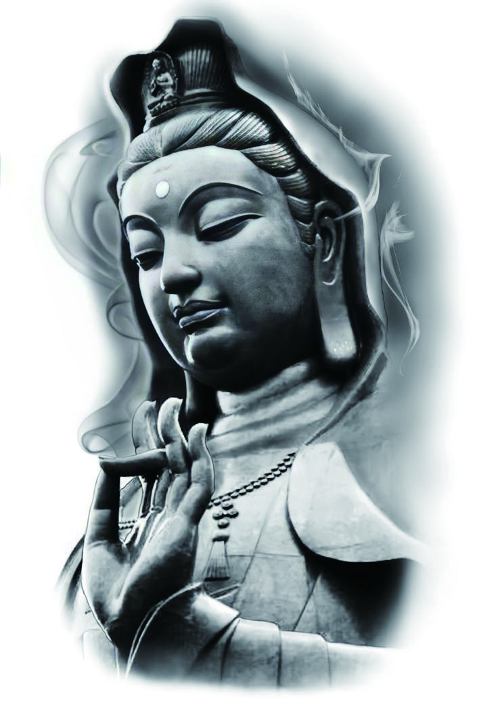
微塵、世界、一合相，這些我們看得見的物質世界，都是眾生意識裡的分別心和執著心所幻化出來的幻境，在佛的境界裡本不存在。
佛問：“須菩提，如果有人說，佛曾經說過我見、人見、眾生見、壽者見，你怎麼認為？這個人有沒有準確理解佛所說的義理呢？”
須菩提回答：“不，世尊，說這樣話的人沒有正確理解佛所說的義理。為什麼呢？世尊說的‘我見，人見，眾生見，壽者見’不是‘我見，人見，眾生見，壽者見’，我們只是給它取名叫‘我見，人見，眾生見，壽者見’。”
佛說：“須菩提，發阿耨多羅三藐三菩提心的人，對於一切法，應該這樣知道、這樣認為、這樣相信和理解，在意識層面上不應產生法相。須菩提，我說的法相，如來說不是法相，只是取名叫‘法相’。”
1．世尊說我見、人見、眾生見、壽者見，即非我見、人見、眾生見、壽者見，是名我見、人見、眾生見、壽者見。
我見、人見、眾生見、壽者見：執著有三種境界，分“見、取、執”。
見：就是“我認為”。我認為人應該這樣，我認為社會應該這樣，有了這個“我見”，就很難接受不一樣的理論和現象。所以“我見”是最深層的執著，也是一切衝突的開端。
取：是“我想要”，是貪慾。
執：是控制慾。
在這一段裡，佛說的“四見”與“非四見”都是分別心中產生的相，在沒有分別心的境界裡本不存在。因此可以說，“四見不是四見”，也可以說，“四見等於非四見”，我們只是給它取名叫“四見”。
2．須菩提，發阿耨多羅三藐三菩提心者，於一切法，應如是知，如是見，如是信解，不生法相。須菩提，所言法相者，如來說即非法相，是名法相。
發大菩提心，要成就無上正等正覺的人，也就是想成佛的人，要正確理解分別心，要捨棄分別心，捨棄分別心中產生的一切相，包括“法相”與“非法相”。佛說的“法相”與“非法相”都是分別心中產生的相，在沒有分別心的境界裡本不存在。因此可以說，“法相不是法相”，也可以說，“法相等於非法相”，我們只是給它取名叫“法相”。
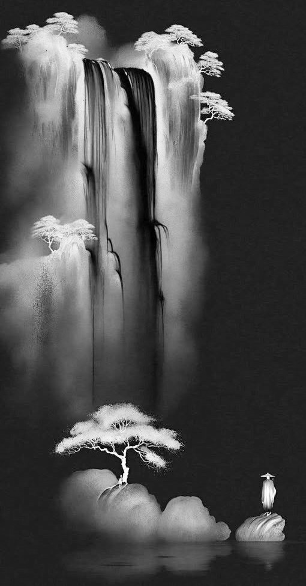
如果有人說：佛曾說過“我見、人見、眾生見、壽者見”，那麼他沒有真正理解佛說的義理。“四見”都是分別心中產生的相，在這之上形成的執著。發大菩提心者，應當努力滅分別心，做到不生一切相。
“須菩提，如果有人以滿無量阿僧祇世界的七寶進行佈施，如果又有善男子、善女人，發大菩提心者，受持讀誦《金剛經》乃至四句偈，為他人講解，這個功德比前者的財佈施還要大。怎樣為他人演說呢？不執著於相，如如不動地演說。為什麼呢？一切有為法，如夢幻泡影，如露亦如電，應該有這樣的認知。”
佛講完《金剛經》，長老須菩提，還有諸比丘、比丘尼、優婆塞、優婆夷，一切世間天、人、阿修羅等，都生起了無量歡喜心，相信和接受了佛的教法，依此奉行。
1．若有人以滿無量阿僧祇世界七寶持用佈施，若有善男子、善女人發菩提心者，持於此經乃至四句偈等，受持讀誦，為人演說，其福勝彼。
阿僧祇：譯為無數，是從梵文裡直接音譯過來的詞。
這裡又拿修行和法佈施的功德跟財佈施的福德進行比較。前面出現過“世界碎為微塵”，“無量三千大千世界”這樣的說法，這裡說的是“無量阿僧祇世界”。三千大千世界是一個世界，無量阿僧祇世界就是無數的世界。用滿無數世界的七寶進行佈施，這個福德應該很大。但是後面說“若有善男子、善女人，發菩提心者”，受持讀誦《金剛經》，乃至四句偈，還為他人講解，所得到的功德比前者的福德還要大。在這裡重點是“發菩提心”，有大菩提心，發願普度眾生的人，受持讀誦《金剛經》，乃至四句偈等，還為別人講解，這個功德才是真正的巨大。為什麼呢？因為沒有菩提心的人，所有的行為都是為自己，只為自己的解脫或福報而修行，那麼功德就會大打折扣。
2．云何為人演說？不取於相，如如不動。
取：是執著的第二種境界。
如如：指的是真相，或是真理，是不動搖的，永恆存在的，所以叫“如如不動”。
這裡講的是傳法人的態度，傳法人不應執著於相，包括“法相”與“非法相”，更不應有“認為自己在傳法度人的相”。
3．何以故？一切有為法，如夢幻泡影，如露亦如電，應作如是觀。
有為法：可以理解為執著。從非想非非想處天的“對妄想本身的執著”開始，對應以下所有世界的執著都可以看作是“有為法”。在我們這個世界裡，起了情緒，就會帶出慾望，一切因慾望而做的事情都是“有為法”。
夢、幻、泡、影、露、電：這些事物都是瞬息萬變的、不恆常的、時有時無的，是不應追求的幻境。
“如是觀”中的“觀”：是認知、觀念。
佛在這一段裡要表達的意思是，在執著形成的輪迴世界內，一切造作的行為都是虛幻。
4．佛說是經已，長老須菩提及諸比丘、比丘尼、優婆塞、優婆夷，一切世間天、人、阿修羅，聞佛所說，皆大歡喜，信受奉行。
比丘、比丘尼、優婆塞、優婆夷：出家的男性弟子叫“比丘”，出家的女性弟子叫“比丘尼”；未出家的在家弟子中，男性叫“優婆塞”，女性叫“優婆夷”——合稱“四眾弟子”。
奉行：按照佛的教導修行，還要落實到日常生活中。

受持讀誦《金剛經》，為他人講解《金剛經》的功德比任何形式的財佈施的福德都要大。講法人為他人講經時，不應執著於任何相，要如如不動地講，要把一切造作之想法和行為都看作虛假的幻境。
再一次強調，讀本書之前一定要看《坐禪1》和《坐禪2》，尤其是《坐禪2》中的“分別心”部分。在《金剛經》中，佛反覆地說“相”與“非相”都是分別心中產生的幻，只是給它取名叫“相”。但佛並沒有把九種分別心講清楚，只是告訴大家，修行人應該對“一切相”有如此這般的認知。
實際上佛經有很多內容都是如此，最初編撰佛經的目的是讓大家信佛。真正的修行在後面，根據每個人不同的業和根器選擇適合的法門，在修行過程中遇到的境界也各不相同，因此沒有辦法對大眾直接講太多實修的部分。很多人把佛經裡的內容當做世界真相的全部，從一個瞭解真相的人的視角看，佛經只講了世界真相的很小一部分，它只是把有緣人引入門而已。
目前市面上流通的大藏經就有四套 ：一套是漢傳的大藏經，現在最全的是《乾隆大藏經》，還有《高麗大藏經》《藏傳大藏經》，南傳的《巴利文大藏經》。一個人如果不實修，只是研究佛經，那麼就算把四套大藏經全部背熟，那也只是原地踏步，甚至還會滋長貢高我慢心。我們學習佛經、研究佛經，是為了理解佛所說的世界真相。理解之後就要真實地修行，真正做到與佛同行、與佛同願，才能與諸佛心心相映，在修心和消業方面不斷進步。

最後祝願所有有緣人，此生業盡時都能證道，求往生者得往生，求解脫者得解脫。
《心經》——全稱《般若波羅蜜多心經》。
此經文旨，原出於大部《般若經》內有關舍利子的各品，即是秦譯《大品般若》的〈序〉〈奉缽〉〈習應〉〈往生〉〈嘆度〉五品（《大品般若》卷一至卷二），唐譯《大般若經》第二分初〈緣起〉〈歡喜〉〈觀照〉〈無等等〉四品（《大般若經》卷四〇一至卷四〇五）。各品所說的內容是佛和舍利子問答般若行的意義、功德，此經即從其中撮要單行。
公元627 年，玄奘法師啟程去往印度。在離開唐朝前，路經一座寺院時遇到一位生病的老和尚。玄奘法師心生憐憫，便留在該寺院照顧這位老和尚。老和尚病癒之後，為了報答玄奘法師，將梵文《心經》傳授於他。後來西行的路中，玄奘法師每次遇到困難都會背誦《心經》，每每都能化險為夷。
有一次在印度，玄奘法師遇到一群外道，要燒死活人獻祭他們的神。這些人看到玄奘法師這位外國僧人，就把他抓住，試圖燒死玄奘法師。玄奘法師就對這些外道們說：他作為僧人，要在死前把當天的功課做完。外道們同意。玄奘法師自己登上祭壇，盤腿而坐，默唸《心經》三遍。屆時狂風大作，外道們驚恐，不敢傷害玄奘法師，遂放其離開。
公元645 年，玄奘法師帶著六百五十七部佛經回到長安。
公元649 年，玄奘法師開始譯經，最先翻譯的就是這部《心經》。
《心經》的“心”字，有兩種解釋：
第一種解釋叫諸佛之母。是《大般若經》之心要，是從《般若經》的核心內容中概括而來，也可以說是《八萬大藏經》的濃縮版。《心經》把佛法理論中最核心的內容濃縮在了二百六十字當中，用最為簡練的語言準確表達了佛法的真諦。
第二種解釋叫真心。此真心是萬法之始、眾義之宗；亦是諸佛所證、眾生所迷；就是指眾生的最底層意識——阿賴耶識。所有的妄想、分別、執著，眾生的一切苦、業的輪轉，都從阿賴耶識裡產生。
“經”字，在梵語裡叫修多羅，譯為契經；在漢語裡是路徑的意思。所以“經”便是去往真理的路，所有佛經都可以說是去往真理的路。
觀自在菩薩，行深般若波羅蜜多時
先講“觀自在菩薩”，在漢地也叫“觀世音菩薩”，是西方三聖中的第二位，阿彌陀佛的大弟子。不過，他到底是倒駕慈航的佛，還是等覺菩薩——這種事情沒必要較真，我認為都屬於故事。
但是有一點大家要明白：自性——阿賴耶識當中，沒有妄想的時候叫“佛”。佛只要自己主動起一個妄想，就叫“等覺菩薩”。佛可以自由切換等覺菩薩和佛兩種狀態。而真正的等覺菩薩，他的妄想和某一段業聯絡在一起，只有消了相應的業才能滅這個妄想，然後可以成佛；只要業還在，就不能成佛。
真正的傳法需要三類人同時發力：
第一類人是給自己記憶中的所有眾生提供加持力的佛和高階別菩薩。簡單來說，加持力就是幫助修行人快速提升的一種力量，它背後也有運作的邏輯——請參考《坐禪2》中關於加持力的部分。
第二類人是給特定的眾生提供幫助和引導的菩薩。菩薩可以同時給很多人顯化身或者託夢，用各種方式進行干預和引導。雖然不是以報身形態直接接觸，但還是屬於點對點的幫助。
傳法既需要第一類人給所有眾生同時加Buff，也需要第二類人給特定的人提供適合他的幫助和干預，也就是通常所說的方便法。
第三類人就是帶著業、以報身形態進入輪迴消業和度人的菩薩和羅漢。大部分情況下菩薩、羅漢們都會帶著業下來，一邊消業，一邊度和自己有緣的眾生。也有個別菩薩在沒有業的情況下乘願再來，和沒有業緣的眾生結新緣後再度。其中，大眾傳法通常由四大職業的人來做，因為大眾傳法難免會和沒有業緣的眾生再結新緣，這就需要有平等普化心或者同體大悲心。
真正的傳法需要這三類人同時發力才能正常進行，少任何一類人都難以推進。
有人問，為什麼佛菩薩不能用顯化身的方式來度人，非要投胎來？
首先，佛是已經消完業的人，所以不會用報身進入輪迴。大部分情況下佛會一直提供加持力，有必要的時候也會用顯化身的方式幫助人。至於菩薩，因為業沒有消盡，需要進入輪迴來消業，同時度和自己有緣的人——這是菩薩必須要做的事。
對於凡夫而言，一個從來沒有出現在其面前的人，光靠意念傳遞資訊的方式想讓其改變，有很大的侷限性。有些人會認為自己產生了幻覺，甚至有些人會認為是天魔外道在勾引自己幹什麼壞事。
尤其是現實生活中，遇到非常重要且緊急的事情需要決策的時候，這種虛幻的干預很難起效。因為人畢竟生活在現實當中，重要的決策還是根據現實利益來做。哪怕菩薩用顯化身或者託夢的方式進行干預，大部分情況下人們很難接受。唯有深信佛法，且對佛理有深刻理解的人；尤其是知道諸佛同體的真相，和發心純正的人，才有可能會接受這樣的干預。
修行必須得有人引導，除了示範性的操作和具體指導之外，鞭策和鼓勵都是必須的。所以投胎到人間，帶著報身消業和度人的菩薩、羅漢也是傳法中不可或缺的一環。
因此，真正的傳法是這三類人同時發力的情況下才能推進。
關於觀世音菩薩到底有沒有業，我也不好說，我認為他基本沒有業。每次出去傳法，如果前期造了一些業，變成了等覺菩薩，到了傳法活動即將結束的時候，會把業消完，然後撤出——這樣就回到了他原來的法身境界。所以他到底是等覺菩薩，還是倒駕慈航的佛，對於凡夫來說並不重要。
還有一個問題，就是菩薩的搭檔體系，觀世音菩薩和大勢至菩薩是一對搭檔。當一人帶著業進入輪迴的時候，另一人就會在法身地提供保護和指導，這樣才能保證進入輪迴的人順利地消業和修行。
還有，搭檔會一起指導凡夫徒弟。從凡夫徒弟的視角看，拜的師父是一對搭檔中的一人，因為一對搭檔不會同時進入輪迴。但是對徒弟的指導卻是二人一起做，一人在輪迴內帶徒弟一起修行，另一位沒有投胎的人會在法身地提供保護和指導。就因為是法身地做的指導，可以不間斷地提供加持力和幫助，有些時候這種法身地的指導比在人間帶著報身修行的師父還要有效和直接。
對於凡夫而言，之所以能夠得到法身地菩薩的直接加持和指導，都是因為拜了投胎到人間的再來人為師。如果覺得法身地菩薩更厲害，從而對上師產生輕慢心，那邊的加持馬上就會斷。
組成搭檔還有一個好處，就是做事的時候會有互補。觀世音菩薩和大勢至菩薩是性格不同的人。要知道，菩薩在法身地是沒有性格的，但是一旦帶著業投胎到人間，就會帶出凡夫時期的性格。
觀世音菩薩的性格是勇猛剛毅，更傾向於男性；大勢至菩薩的性格是善忍柔和，是能引發別人同情心和保護欲的性格，更傾向於女性。和他相處就會覺得這個人太善良、太純潔了，希望能保護他的純潔——大勢至菩薩是能引發別人這種慾望的人。
當兩種不同性格的人一起做事的時候就可以互補。一個人下去做事，按照自己的性格行事的時候，另一個人就可以做到一定的節制，控制他不要過分，有了這樣的互補，做事就比較順利。
尤其是人王職業，師父會認真考察兩個人的性格，讓兩個性格不一樣的人結為搭檔。一個人善斷，屬於行動派；另一人善謀，心思縝密，這樣兩個人就可以做到互補。
善斷的人適合打天下，善謀的人適合坐天下。兩個性格互補的人一起做事就非常順利，可以應對大部分突發情況。如果是兩個性格一樣的人一起做事，往往會闖出禍來。
這是在漫長的傳法過程中總結出來的經驗。
“行深”就是深入修行的意思。
什麼是“般若波羅蜜多”的相貌？在《道行般若經》裡講到，“空、無相、無願”就是般若波羅蜜多的相貌。
“空”與妄想相對，有妄想就叫“無明”，沒有妄想就叫“明”或者“空”。有分別心的時候叫“有相”，沒有分別心的時候叫“無相”。“願”就是執著。所以“般若波羅蜜多”指沒有妄想、分別、執著的狀態，也就是佛的狀態。
還有一種比較普及的解釋：“般若”指智慧，“波羅蜜多”指彼岸，“般若波羅蜜多”就是去往彼岸的智慧。
我個人認為，用“空，無相，無願”來解釋“般若波羅蜜多”才是佛的原意。
菩薩的智慧是什麼？菩薩的智慧和凡夫的智慧不一樣。凡夫的智慧叫知人者智——識人的眼光，還能讀懂別人的心思，就叫有智慧。菩薩的智慧是可以消業的智慧，破解一些很難解的業的時候才真正展現出菩薩的智慧。
菩薩六度法中的“佈施、持戒、忍辱”都和業相關。佈施是多造善業給自己積福報；持戒是不再造惡業；忍辱是當惡報來臨時選擇忍，不再進行報復，讓業的輪轉到這裡結束。
“精進”是修行人的一種態度，就是堅持不懈，努力做的意思。菩薩要努力地推進其他五種修行。
“禪定”就是滅妄想、分別、執著的過程，就是滅習氣的修行方法。“修行”二字分開來看——“修”指修心，是滅妄想、分別、執著和滅習氣的過程；“行”指消業的過程。
“般若”指菩薩消業的智慧，同時也是度人的智慧。因為要把人帶出輪迴，就先要幫其消業，所以這也是一種智慧。
照見五蘊皆空，度一切苦厄。
下面兩個字，叫“照見”。那麼“觀”和“照”的區別是什麼？“觀”是在注意力上用功，把注意力放在一個地方叫“觀”。“照”是在第七識分別心上用功，用分別心同時觀察所有的執著部分。
小乘的四念處修行（觀身、觀心、觀受、觀法）就是在分別心上用功的修行法門。
觀身——觀察自己的身體，坐著是坐著，躺著是躺著，要如實地知道。
觀受——觀察所有的感受，包括皮膚上的觸覺和冷暖覺，還有視覺、聽覺、嗅覺、味覺等五根帶來的所有的感受。
觀心——心可以看作意識本身。要觀察自己的所有心理變化，包括情緒、注意力、文字妄想。
觀法——法是妄想，世間一切都可以稱之為“法”。因為世間一切都是妄想和合而成的幻境。法包括內心的妄想、我們的肉身，也包括外界的器世界和虛空。
對於凡夫來說，“照”是用分別心同時感知一切資訊。
菩薩的“照”是指用妄想來認知整個世界。菩薩的妄想比阿羅漢的分別心境界高，但是在我們的語言體系裡已經沒有比“照”更高階和貼切的詞語，所以只能用“照”來描述菩薩的境界。
“五蘊”：“色、受、想、行、識”。在這裡“色”指所有物質世界，包括我們的肉身和外界的器世界，也包括虛空，總之我們能觀察到的一切統稱為“色”；“受”是我們的感知能力，是六根的覺受。這裡的六根不是“眼、耳、鼻、舌、身、意”，“意根”並不是感知世界的根器，所以要去掉“意”，用身根的觸覺和冷暖覺來代替。用以上六種感知世界的根器感受到的所有感覺叫“受”；“想”是六識執著；“行”是第七識分別心；“識”是第八識裡產生的妄想，是意識最深處的妄想，也是妄想的最小單元。用電腦來說就是最底層的程式碼0和1。我們看到的一切都由這最小的妄想和合而成。
關於“行”，還有另一種解釋是“業”。這是從我們凡夫的視角來看的世界，在這個世界裡人與人之間的關係都可以解釋為“業”。
“苦”指苦惱，包括肉身的痛苦和心理上的痛苦，還有人生當中遇到的各種不好的境遇，也叫“人生八苦”。總之，能讓人痛苦的一切感受和事件統稱為“苦厄”。所以“度一切苦厄”就是消滅一切苦的意思。
舍利子
“舍利子”是人名——舍利弗。“舍利”是他母親的名字，“某某人之子”是古印度的一種取名方法。
據說佛的十大弟子中，舍利弗是智慧第一的人，他十六歲的時候就能把一些外道的理論講得非常透徹。鄰村還有一個人叫目犍連，是佛的十大弟子中神通第一的人，此二人是好友。舍利弗和目犍連曾一起拜了一位外道上師學法，舍利弗很快就學會了外道的基本理論，但是他覺得這個外道的法並不能給他帶來解脫和更高層次的修行體驗。
當時釋迦牟尼佛在王舍城的竹林精舍修行和傳道，每天會讓弟子們入城託缽乞食。舍利弗遇到了出來乞食的馬勝比丘，被他的莊嚴法相和端正威儀所折服，就向馬勝比丘請教。馬勝比丘給舍利弗講了十二因緣法，舍利弗聽完非常歡喜，便帶著好友目犍連和他的二百五十名弟子一起去向佛陀請教，聽完佛陀的講法，舍利弗和目犍連當即向佛陀皈依。舍利弗作為智慧第一的弟子，也是辯才無礙，後來經常代表佛的僧團去和外道進行辯論。
色不異空，空不異色，色即是空，空即是色
“色”就是指物質世界，包括我們的肉身和外部的器世界，以及虛空。“色不異空”的“空”不是指虛空，是“自性本空”的“空”。這裡的“自性”不是指阿賴耶識，是指本體。妄想本身沒有本體，沒有本體的事物可以看作為“空”，所以叫“自性本空”。
“色不異空”不是說色消失後變成了空，而是說色空不二。阿賴耶識當中什麼都沒有的狀態就叫佛，在這個狀態裡忽然產生了妄想，妄想越來越多，最後成了“色”。所以色是從“自性本空”的“空”當中產生，色本身沒有本體，是由沒有本體的妄想和合而成，所以它的本質也是空，因此叫“色空不二”，也叫“色不異空”。
受、想、行、識，亦復如是。
五蘊當中其他四蘊也和“色”一樣，都是從“空”中產生，它們的本質也是空。
舍利子，是諸法空相
我們看佛經，首先要知道這部佛經是給誰講的，根據受眾不同，佛陀講不同境界的法。在這裡，舍利弗是阿羅漢，所以《心經》是針對阿羅漢講的法。
“諸法”是什麼？對我們來說，世間一切都可以稱之為“諸法”。我們的肉身、器世界、虛空，還有我們的一切心理活動和眾生之間的業，都屬於“諸法”。也就是說，“諸法”是妄想、分別、執著的統稱，因此也叫“萬法”。
三法印裡有一條叫“諸法無我”，講的就是世間一切事物和現象當中不存在“我”這個概念，佛法認為“我”這個概念本身就是妄想，是要滅掉的障礙。
“相”是什麼？“相”由分別心產生，通常佛經裡出現“相”字的時候，我們要知道這是指分別心。在這裡“諸法”是妄想、分別、執著的統稱，是有相。有相和空相相對，由分別心產生，在平等心的境界裡，有相等於空相。在無分別的菩薩境界裡，有相和空相都是妄想和合而成的幻，所以諸法的有相和空相一致，叫“諸法空相”。
不生不滅，不垢不淨，不增不減。
如果按照字面意思來解釋，“諸法”——妄想、分別、執著，它不生不滅，不垢不淨，不增不減，如此理解就把《心經》看低了。
諸法本來就已經生出來了，它怎麼能叫“不生”呢？所以在這裡“不生不滅”是指生相和滅相，說的是諸法的生相與滅相一致。在沒有分別心的菩薩境界裡，生相與滅相都由妄想和合而成。
“垢”也叫“染”，“染”字在佛經裡經常出現，“染”與“淨”相對，染相與淨相本質上相同，在沒有分別心的菩薩境界裡，染相與淨相都由妄想和合而成。
“不增不減”亦是同理，諸法本來就是眾生的妄想，妄想可以變得越來越多，也可以減少，那怎麼能說“不增不減”呢？因此這裡的“不增不減”指的是增相和減相，此二者本質上相同，在沒有分別心的菩薩境界裡，增相和減相都由妄想和合而成。
如果不以分別心的境界來解釋“諸法”與“空相”，用更高的菩薩的妄想境界來解釋，諸法就不能叫空相，而叫“諸法本空”。那麼下面的“不生不滅，不垢不淨，不增不減”就不能成立。在菩薩境界裡應該叫“無生”。
是故空中無色，無受、想、行、識
所以，本來這個“空”當中就沒有“色、受、想、行、識”五蘊。
無眼、耳、鼻、舌、身、意
這是六根。六根是用來感知外部世界的器官，是感知能力，所以“意根”不能算作根。真實的六根是眼根視覺、耳根聽覺、鼻根嗅覺、舌根味覺、身根觸覺和身根冷暖覺。
那為什麼佛經裡要把意根當作一個根放進去？
《心經》是由大勢至菩薩扮演的玄奘法師所翻譯，難道他就不知道六根嗎？我認為他知道，但是照舊翻譯。因為佛經一開始就故意留下一些小的漏洞，給真正實修的人去發現。
如果你是實修的人，真的修到那個境界再去看佛經，就會發現一些不大不小的錯誤點。但是這些小小的錯誤不影響佛法整體的真實性，只是講的時候會故意留一些漏洞。就像講故事的時候會埋伏筆一樣，這個伏筆要讀者自己去發現。然後再倒回去從頭開始看，就明白這個伏筆很早以前就已經埋下了。
所以意根不能當作一個感知器官和感知能力來看，它是我們的心理作用，是文字妄想、注意力、情緒等一切執著的統稱。但是如果把“意”當作根來看，那麼“意”和注意力產生矛盾，因為注意力創造出了外界的塵、中間的根和裡邊的識。六塵、六根、六識合稱“十八界”，在這裡外界的塵是感知的物件，而不是感知的器官。
我們只要動用注意力，它至少會在一個根器上起作用。比如我把注意力放到眼睛上去看，那麼外界的塵會反映到我的眼識裡。可以說注意力同時創造出了塵、根、識三界。
無色、聲、香、味、觸、法
“色、聲、香、味、觸”，這是與六根對應的六塵。
“法”就是妄想，意識層面上的思維，與意根相對應。但是“意”不是感知外部世界的根，因此“法”也不是外界真實存在的塵；“法”是外界的塵透過我們的根反映到識中，再根據這個識進行一次意識層面上的加工之後得出的結果。
無眼界，乃至無意識界
“眼界”不光是指眼睛看到外界，眼睛看到外界叫“色塵”，加上眼根、眼識，這三個統稱為“眼界”。
六根、六塵、六識統稱為十八界，在這六識背後用來思考的那個意識就是“意識界”。這裡包括了分別心，還有執著中注意力以上的部分，就是從情緒開始到四禪和無色界定為止，與之對應的各項執著。
無無明，亦無無明盡，乃至無老死，亦無老死盡
“無明”是什麼？有妄想就叫“無明”，那“無無明”就是沒有妄想。“無無明盡”，準確的解釋是妄想的生滅盡了。妄想的生滅——妄想生起又消失，又生起又消失……如此不斷重複，這種妄想生起又消失的狀態滅盡了。
“無老死”是字面意思，“老死”——生、老、病、死中的老死。這裡“無明”到“老死”，是把十二因緣法中間十個省略掉，只留開頭和結尾之後的表達方式。
十二因緣法是什麼？
“無明”是第一個；“無明緣行”，“行”是第二個；“行緣識”，“識”是第三個；“識緣名色”，“名色”是第四個；然後是“名色緣六入，六入緣觸，觸緣受，受緣愛，愛緣取，取緣有，有緣生，生緣老、死、憂、悲、苦惱”。
在這裡“無明”是妄想，自性當中沒有任何妄想的時候叫佛，是“明”的狀態；自性當中產生妄想，佛就跌落為菩薩，是“無明”的狀態。“行”是分別心，“識”是第六識，是執著。
“名色”，準確地講從二禪天開始出現，只有情緒的三禪天還沒有名色。從二禪天開始，意識層面上先產生“名”，然後在外部產生與之對應的“色”。對於我們這些人間的凡夫來說，我們出生之前外界的色世界已經存在。在我們成長的過程中，我們的父母和老師會不斷地告訴我們，這個叫什麼，那個叫什麼，從而在我們的意識裡建立一個個名相。
實際上，眾生從三禪天跌落到二禪天的時候，意識裡會先產生“名”。我想要什麼，我希望這個世界有什麼。這樣的名相會先產生，之後外界就會出現與之對應的物質。整個宇宙都是在我們自性當中產生的妄想，所以我們心裡想什麼，外界就會產生什麼，天界就是這樣的世界。
然後是“名色緣六入”，“六入”就是六根，六種感知外部世界的器官。外界有了“色”，物質世界開始產生，我們也就有了感知物質世界的根。
“六入緣觸”，外塵和根相觸，就是接觸。
“觸緣受”，根塵相觸就會產生“受”，就是我們的覺受。我們看到外界的事物，視覺上會產生覺受；聽到外界的聲音，聽覺上產生覺受；身體碰觸到外界的事物，觸覺上產生覺受。
“受緣愛”，“愛”就是貪愛之心，人有了各種覺受後，就會出現喜歡和討厭的情緒，喜歡和討厭，愛與恨，本質上都是執著。
境界越低的人愛憎越強烈，經常會說“我喜歡這個，我討厭那個，我喜歡這樣的人，我討厭那樣的人”等話。修行境界高了，少了很多執著，愛憎之心也會越來越淡，煩惱也會減少。
“愛緣取”，取和舍相對應。喜歡的感受要取，討厭的感受要舍，或者遠離。取可以看作是追求。
“取緣有”，“有”既指主體，也指客體，也包括“取”這種行為。主體是我，是能取的主人公，客體是外境和外界的事物，是所取的物件。
“有緣生”，“生”就是我們這些凡夫的出生，也可以理解為產生或出現。二禪以下的“生”就從“名色”開始。有了“生”，隨之而來的就是“老、死、憂、悲、苦惱”。
以上是十二因緣法。
無苦、集、滅、道
這是四諦法。佛經裡說，佛在鹿野苑對五比丘初轉四諦法輪，四諦法是佛最初講的內容。佛陀傳法就從我們的人生觀開始講起。我們的人生就是痛苦的集合體，佛陀就從我們能夠真實感受到的痛苦開始講。如果一開始就講宇宙觀，大機率沒有人會認真聽，當時的人大部分都是文盲，知識儲備並不多，對世界的認知也很有限。只有從人生觀開始講起，告訴人們這個痛苦是怎麼來的，為什麼要滅，怎麼滅，如此才能攝取眾生，吸引人來聽法。
不光是佛經，佛陀講法也要提前經過教團隊的人編排。一開始講什麼，後面講什麼，內容的深度和順序都是經過設計的劇本，不是佛陀個人自由發揮的結果。
四諦法，第一個是“苦諦”，對於苦也有多種解釋，最普及的說法是人生八苦。
生、老、病、死四個苦。
生苦，我們出生的時候也是苦的，大部分人出生前後一兩年都沒有什麼記憶，所以記不得出生時的苦。實際上人在羊水裡泡著的時候，皮膚非常細膩，剛出生的嬰兒被毛巾一裹，當時就能感受到很大的痛苦。第一次呼吸也痛苦，被產道擠出來的過程也痛苦，只是大部分人都不記得而已。等哪一天我們修行到了一定境界，能回憶記起在孃胎裡成長到出生的整個過程，我們就會知道——人生真的是從痛苦開始到痛苦結束，而且不光是孩子痛苦，分娩的母親也痛苦。
老苦，衰老肯定是痛苦的，沒有人會否定衰老的痛苦。衰老不僅是外表的老化，整個身體機能都在衰退。只要是輪迴內的眾生，都不能阻止衰老的程序，只是衰老的速度不同而已。
病苦，我們都知道疾病是痛苦的，那麼什麼原因導致疾病呢？有三個原因，第一個原因是惡業。眾生在生死洪流中輪轉，每一世都在造業，其中有善業，也有惡業。通常來說，只要不是修行人，惡業的增長速度會比善業的增長速度快。當惡業積攢到一定程度就會帶來各種疾病。第二個原因是不好的生活習氣。包括喝酒、抽菸、吃肉等等，很多人不相信因果，也有些人知道這些習氣不好，但控制不了自己的慾望。當不好的習氣對身體的損傷達到一定程度的時候人就會生病。第三個原因是心態。內心陰暗，有太多的慾望和不好的情緒，身體也會生病。
死苦，絕大部分人死亡的時候都很痛苦，不光是死亡的過程痛苦，死亡之前和病魔做鬥爭的時候也很痛苦。只有少數的修行人，提前把此生帶出來的惡報受完，幾個月甚至幾年前就知道自己的時日，做好準備，坦然面對死亡，或者安然等待往生。只有這樣的死亡才是沒有痛苦的死亡。
普通人不僅死的時候痛苦，死後意識還沒有完全離開身體，會在身體旁邊徘徊二十四小時，這個時候還能感知到身體的各種覺受，此時把屍體冷藏或者火化都會讓死者感到很大的痛苦。
除了生老病死之苦，佛陀說眾生還有怨憎恚苦、愛別離苦、求不得苦、五蘊熾盛苦。
怨憎恚苦，討厭一個人也是很痛苦的事情，相信大部分人都有過經驗。我們在社會上生活，周圍不可能全是我們喜歡的人，肯定也有討厭的人，也會和人發生摩擦。這個時候我們就會升起憤怒的情緒，對他人產生憎恨感。不光是當時痛苦，就算事情過去了，每每想起當時的事情還是很氣憤，這都是苦。
愛別離苦，和喜歡的人分開是痛苦，這都不用解釋。
求不得苦，我們對這個世界有很多希求和慾望，包括名譽、財富、愛情、健康等等，想要卻得不到，我們就會感到痛苦。
五蘊熾盛之苦，五蘊是色、受、想、行、識，也是妄想、分別、執著。熾盛的五蘊，在意識層面上會給我們帶來巨大的痛苦。我們的肉身是六根集合體，也是意識的一部分。
四諦法中第二個叫“集諦”。
這個“集”指產生痛苦的原因，就是十二因緣法裡內容。“苦”和“集”是因果關係，集是因，苦是果。
第三個叫“滅諦”，滅就是熄滅之意。把苦的根本原因，也就是無明——最終極的妄想，最底層的那個初妄給徹底滅掉，那麼一切苦全部消失，會達到涅槃寂靜的境界，也叫成佛。
最後是“道諦”，“道諦”有多種解釋，概括起來指的都是滅掉妄想、分別、執著的方法，也就是修行方法。通常解釋為八正道，正見、正思維、正語、正業、正命、正精進、正念、正定，合稱為八正道。也可以解釋為修行次第，凡夫九禪，阿羅漢的九禪，包括菩薩的六度法和十地，全部合起來叫“十地十八禪”。
無智亦無得
“智”是般若，“無智”不能簡單解釋為沒有智慧。從凡夫視角看，佛的智慧稱之為“法界體性智”，也叫“無漏智”，是最圓滿的智慧。但是從佛的視角看，沒有妄想是正常態，所謂的智慧也是妄想出來的幻，所以佛的境界裡沒有稱之為“智慧”的東西，也沒有任何可以得到的東西。
《圓覺經》和《金剛經》裡都說，“一切賢聖皆以無為法而有差別”，說的是佛和菩薩的境界高低是根據妄想的多寡來分。妄想越少，境界越高，智慧也就越高，沒有任何妄想的時候稱之為佛，也就是擁有圓滿智慧的狀態。眾生本來都是佛，是有了妄想之後遮住了本有的智慧，這是大乘佛法的核心觀點。
“無得”，沒有可以得到的東西。佛法的修行過程是不斷捨棄的過程，是滅掉妄想、分別、執著的過程，並不是從外邊獲得什麼，或者從你的內心產生了什麼，而是滅的過程。
以無所得故，菩提薩埵，依般若波羅蜜多故，心無掛礙。無掛礙故，無有恐怖。遠離顛倒夢想，究竟涅槃。
“以無所得故”，因為沒有任何可以得到的事物。
“菩提薩埵”——菩薩，也叫覺有情，有妄想就叫菩薩。自性當中出現第一個妄想，就叫等覺菩薩；再出現第二個妄想，叫十地菩薩；再出現第三個妄想，叫九地菩薩。以此類推，直到初地菩薩。
菩薩叫“覺有情”，覺悟有情眾生，就是度人。菩薩要自度度人，自己修行的同時還要度和自己有緣的所有眾生。為什麼要度人，請看《坐禪2》中的詳細解釋。只顧自己修行，不願度人者，理論上最多能成為阿羅漢，但是實際上連阿羅漢都成不了。因為不發大菩提心，不願意度有緣眾生的修行者是無法遇到再來人傳授四禪以上的修行方法的，所以想解脫，必須要發大菩提心，必須有度人的真實行為才行。
“掛礙”，簡單來說就是執著，能妨礙你成佛的一切東西都可以稱為掛礙。
“恐怖”，這是一種情緒。恐怖之前是歡喜心，當我們的慾望得到滿足的時候，我們就會升起歡喜心。歡喜過後我們又會開始擔心失去，這個時候就會產生恐懼。
“無掛礙故，無有恐怖”，沒有任何執著，也就不會有恐怖這種情緒。
“顛倒夢想”，也可以叫“顛倒妄想”。我們凡夫的第一個顛倒妄想，就是認為肉身是真實的自己。事實上，我們所看到一切都是我們的夢境。
相信所有人都做過夢，我們的夢境也是一個完整的世界，我們都知道夢境是幻，但在夢裡我們很難察覺到自己在做夢。如果在夢裡待的時間足夠長，我們還可以在夢境裡探索，發現夢境的物理規律。我們的夢境是無邊廣闊的，根本找不到夢境的邊界。
但是如果有一個觀察者觀察另一人做夢，那做夢者創造的夢境世界，根本就沒有離開過他的這個大腦位置，一切都是在做夢者意識裡產生的幻境而已。從觀察者的視角看，做夢者的夢境世界根本就不存在。
修行人修行到一定程度之後，夢中能覺察到自己在做夢，這叫清明夢。在夢境裡還可以控制自己自由飛翔，只不過修行人不應該追求這種虛幻的遊戲，所以不建議在做夢這件事上耗費精力。
《圓覺經》裡說，“知幻即離，不作方便，離幻即覺，亦無漸次。”修行人知道了這個世界是幻境，是自己的妄想、分別、執著和合而成的“顛倒夢想”，那就要努力修行，滅除一切妄想，回到覺悟的狀態當中。
三世諸佛，依般若波羅蜜多故，得阿耨多羅三藐三菩提。
“三世諸佛”，過去的佛、現在的佛和未來的佛，全部都統稱為“諸佛”。在佛的境界裡沒有時間，用“三世”這個詞是針對凡夫的方便說法。
假設所有的眾生最終都會成佛，那麼“三世諸佛”是所有眾生的統稱。那麼這個世界只有兩種眾生，一種是佛，一種是非佛，也就是目前還沒有成佛的眾生。而一切眾生都是“依般若波羅蜜多故，得阿耨多羅三藐三菩提”，就是按照空、無相、無願這個方法，消滅妄想、分別、執著之後，最終成佛。
“阿耨多羅三藐三菩提”拆開來解釋，“阿耨多羅”譯為無上，“三藐三菩提”譯為正遍知，合起來就是“無上正等正覺”的意思。在佛經裡，佛有十個稱號——如來、應供、正遍知、明行足、善逝、世間解、無上士、調御丈夫、天人師、佛世尊。在這裡正遍知就是“正確遍知世間一切”的意思。佛有兩種品性，全知和全善，正遍知就是全知的意思。
故知般若波羅蜜多，是大神咒，是大明咒，是無上咒，是無等等咒，能除一切苦，真實不虛。
“般若波羅蜜多”的相貌是什麼？是空、無相、無願。“咒”是密語，為什麼咒語不用我們常用的詞句，而是稀奇古怪的字和音？首先我們要知道，佛菩薩的意識遍虛空，所以我們唸咒的時候，就會連結到咒語背後的那位佛菩薩。如果咒語是我們平時常用的詞句，從佛菩薩的角度來說，怎麼判斷念出咒語的人是有意為之，還是無心而為，要不要給加持，這些都很模糊。
因此故意用我們不常用的字和音寫成咒語，這樣一來，只要有人唸咒，那肯定是專門唸的，並不是無意間說出來的，佛菩薩就可以關注到唸咒之人。
咒有善咒和惡咒之別。為自己和他人的利益而唸的咒叫善咒，比如生病時念的《藥師咒》，還有保護自己和他人的《楞嚴咒》等。以害人為目的的咒叫惡咒。佛陀在世的時候就有一類修行人叫咒師，有些咒師用咒語幫助人；而有些咒師是專門害人，還以此牟利。佛陀曾禁止弟子們修習惡咒。
咒的發動原理是什麼？首先，咒是連結咒語背後的佛菩薩或者某些神的密語，可以請這些大神幫助，達到某些目的。其次，咒語是根據持咒者和聞者的心態和發心來驅動。
比如《大悲咒》，大家都知道，《大悲咒》是觀世音菩薩的咒語，有祛病安神的功效，但是也有一定的殺傷力。如果唸咒的人帶著惡念來唸，聞咒的眾生心中也有惡念，那麼兩者感應之下，聞咒的眾生有可能會受到傷害。有些人在山上念《大悲咒》，山中有不少我們看不見的其他眾生，這些眾生未必都是善類，所以有些眾生會受到傷害。如果聞咒的人心中沒有惡念，那麼唸咒的人就算以惡念來唸，也不可能傷到聞咒的人。
“大神咒”，“神”指的是有效果的意思，“般若波羅蜜多咒”是有實際功效的、可以滅除煩惱或者驅除外魔的咒，用這個“神”字來表明。
“大明咒”，“明”是破除煩惱的意思，就像太陽照破黑暗。用這個咒語可以破除一切愚痴和煩惱。
“無上咒”，沒有比這個咒更高的咒。
“無等等咒”，沒有咒和“般若波羅蜜多咒”一樣，也就是說“般若波羅蜜多咒”是最高階的咒語。
下邊是咒語本身：
故說般若波羅蜜多咒，即說咒曰：揭諦揭諦，波羅揭諦，波羅僧揭諦，菩提薩婆訶。
在梵文裡“揭諦”是去或者度的意思，“波羅”被譯為彼岸，所以“波羅揭諦”就是度到彼岸去的意思。
“僧揭諦”，“僧”在梵語裡指複數，是眾人的意思。所以“波羅僧揭諦”譯為普度眾生一起去彼岸。
“菩提薩婆訶”，“菩提”是覺、是智，無上佛果叫菩提。所以菩提等同於成佛的意思。
“薩婆訶”譯為速疾或者速得，所以“菩提薩婆訶”就是快速成佛的意思。
全部咒語翻譯過來如下：
去吧，去吧，去往彼岸吧，
普度眾生，一起去往彼岸，
早成佛果吧。
咒在五不翻中屬於秘密不翻，但是這個咒語用的所有詞在梵文裡都有明確的含義，所以可以翻譯過來。只不過我們既然是持咒，那麼還是應該念梵語原文，而且知道咒語的含義後再持，更容易得到感應和佛菩薩的加持。
以上是《心經》的全部解讀。